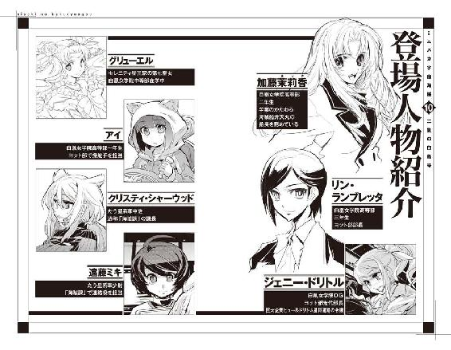
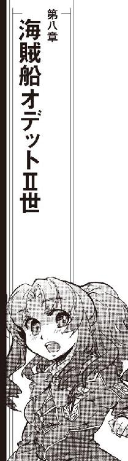

| ミニスカ宇宙海賊 10 二隻の白鳥号 | |
| 笹本祐一 | |
| 朝日新聞出版 (2013) | |

「よし、起きた」
白凰女学院ヨット部所属、練習帆船オデットⅡ世のブリッジで、船長席についていた部長のリン・ランブレッタが嬉しそうに宣言した。
「超光速ブースター、こっちのコントロールに入った。転換炉はアイドリングモード、自動チェックが立ち上がってるが、今のところ異常なし」
「確認しました」
機関席についていたヤヨイが報告した。オデットⅡ世の通常推進系の状況が映し出されていたディスプレイの半分が、超光速機関関連の表示に書き換わる。超光速ブースターの現在位置座標系、及び運動パターンを確認して、ヤヨイは必要データを廻した。
「超光速ブースターは今のところ異常なし、変なスピンがかかっちゃったりしてる兆候もありません。いつも通りの手順で接近、ドッキング可能です」
「了解した」
送られてきたデータを確認したリンは、レーダー／センサー系席の茉莉香に目をやった。
「どおだい？」
「超光速ブースターからのデータ、こっちの観測と一致しています」
許可を得ているとはいえ、星系軍管理の錨泊空域で大出力レーダーを遠慮もなしにぶっ放すわけにはいかない。茉莉香は抑えめに調整した出力のレーダーとセンサーのデータで、予定通りの座標に錨泊していた超光速ブースターの現在位置を確認した。
宇宙空間に長期間放置されていた物体は、軌道や母星の輻射、または微細なガス漏れや埋蔵元素の気化などで回転状態に入ることがある。たう星系軍が管理する錨泊空域の片隅に置かれていた超光速ブースターは、前回の起動からあまり時間が経っていないおかげか、軌道も状態も安定していた。
「これならそれほど苦労しないで掴まえられそうだな。どうだいアイ？」
リンは、操舵手席のアイに声をかけた。ディスプレイに表示された超光速ブースターの姿勢とオデットⅡ世の現在位置を確認した。
「大丈夫です。このままの軌道でランデブー、ドッキングできます」
「んじゃ行こうか。外の連中、聞こえるかい？」
船長席のリンは、オデットⅡ世の船外でドッキング準備作業をしている一年生を主力とした船外作業部隊に声をかけた。
「これから軍の錨泊空域に入る。超光速ブースターとの接触予定時刻、ドッキング作業開始時間ともに変更無し、うまくいくようなら繰り上げて早めに上がるぜ」
了解の返事がきれいに声を揃えて返ってくる。
「超光速ブースターの自動チェック完了しました」
機関士席のヤヨイが報告した。
「現在のところ異常なし。アイドリングモードで正常稼動中」
「了解」
リンは機関士席から廻ってきたデータに目を走らせた。超光速跳躍のための莫大なエネルギーを提供する転換炉は、通常航行中は必要に応じた出力で運転される。すぐに使う用事がない場合でも、よほど長期の停止でもない限りは最低出力運転状態のまま置かれることが多い。完全に反応が停止した転換炉を再稼動させる手間よりも、最低出力で動かしておいた方が簡単だからである。
「オデットⅡ世のカテゴリー変更ですか」
しばらくはアイに操船を任せて超光速ブースターに接近する航程になる。目の前の仕事がなくなった茉莉香は、周辺空域の状況をチェックしながら言った。軍管理の錨泊空域とはいえたう星と海明星によるラグランジュ点の一点、海明星の衛星軌道からは離れているから、宇宙船の往来はそれほど多くない。
遠く海明星の中継ステーションへの入港軌道を取っている何隻かの宇宙船を追跡しながら、茉莉香は続けた。
「まさか、うちの代でオデットⅡ世の船検みたいなことやらなきゃならなくなるとは思いませんでしたね」
「カテゴリーⅡの亜光速宇宙船で、星系外に出るつもりもなかった練習帆船に、いきなり超光速ブースターのオプション追加だからなあ」
リンは、オデットⅡ世の観測システムに捉えられている超光速ブースターの画像に目をやった。
「これからも超光速ブースターを使うつもりなら、船籍を超光速出来るカテゴリーⅠに切り換えろって、そりゃあ順当な勧告だと思うぜ」
「それはそうだとは思いますけど」
茉莉香は、教頭のブラックばばあがヨット部の部室に突然現れた時のことを思い出した。部長のリン、茉莉香他何人かの部員が揃っているのを見て、教頭はオデットⅡ世の登記上のオーナーである白凰女学院宛に届いた電子書類を取り出した。
「船舶局から、オデットⅡ世の登録に関する勧告が届いています」
公的書類に欠かせない紋章を立体投影させてから、教頭は勧告内容を簡潔に部員たちに伝えた。
「これからもオデットⅡ世の超光速ブースターを使う予定があるなら、宇宙船の登録カテゴリーを超光速しないⅡから超光速可能なⅠに変更するように、とのことです」
「オデットⅡ世の登録カテゴリー変更ですか!?」
リンの素っ頓狂な声に頷いて、教頭は部室のテーブルに船舶局からの電子書類を置いた。
「カテゴリー変更をしないのならば、超光速ブースターをどうにかしなさい。カテゴリー変更をするなら、そのための手続きも自分たちでおやりなさい」
「オデットⅡ世のカテゴリー変更してもいいんですか!?」
さらにすっ飛んだ声で、リンは訊いた。
「白凰女学院は、今のところ練習帆船を手放す予定はありません」
教頭は、静かな声で言った。
「生徒たちに、登録に問題がある状態の練習船をそのまま使わせ続けるつもりもありません。幸いにして、船舶局はカテゴリー変更のための必要書類も同時に送ってきてくれたようです」
教頭は、テーブルの上の電子書類をたんと叩いた。同梱されているデータのリストが長い巻き物のようにずらっと表示され、それだけで足りずにかなりな速度でスクロールしはじめる。
「責任者の認証やサインが必要になるような段階になったら、職員室にいらっしゃい。オデットⅡ世をカテゴリー変更するか、それとも超光速ブースターをどうにかするかに関しては、出来るだけ速やかに方針を決定すること。いいですね？」
伝達すべきことはすべて伝えた顔で、教頭は部員たちの顔を見廻した。
「なにか質問はありますか？」
「はい」
おずおずと言った感じで、リンが片手を上げた。教頭は頷いた。
「リン・ランブレッタさん、どうぞ」
「カテゴリーⅠとⅡの変更なんてやったことないんでよくわからないんですが、費用とか手間とか、どうなんですか？」
「必要な経費なら、予算表を作って提出なさい。妥当なものなら認められるでしょうし、そうでなければ突っ返されるだけでしょう。本学院は、練習船維持のための必要経費なら惜しみませんが、そのために学外の代行業者とかコンサルタントに余分な費用を払うつもりはありません。自分たちで出来ることは自分たちでやること。出来ないならば、予算表にその理由を説明すること。いいですね？」
「わかりました」
すぐやらなければならないこと、調べればわかるはずのことを考えながら、リンは答えた。
「質問事項、確認事項などあればすぐに職員室にお伺いします。オデットⅡ世のカテゴリー変更については、ええと、明日中にはお返事します」
部員たちのどよめきにも似た嘆声を聞き流しながら、教頭は満足げに頷いた。
「待っていますよ」
教頭が部室を出ていくと同時に、居合わせたヨット部員で議論がはじまった。
茉莉香を含めた部員の誰も、超光速と亜光速に分類される宇宙船のカテゴリー変更について信用出来るデータを持っているものはいなかった。届けられた船舶局からの電子書類の確認と手分けしての運航規則の調査が開始され、この日のヨット部の練習予定はすべてキャンセルになった。
その日のうちに、いくつかの事実が明らかになった。
今現在、超光速ブースター単体で現役登録されている機体は少なくともたう星系にはないこと。
超光速ブースターだけを管理する運航法はなく、もしこの先もオデットⅡ世で超光速ブースターを運用しようと思ったらカテゴリー変更が必要であること。
カテゴリーの登録変更には定められた手続きがあり、繁雑かつ手間がかかるもののその申請方法は定められていること。
仮にオデットⅡ世をカテゴリーⅠに変更しても、宇宙船そのものの維持運用の手間は現在とあまり変わらずに済みそうなこと。
この日のヨット部の活動終了の直前に、リンは宣言した。
「良い機会だから、オデットⅡ世のカテゴリー変更をやってみようと思う。これも宇宙船を動かすための経験値稼ぎのひとつだ」
オデットⅡ世は、二〇〇年前の海明星の軌道上で太陽帆船として建造された。当時はまだ人類文明に超光速技術はなく、また太陽光を推進力として使う太陽帆船としての性格上、その運用範囲はたう星系の内惑星系くらいしか想定されていなかった。
宗主星から光年単位の距離を隔てた植民星への行き来は、長期に渡る亜光速航行と冷凍睡眠の併用で行われていた。恒星をエネルギー供給源とする巨大レーザー光線によるネットワークが星々を結び、宇宙船は出発地からのレーザー照射を浴びて出発、加速し、目的地からのレーザー照射で減速する。
光速を超えない恒星間宇宙航行は、出発から到着までに十数年から距離によって数十年の時間を必要とする。出発地でも目的地でもいくつもの世代交代が起きるような時間をかけて、人類はゆっくりとその生存圏をオリオン腕の中に拡げていった。
超光速技術の実用化は、宇宙を決定的に変えた。それまで、光速を超えて伝播する情報はなく、光速を超えて運搬される人も物資もなかった。情報は人や物資に先んじて到着するものであり、光年単位の空間を隔てて伝えられる情報は同時に光が空間を駆けるのにかかる時間だけ過去のものだった。
超光速技術は、超光速通信と超光速航行の双方を実用化した。人と情報、物資がタイムラグなしで時間と空間に隔てられていた星々を結ぶようになり、人類は共通の経済圏を持つに至った。
超光速航行が可能になった時、旧世代の宇宙船のいくつかは改装されてその能力を持つようになった。超光速航行に要求されるのは、超空間を経由して跳躍するためのそれまでより桁外れに大きな加速力とそのためのエネルギーであり、それに耐えるだけの宇宙船の強度だった。慣性制御や反重力技術によって実際の強度に頼らずに見かけ上の強度を上げることにより、ほとんどの宇宙船は比較的簡単に超光速航行能力を得ることが出来たのである。
さらに簡単に超光速航行能力を与えるため、超光速ブースターが開発された。一基で惑星ひとつのエネルギーを賄うに足る強力な転換炉と超空間跳躍を現実のものとするための推進機関をひとまとめにしたブースターパックは、旧世代の宇宙船のためかなりの数が作られた。
目的地の惑星系に到着すれば、次の跳躍まで超光速機関は出番がない。任務完了したブースターを別の宇宙船につけかえて使う、超光速タグボートのような商売もあったという。
超光速航行の実用化が、宗主星を中心とした植民星経営を可能にした。全体をひとつの経済圏として運営することが可能になった人類は、さらなる利益のために邁進した。
そして、宗主星と植民星の対立により独立戦争が勃発する。
オデットⅡ世がかつて白鳥号と呼ばれていた頃に初めて装備された超光速ブースターは、一二〇年前から二〇年に渡って戦われた独立戦争の末期も近くなって設えられたものらしい。転換炉は当時まだ接触がなかったはずの銀河帝国製、超光速機関は植民星で作られ、戦時中らしくあり合わせの部品ででっち上げられた超光速ブースターは何度か使われただけで行方不明になっていた。
なぜ超光速ブースターが白鳥号から取り外され、その後放っておかれたかについては諸説ある。しかし、実際に超光速ブースターを装着したオデットⅡ世を運用したヨット部クルーは、その理由を体感していた。
超光速ブースターを装着すれば、オデットⅡ世は超光速航行が可能になる。しかし、重いブースターを装着したままでは慣性制御装置をフル回転させても太陽帆の推進力では足りなくなり、またバランスも崩れるために繰船も難しくなる。超光速出来るという利点と引き換えに、軽量細身なオデットⅡ世の利点があらかた殺されてしまうのである。
オデットⅡ世のブースターは、無人運用を前提としているらしい。どこかの戦闘機から外してきたような非常用の小さなコクピットこそ装備されているが、それは戦闘機同様に長期航行出来るようなものではなく、また単体では申し訳程度の姿勢制御しか出来ない。
幸いなことに、星系軍の錨泊空域に放置されていた超光速ブースターの姿勢は安定していた。オデットⅡ世を接近させ、ドッキングさせるのに余分な手順を追加する必要はなさそうである。
「ブラックばばあは、オデットⅡ世のカテゴリーを変更するか、でなければ超光速ブースターをなんとかしろって、そう言ってたんだよなあ」
ディスプレイ上に映し出されている超光速ブースターの最新状況を見てとって、リンはディスプレイを切り換えた。オデットⅡ世の周辺状況を映し出す。
軍管理の錨泊空域は、たう星と海明星が作り出すラグランジュ点に設定されている。密閉処置されて長期保管中の旧式艦や艦隊の一時的な待機場所に設定される錨泊空域は広大だが、海明星の衛星軌道からはるかに離れた惑星軌道上にあるために、今いる船の数は少ない。
「あれ、どういう意味だと思う？」
「超光速ブースターの所有権を放棄するか」
茉莉香は、いくつか考えていた答えのひとつを口にした。
「でなければ、たぶん、見つからないところに超光速ブースターを隠すか」
「......だよなあ」
船長席のリンはうーんと手を組んだ。
「とりあえず見つからなさそうなどっかに超光速ブースター置いておけば、オデットⅡ世を今までと同じように使っても船舶局も星系軍もあんまり文句言わないとは思う。カテゴリー変更の事務仕事の手間だけ考えると、それがいちばん楽だとは思うけど、でも、そんな隠し場所がどこにある？」
「外惑星系の彗星群に紛れ込ませるか、小惑星に偽装するか......」
茉莉香は自信無さそうに言った。
「でも、オデットⅡ世ってブースター抜きじゃ並みの宇宙船より遅いですから、いざって時に使えるように近くに置いておこうと思ってもそんな適当な隠し場所なんか海明星のそばにはないんですよね」
「まあ、うちの練習帆船になってから一〇〇年近くもブースター抜きでやってきたわけだから、それでもいいんだろうけど」
リンはブリッジを見廻した。
「うちの宇宙船が次に超光速ブースター使うのがいつになることやら」
「でも、ブースター普通に使えるようになったら、他の星系への練習航海も簡単に出来るようになりますよ」
操舵手席のアイは舵輪をゆっくり廻している。
「太陽帆船のレースなんかにも出場出来るかも」
「そらまー賑やかしにはなるだろうけど、二〇〇年前の骨董品みたいな宇宙船で最新型のソーラーセイラーに勝つのは難しいだろうなあ」
太陽光を推進力に使う太陽帆船は、スポーツシップとして今も現役である。最新技術で作られたレース用の太陽帆船なら、通常動力の宇宙船と遜色ない運動性能を叩き出す。赤色巨星から白色矮星まで条件の違ういくつもの星系を競技場として行われるフォーミュラークラスのレースから地元星系の日曜レースまで、ヨットレースは至る所で行われている。
「だいたい、レース用のソーラーセイラーなんて言ったら帆の大きさはともかく本体なんか華奢でちっちゃいものだろ。うちみたいな大型の太陽帆船が出場出来るクラスなんかあるのか？」
「無制限クラスなら、たぶん」
アイは注意深くオデットⅡ世の姿勢を変化させながら答えた。
「船体や帆の大きさに制限のない無制限クラスなら、オデットⅡ世でも出場可能だと思います。うちの宇宙船の船齢なら、超光速技術取得以前の骨董品クラスで登録出来るんじゃないかしら」
「骨董品級の太陽帆船レースなんてったら全銀河規模のイベントじゃないか。だめだめ、田舎女子校の練習帆船が出ていけるような舞台じゃないぜ」
「でも、この近所じゃそもそも太陽帆船なんて宇宙船、うちくらいしか生き残ってませんし」
最終の姿勢制御を終えたアイは、オデットⅡ世を微速後進に入れた。
「ドッキングします」
推進力の足しに最前段のフォアマスト、中段のミズンマストまでは展開状態であるものの、最後段で最大規模の太陽帆マストは収納状態のオデットⅡ世は、航法ライトを鈍く点滅させるだけの太短い超光速ブースターユニットにゆっくりと接触した。通常推進のノズルがブースターユニット側のドッキング機構に吸い込まれ、ブースター側のロックアームがオデットⅡ世の細い機関部を固定するように押さえ込む。
同時に、太いケーブルを抱えた細身の宇宙服が何体か、オデットⅡ世から超光速ブースターに飛んだ。
「有線接続作業開始」
船長席のリンが告げた。ある程度は無線でもコントロール出来るものの、接続したブースターは有線で繋がないとオデットⅡ世と一体にはならない。頻繁な結合、分離を想定していなかったらしく、オデットⅡ世とブースターとの接続には何系統もの有線を人力で結合する必要があった。
『Ａ列一番から三番まで結合完了』
『Ｂ列四番から六番、結合、固定しました』
『Ｃ列七、八、九番、接続確認！』
コントロールケーブルは太いが、接続作業そのものはそれほど複雑なものではない。だから経験の浅い一年生たちに船外作業の経験を積ませるために外に出したのだが、現場監督に当たる二年生の的確な指示もあって、作業は予定通りの時間内に完了した。
「ブリッジ了解」
リンは、機関士席に座るヤヨイに顔を上げた。
「来てるか？」
「来てます」
有線による接続作業完了のサインが、超光速機関用のディスプレイに点滅する。
「超光速ブースター、オデットⅡ世の結合確認。転換炉、超光速機関ともどもオデットⅡ世のコントロール下に入りました」
「よおし、んじゃ正規の定期点検と機器のチェックに入ってくれ」
カテゴリー変更のために提出しなければならない山のような申請書類の中には、超光速ブースター本体に関する詳細なデータを記入しなければならない項目もいくつもあった。転換炉のメーカーや形式、稼動期間や点検整備状況、定格出力を含む細かい運転データや超光速機関のデータなど、オデットⅡ世に接続した状態でなければ確認出来ないものも含まれる。
まともに相手にしたらオデットⅡ世の全面的な性能テストになりかねない申請書類のデータを、ヨット部員はリン部長の指揮の下にあるものはあり合わせのデータから計算、またあるものは他から持ってきた適当な数字を入れたりして省ける手間は可能な限り省いた。最後にいくつか、実地にオデットⅡ世に超光速ブースターを結合した状態でなければどうしても確認できないデータが残った。カテゴリー変更申請のために必要ないくつかの数字や記号の確認のため、オデットⅡ世は前回使用以来久しぶりに超光速ブースターとドッキングしたのである。
「うぉっしゃー、来た来た」
舌なめずりしそうな勢いで、船長席のリンは標準装備だけでは足りずに自前のキーボードまで持ち込んで追加接続したコントロール・パネルを叩きはじめた。
「やっぱりだ。そう来ると思ったぜ、そうでなくちゃ」
さすがに不穏なものを感じて、レーダー／センサー席に着いていた茉莉香は腰を浮かせてステップを蹴った。航行状態では基本的に無重量状態にあるオデットⅡ世の対面式ブリッジを斜めに跳んで船長席の後ろに回る。
「部長、何やってるんです？」
「隠しファイルのチェック」
両手を忙しく動かしながら、リンは答えた。
「前に言ったろ、オデットⅡ世の中ったらいろいろ妙な隠しファイルやら鍵付きファイルだらけで、全部がすっきり見えてる訳じゃないって」
「え、ええ」
茉莉香は、ずいぶん前に部長から聞いた話を思い出した。
「記憶容量が昔の宇宙船とは思えないほど大きくて、しかもいろんなデータがそのまま保持されてるって」
「まあ、独立戦争中の日付の奴なんかは単なる戦闘記録じゃないかと思うけどね、超光速ブースターを接続した状態だと前は確かにロックされてたはずのファイルがいくつも開いてたんだ」
「え？」
「こっちだってオデットⅡ世のデータベースのファイルのどれにロックがかかっててどれが空いてるなんて全部覚えてるわけじゃないからさ、気のせいかなとも思ったんだけど、なんせ前回超光速ブースター繋いでた時ってのは飛んでる間中全部戦闘体制みたいなもんだったからさ、ゆっくり中見てる暇なんかなかったんだ」
「はあ」
「帰ってからゆっくり点検しようと思って埠頭に入ってるオデットⅡ世を地上の部室から叩いてみても、やっぱり開いたと思ったファイルが閉じてる。だから、今度超光速ブースター接続した時に確認しようと思ってたんだが、ほら」
リンは、空いているディスプレイにずらりとファイルをリストにして並べてみせた。
「独立戦争、それも終戦前の日付の戦闘記録だ。同じものが地上にあるのか、うちの記録庫や幽霊屋敷の艦隊司令部にあるのかまではわからないけど、前回は確かにロックされてたりステルスしてたはずのファイルが見える状態になってる」
順調に超光速ブースターの点検を進めている機関士席のヤヨイを見て、茉莉香は船長席のディスプレイに目を戻した。
「......つまり、超光速ブースター側にロックされてたファイルの鍵が仕掛けられていると？」
「転換炉に超光速機関まともに動かそうってんだから、ブースターにだっていっぱしの航行用コンピューターくらい入ってる。通常使用と非常用と予備の三系統ってセオリー通りだ。オデットⅡ世ほどじゃないにせよ、超光速航行で振り回したくらいじゃ消えないように厳重に防護された記憶領域だって確保されてる。こっちとブースターを繋げば、ちゃんと互いの確認のためのキーが交換されるはずだからね、それでこっちのデータベースの中のファイルが見えるようになったりするようにセッティングするのは難しい仕掛けじゃない」
「そりゃまた凝った仕掛けで......」
茉莉香は、超光速ブースターがオデットⅡ世に結合されたのがほぼ一〇〇年ぶりという事実を思い出した。
「こっちの中のデータも、向こうのキーも、独立戦争のあと今までよく消えないで残ってましたね」
「ブースターはともかくこっちはずっと現役維持の練習船だったからねえ。航法記録だって立派な歴史だ。そう思ってうっかりかき回してデータ消したりしなかった諸先輩方に感謝しなきゃ」
「ほんと、最近は放りっぱなしだったとはいえ、昔の先輩方、どうやってこんな太陽帆船動かしてたのかしら」
茉莉香はブリッジを見廻した。リンはプロテクトが解除されたファイルの素性を慎重に確認している。セッティング次第では、うかつに見ようとしただけで全部消えるとか、コピーしようとしたら自爆するとか、そんなトラップも仕掛けられる。
「広いたう星系内を、のんびり練習航海してたんだと思うよ。海賊船長が乗り込んでるみたいな事態じゃなきゃ、ギャングまがいの密輸船も犯罪シンジケートも女子校の練習帆船になんか興味は持たないだろうし」
簡単なコピー除けのトラップを解除してから、リンはプロテクトが解除されたファイルの中身を念のためにバックアップしようとした。
「あれ？」
通常記録のエリアにバックアップを作ろうとして、リンはすでにそれが存在することに気付いた。同じ日付の戦闘記録のバックアップが普段からアクセスしている極大容量のデータベースに作られている。
プロテクトされていた隠しファイルと同じものが最初から隠されずに存在していた可能性を考えて、リンは念のために二つの記録を比べてみた。
「......違う」
独立戦争末期の戦闘記録に、同じ日付のものがいくつもある。にもかかわらず、サイズを確認しただけで最初からバックアップにある戦闘記録と、超光速ブースターとの接続によってプロテクトが開放されたファイルは同一のものではないとわかった。二つのディスプレイに同一の日付の戦闘記録を拡げて、リンは見比べてみた。
「どうしたんです？」
茉莉香は、素早いキータッチと次々に切り換えられるディスプレイからリンがなにをしているか読み取ることは出来なかった。
「同じ日付の戦闘記録が二つある」
「はい？」
その意味するところを理解出来ずに茉莉香は首を捻った。
「見えるようになった隠しファイルは、独立戦争当時の白鳥号の戦闘記録だ。それ自体はデータベースにもあるし珍しいもんじゃない。だが、見えるようになったファイルの戦闘記録をバックアップしようと思ったらすでに存在するけど上書きするかって確認された。一二〇年前の戦闘記録だぜ。こんな隠し方されてるファイルが普通に見えるものと同じかと思って確認してみたんだが」
リンは、隣り合う二面のディスプレイに表示された戦闘記録を茉莉香に示した。時間経過とともに自動記録される戦闘記録が、片方はあとで見やすいように編集されたらしくすっきりしており、もう片方は生データらしく自動記録そのまま、通常なら削除されるような細かい事象までがそのまま文字記録されている。
「戦闘記録の編集前と編集後なんじゃ？」
戦闘に限らず、宇宙船の航行記録は機械によって自動記録される。そのままでは肥大化する一方だし、戦闘記録にしても航海日誌にしても必要とされるデータはごく一部なのであとから必要事項だけ取り出し、編集して圧縮されるのが普通である。
「最初はそうかと思った。だが、場所が違う」
「え？」
茉莉香は思わず二つの戦闘記録を見直した。記録には、時間とともに現在位置も記入されている。
「戦闘記録によれば、白鳥号は、独立戦争当時、同じ時間に別々の場所で別々の敵と戦っていたことになる」
リンは、一言ずつはっきり区切るように言った。
「......ええー!?」
茉莉香はもう一度聞き直した。
「そりゃ白鳥号っていったら足の遅い帆船なのに魔法みたいな戦闘記録が残ってるって聞いたことはありますけど、ほんとに？」
「宇宙船が他の宇宙船に化けるなんざ難しくもないだろ」
リンは、自分のデータカードに二つの戦闘記録を別々にコピーしはじめた。注意深く過程を確認しているが、見逃したトラップはなさそうである。
「他の海賊船が替え玉やったのか、それよりあとから戦闘記録書き換える方が簡単か。なんでそんなことやったのかどうかはわからないけど、でも今こっちの手許にコピー取ったからあとからゆっくり検証出来るぜ。さあて、他になんか見逃した妙な仕掛けはないかいな、と」
超光速機関とドッキングしたオデットⅡ世は、転換炉の出力調整と一時的なフル・パワー運転、超光速機関の運転記録などを取ってカテゴリー変更の申請書類に必要ないくつかのデータを確認した。
転換炉の調整に時間を取られたため、予定時間をややオーバーしたが結合試験は無事終了した。オデットⅡ世は、超光速ブースターを長期待機のために再びアイドリングモードに入れ、ドッキングアウト後に念入りに姿勢を安定させ、星系軍の錨泊空域を離れた。
海明星中継ステーションでは、意外な人物がオデットⅡ世の帰投を待っていた。
オデットⅡ世が拡げていた太陽帆は、最終進入軌道に入る前にすべて収納される。合計九本の太陽帆マストを畳んですっきりとした細身の船体を通常推進で動力航行させて、オデットⅡ世は中継ステーションのＣ68埠頭に入港した。
閉鎖型埠頭への入港は、開放型埠頭へのドッキングよりもはるかに手間が掛かる。姿勢や速度を厳密に調整しなければ、閉鎖型埠頭にぴったり宇宙船を入れることは出来ない。
自動繰船システムを使って目標座標と姿勢を指定しておけば、港への入港は簡単である。しかしそれでは訓練にもなんにもならないという名目で、オデットⅡ世は母港への入港を可能な限りの手動運行で行っていた。
専用埠頭への最終入港なら、他の宇宙船の運行を邪魔することはほとんどない。最初のうちは船体を固定して管制局に入港完了の宣言を送るまでに何時間もかかっていたものが、最近は部員たちが慣れたおかげもあって他の商業用宇宙船と変わらない分単位での入港が可能になっている。
閉鎖系埠頭のドアハッチを閉鎖、密閉を確認する一方でオデットⅡ世を定位置に固定する。ボーディングブリッジが船体と埠頭を結び、今日の訓練飛行を終えた部員たちは、それぞれが受け持っている役目を終えてオデットⅡ世から降りていく。
通常推進主機とブリッジの主電源のシャットダウンを部長であるリンと確認して、最後にオデットⅡ世の外部ハッチを閉じて船から下りてきた茉莉香は、ボーディングブリッジの外に部員たちが群れているのに気付いた。
「なにやってるんだろ？」
「ジェニー!?」
笑いさざめく声を耳に留めたリンが、いきなりボーディングブリッジの床を蹴ってダッシュした。
「あら、お帰りなさい」
ボーディングブリッジから埠頭に飛び出してきたリンに、制服姿の部員たちに囲まれていたスーツ姿のジェニーが軽く伸び上がった。ジェニーとリンを結ぶ一直線上から、部員たちが上下左右に逃げる。
「ジェニー！」
もう一度ステップしたリンは、まっすぐジェニーに跳んだ。抱擁シーンを期待する部員たちの前でまっすぐ手を伸ばしたジェニーがリンの手を受け止める。
「いつ帰ってきたんだ！ 宇宙大学は!?」
ジェニーの片手を両手で包むように、跳んできたリンがゆっくり通路に降り立つ。
「中継ステーションに着いたのはついさっき。宇宙船の窓から入港してるオデットが見えたから、ここに来ればみんなに会えると思ったの」
嬉しそうな顔で、ジェニーは取り囲む部員たちの顔を見廻した。
「みんな元気そうで、よかったわ」
「おう、あいかわらずやってるぜ」
リンは茉莉香の顔を見た。
「......なんだその物足りなさそうな顔は？」
茉莉香はあわてて首を振った。
「そんな、予想外の展開を期待してるわけないじゃないですか」
「そんなに毎回サービスしてられるかい」
リンはジェニーに目を戻した。
「里帰りかい？」
「ううん」
ジェニーは苦笑混じりに首を振った。
「実家と連絡は取ってるけど、わたしを政略結婚の有力材料にしようっていう親父さまの野望はまだ完全に潰えたわけじゃないからね。本家の方から牽制してもらってはいるけれど、実際に顔合わせたらまた喧嘩になるのは目に見えてるから」
「じゃあ、ゆっくり出来るな。うち泊まるかい？」
言ってから、リンは首を傾げた。
「なにしに来たんだ？」
「うちの学校の地下で、すごいもの見つけたんでしょ」
ジェニーは、部員たちの顔を見廻してからひょいとリンの左腕を取った。リンの手首のごつい男物の腕時計で現在時刻を確認する。リンの時計は、銀河標準時と白凰女学院がある新奥浜市の地方時を同時に表示している。
「詳しい話は移動しながらしましょう。帰りのシャトルに、乗せてくださる？」
白凰女学院は、新奥浜宇宙港に専用のシャトルクラフトを持っている。ヨット部部員全員でも一度のフライトで乗り込める規模の中型シャトルは、中継ステーションへの往復だけでなく学校の公的行事にも使われる。
Ｃ68埠頭へのオデットⅡ世の収納を終えたヨット部員は、学校所属のシャトルクラフトで新奥浜宇宙港に帰還する。短いフライト時間の中で、隣り合う席に座ったジェニーはリンと部員たちに帰ってきた事情を説明した。
「独立戦争の歴史!?」
リンは声を上げた。
「ジェニー、おまえ経済学部じゃなかったのか!?」
「専攻はそうだけど、教養でいろいろ選んでるのよ」
ジェニーは説明をはじめた。
「すごいわよ、さすが星系ひとつまるごと領有してる銀河最高学府だけあって、看板が出てる研究所だけで万単位、受けられる講義や参加出来る研究は教養科目だけでも千万単位になるんだから」
「えーと......」
自分が知っている大学とは文字通り桁が違う数字に、リンは目をぱちくりさせた。
「リストのチェックするだけで一年終わっちゃいそうな......」
「そうね。だから、どんな学生にも必ず合うぴったりの講義や科目があるけれど、それに巡り会うには宝くじ並みの確率か大当たり連続させるような運が必要だって言われてる。もちろんその中にはとっくに滅亡した星間文明の礼儀作法とか誰も喋れない古代語の文法とか謎の宗教講座とか訳のわからない隠し芸の練習なんてのもあるけれど」
「......なんだそれは」
「文化だ歴史だって言い訳付けられるならなんでもありらしいの」
「それで、古代文明の隠し芸でも習うのか？」
「せっかく宇宙大学に入ったのに、そんなニッチな学問探究してる時間なんかありません。素直に歴史、それも近代星間戦争史選んだわ」
「素直にって」
リンは胡散臭そうな視線をジェニーに向けた。
「歴史、それも戦史に興味があるなんて知らなかったぜ」
「歴史は好きよ。選択で星間史と開拓史だったのは知ってるでしょ？」
海明星をはじめとする旧植民星連合に参加していた星で開拓史といえば、惑星発見、調査、入植にはじまり、独立戦争を経て現代に至る星の歴史である。星間史は、銀河系を中心とする宇宙全体の銀河帝国成立以前からはじまる膨大な歴史である。
「そりゃ知ってるけど」
ジェニーの人間離れした記憶力を思い出して、リンは溜息を吐いた。
「約束事も法則ごとも定まってない人や場所の名前や事実関係あれだけ覚えなきゃやってられないの見て、おれそっちの方向あきらめたんだから」
「初年度の第一段階だと一通り常識とされてる教養覚えないと先に進めないから、もちろん歴史だけじゃなくていろいろ学ばなきゃならないのよ。わたしの場合は歴史と経済と古典文学と、あとは実用に天体物理とか宇宙法とか基礎的なのだけ選んだんだけど」
「ジェニーが役に立たない科目選択するわけないじゃないか」
「ほんとは、なんの役にも立たない学問なんかないんだけどね。役に立つ確率が高いか低いかだけで」
ジェニーは興味深げに話を聞いている部員たちにもっともらしく頷いてみせた。
「その中でも、この宇宙でいい商売しようと思ったら、歴史は教養じゃなくて必須科目よ。どこの星がどうやって今の状況にあるのか、仕事相手が今までどことどんな商売してたのか、それくらいは会う前に知っておきたいもの」
茉莉香は、梨理香から似たようなことを聞いたことがあるのを思い出した。
「でね、教養科目の歴史担当教授にとんでもない奴が付いちゃったのよ」
リンは、ジェニーの顔を見直した。奴などという言葉遣いはめったに聞けない。適当に話を合わせる。
「宇宙大学の教授って、どんな奴なの？ あんまり想像付かないんだけど」
「最適の人選とも言えるわね。万年単位の歴史持ってる帝国貴族の、しかも長命種って、絵に描いたような嫌な奴！」
珍しく眉をひそめて、ジェニーは吐き捨てるように言った。
「こっちが百年単位の歴史しかない開拓星出身なの知ってて、歴史を学ぶなら最低でも評価が定まっている百年以上前の歴史を学びなさいとか、もーお嫌味全開!!」
「メトセラの歴史学者かあ」
リンの呟きに、キャビンが笑いさざめく。
「下手すりゃ歴史をその目で見てるかも知れない教授かあ。いくつ？」
「年齢？ 頭に来るから聞いてない。本人、見た目より年寄りだとは言ってたけど、長命種ってったら種族にもよるけど最短でも平均寿命わたしたちの二〇倍よ？ 万年生きてる仙人みたいなのまでいるって話じゃない。本人の人生が歴史みたいなもんなのに、それが歴史学の教授って卑怯もいいところだと思わない!?」
「宇宙大学って生徒も先生もびっくり人間大集合だって聞いたことがあるけど、歴史学でそれだと他の科目すごいことになってそうだな」
「奇人変人どころじゃなくて怪人と改造人間の巣だって言われてる」
「ジェニーもそうなるんじゃ......」
呟きかけて、キャビンの中のヨット部員たちを見廻したリンはバックレストにもたれかかった。
「......あんまり変らないか」
「なによ！」
「いやべつに」
身を起こしたリンがジェニーに向き直る。
「それで、星間戦争史？ この辺りで戦争ってったら、独立戦争しかないんじゃないの？」
周辺星系まで範囲を拡げれば、戦争に至らない小競り合いや紛争はいくらでもある。しかし、海明星がその歴史の中で経験した戦争は独立戦争しかない。
「そう。わたしたちにとっての独立戦争、銀河での呼び名はオリオン腕統合戦争」
ジェニーは、最近になってやっと呼び慣れてきた公式名称を口にした。
「百年前の歴史。植民星と宗主星の独立戦争に帝国が介入しての戦争ってそうそういっぱいあるケースじゃない上に、膨脹期の統合戦争だから帝国の戦闘記録も宗主星や植民星のそれとあんまり辻褄があってる訳じゃないらしいのよ」
茉莉香はうんうんと頷いた。ちょっと訝しげな顔をしたリンが目顔で訊く。
「よくあることなのか？ 戦闘記録の辻褄があってないって？」
「敵味方で戦闘記録の辻褄が合ってる方が珍しいんです」
茉莉香は答えた。
「互いに同じデータ観測してても解釈が違ったり、戦果評価も状況や報告側、受け取る側の都合次第でころころ変わりますから、大規模艦隊戦なんかだと互いのデータ付き合わせるだけでも大変。だから、帝国艦隊相手の演習なんかだと終わってから生データ提出して整理するのが大仕事ですもん」
弁天丸の戦闘指揮官であるシュニッツァーも、電子戦担当のクーリエも、シナリオが決まっている帝国艦隊相手の演習前の準備と終了後の報告書作成にはたんまり時間を取られている。
「つまり、統合戦争については宗主星、植民星連合の立場での評価はされてても帝国の統合戦争としては単なる記録で、ちゃんと定量的評価が出来てないってわけ」
ジェニーが話をまとめた。
「どうせ歴史学ぶなら、基礎知識として自分の星の歴史くらい知っておきたいところでしょ。そしたら、うちの学校の下で独立戦争当時の司令部が当時の記録ごと見つかったって話じゃない。帝国の記録については宇宙大学だから触り放題だし、宗主星の方だって公刊されてる記録ならいくらでも当たれる。だったら、今のうちに独立戦争司令部の記録押えてきっちり歴史にしておかないと、事実関係があとからいくらでも書き換えられちゃう」
「本音は？」
「自分こそが歴史であるみたいな顔してる担当教授に、新参者の開拓惑星でも立派な歴史があるってところを見せる」
あっさり答えて、ジェニーはぺろりと舌を出した。
「歴史学者が目の色変えるっていったら、定説覆すような新発見の事実目の前に突き付けるのがいちばんですからね。で、どうなの？ 新しく発見されたって植民星連合の艦隊司令部って、その後調査とか入ってるの？」
部員たちは気まずそうに視線を交わした。
リンが口を開いた。
「おおっぴらにしてないってだけで、もともと知る人ぞ知るってものだったらしいんだ、うちの地下の艦隊司令部って」
「そりゃそうでしょうね、植民星連合の艦隊司令部だったら海明星だけじゃなくて他の星の人も来てたんだろうし」
「これが公共施設、博物館とか劇場なんかの地下で再発見されたとかいうんなら話は別なんだろうけど、なんせうち、いちおう名門で通ってる女子校じゃん。調査隊名目でもなんでも、外部の人が白昼堂々入ってこられるとあんまりよろしくないし、艦隊司令部ってったって別に大昔の機密兵器が眠ってるわけでもないし」
「なんにもないわけじゃないでしょ？」
「ああ、大昔の紙の記録とか引き払う時に残されたがらくたとかごっそりあるけれど、でも独立戦争が終わって銀河帝国になって、艦隊司令部引き払う時に使える電子機器とか家財道具は全部持ち出されてるからねえ。実質がらんどうみたいなもんで、えーと、電気の配線と照明くらいは残ってたっけ」
「ああー」
ジェニーはちょっと眉をひそめた。
「やっぱり、そういう状況かあ。破壊されたわけじゃないとはいえ、百年放っておかれた戦争遺跡だもんねえ、そういうことになってるわよねえ」
「潜るのかい？」
「そのために帰ってきたんだもの」
ジェニーは機窓に目をやった。そろそろ大気圏突入である。
「大丈夫、部活動や学校の邪魔はしないから」
「いや、してもらってもあんまり構わないんだけど」
「でも、その前に表に出てる記録とか一通りチェックしなきゃ」
翌日。
いつも通りの朝、いつもどおり白凰女学院に登校したリンは、二時限目終了後の休み時間に携帯情報端末でヨット部部室に呼び出された。
待っていたのは、ビジネススーツ姿で新任の教師くらいには見えるジェニーだった。
「教頭先生に入構許可証発行してもらったわ」
ジェニーは、リンに教職員用と同じ色のＩＤカードを見せた。
「さすがに宇宙大学から話通してもらってると早いわねえ。ここの生徒だった頃に教頭先生相手の交渉にあんなに苦労したのが嘘みたいに簡単だった」
「そりゃあ、うちの学校からストレートで宇宙大学に入ったのって十何年ぶりって話だし、学校に多額の寄付もしているヒュー＆ドリトル星間運輸のご令嬢で品行方正成績優秀なまんま卒業したジェニーだからだろ」
「使えるものは役に立てなきゃね」
「欲しいのは、これかい？」
リンは、代々ヨット部部長に伝えられる大きな古い鍵束を取り出した。
「それ。地の底の艦隊司令部はあとから手を出すことにして、まずは手の届くところからはじめましょう」
リンは、受け取ろうとしたジェニーに鍵束を渡さない。
「次の授業あるんでしょ。付き合わなくてもいいわよ」
「いやあ、ヨット部部長としては、うちの書庫開けるってんだったら、いちおう立ち会わないとねえ」
リンはちゃりんと鍵束を鳴らした。
「宇宙大学の現役生のエスコートなら、授業に遅れても先生も文句言わないと思うぜ」
「記録調査って言っても、この規模だと遺跡発掘とあんまり変わらないわね」
久しぶりに入った書庫を、ジェニーは楽しそうに見廻した。
「どうするんだ？」
天井までぎっしり詰まった本棚が何列も並んでいる。久しぶりに点灯した照明に照らし出された古い記録の山を見て、リンはジェニーに目を戻した。
「片っ端から読んでいったら、時間がいくらあっても足りないぞ」
「大丈夫、こんな時のために新兵器借りてきたの」
ジェニーは、部室から書庫まで引っ張ってきた小型のコンテナを開いた。
「なんだ？」
コンテナの中から、短い四本脚の先に球形のタイヤを装備した細身の自動ワゴンが出てきた。
「オートスキャナー。使う前のセッティングと収集したデータの分解調整が厄介だけど、これなら本棚に入ったままの文字記録も画像記録もそっくりそのまま電子データに変換してくれるわ」
メインスイッチを入れたジェニーは、円筒形の本体の上部を開いて透明な結晶質の太いアンテナを四方に引き出しはじめた。上面のコントロール・パネルにぼわっと灯が入り、自動チェックが開始される。
「スキャナー？」
リンは、あり合わせの部品で作られたような不格好なシリンダー状のワゴンと慣れない手付きでセットアップしているジェニーを見比べた。
「書庫の資料、全部スキャンするの？」
「全部ってわけには行かないわね」
四方に張り出す結晶質の太いアンテナをセットして、ジェニーは上面のコントロール・パネルに指を走らせた。
「電子記録やマイクロフィルムまではスキャン出来ないから。でも、綴じられてるファイルの書面やプリントアウトならこれで読み取れるはず」
書庫の中に延々と続く本棚の壁を見渡して、ジェニーは細かいセッティングを開始した。
「全部？」
リンも、スライド式の梯子まで装備されている高い天井まで続く本棚の列に目をやった。
「全部」
ジェニーは事も無げに答えた。ぎょっとしたリンの顔も見ずに続ける。
「大丈夫、これ、調査部から借り出した自動調査用のロボットだから。最初は古代遺跡の図書館なんかのデータ収集用に開発されたスキャナーなんですって」
「へえ？」
「発達過程にもよるけど、文字を発明した文明はまず最初にそれを石に、次に木や葉や皮、布なんかに書くの。文字を持たなかった文明は長い紐に結び目作ってそれで記録するとか、織物の紋様で記述するとか、棒の表面をいろんな形状に削り出すとか、まあ思い付く限りいろんなことやって、おかげで解読出来てない古代文字も山のようにあるんだけど」
ディスプレイの表示を切り換えて、ジェニーは言語を設定した。続いて、スキャン設定に移る。リンは、ジェニーが行っているセッティングがレーダーの使用準備手順に近いことに気付いた。
「捨てられてから百年も千年も経ってるような書庫や記録庫が発見されたりすると、一番問題なのが朽ちかけた記録の読み取りなんですって。そりゃそうよね、ここのファイルなんかまだ一〇〇年くらいなものだから平気で手にとってめくって読めるけど、三百年後だったらインクが消えたり紙が崩れたりしてるかもしれないし、千年経ったらちゃんと本の形してるかどうもわからない」
「千年か」
現実的に考えるには長すぎる年月を口にして、リンはもう一度書庫を見廻した。
「うちの学校はまだやってるかな？」
「海明星がなくなってても不思議じゃないわよ」
ジェニーは事も無げに答えた。
「このファイルがいつまでこの形で読めるかどうかは誰にもわからないけれど、でも五百年も千年も経ったら、このまんまの形で保ってる可能性はあんまり高くない。だから、今のうちにコピー取って分散保存しておこうってわけ。白凰女学院としても海明星行政府としても、自分のところの歴史文書が宇宙大学にも分散保存されて研究対象になるってのは悪い話じゃないし」
「宇宙大学の調査用かよ」
リンはあらためて自走ワゴンのようなスキャナーを見直した。
「そう。宇宙大学で開発されたロボットよ。手に取ったとたんに崩れるかも知れない、まだ形を保ってるのが奇跡みたいな本や巻き物に対して、触らなくても中身をスキャンしたいっていう切実な欲求があって、それで開発されたんですって。で、開発進めているうちに気付いたんですって。適切にセッティングすれば、本棚に並んでる本やケースに収められてる書類を、そのまんまでスキャン出来るって」
「あー」
リンは妙な声を出した。ジェニーはリンに顔を上げた。
「どうしたの？ なんでそんな嫌そうな顔してるの？」
「つまり、そのアンテナは強力なレーダーになってて、それでこの書庫の中を全部一度にスキャンして、読み取った情報を文書に再構成してって、そういうシステム？」
「さすがリンね」
ジェニーは笑顔で頷いた。
「その通りよ。もっとも、そのためにアンテナから出るレーダーってあんまり身体にいいものじゃないから、作動させてる間は書庫は立入り禁止にするけれど」
一通りの設定を終えたジェニーは、コントロール・パネルをタップして確認した。
「よく今の説明だけでわかったわね」
「いや、似たようなシステム、目の前で使われたことがあるんだ」
「目の前で!?」
ジェニーは声を上げた。
「大丈夫だったの？ よく無事だったわね、後遺症とか残ってない？」
「目の中に火花が散った」
リンはくちもとを歪めてみせた。
「スキャンかけるまえにリフレクターとかいろいろ地下に配置してたらしいけどね、空から地下空間の図書室めがけて大出力のレーダー発射したんだ。大丈夫、病院に連れていかれて念入りにチェックされたけど、異常はない」
「ほんとに大丈夫？」
ジェニーは心配そうな顔でリンの顔からつまさきまで見廻した。リンは笑いながら手を振る。
「心配ないってば、遺伝子チェックまでされたんだから」
「ならいいけど」
ジェニーはスキャナーに目を戻した。
「さて、これで大丈夫かな」
設定を確認して、ジェニーはコントロール・パネルをタップした。全ての設定に問題がないことが全自動で確認される。
一分後にスキャンがスタートするようにタイマーをかけて、ジェニーはオートスキャナーから離れた。
「はい、準備完了。一時間もあればこの書庫全部スキャン出来るって」
予想終了時間を確認して、ジェニーはリンの手を引いた。
「昼休みには終わってるわね。授業中だから大丈夫だとは思うけど、スキャン中に誰か書庫に入ったりしないように鍵かけておいて」
「はいよ」
リンは、古い大きな鍵で書庫のドアを閉じた。
「ひとつ、聞きたいことがあるんだが」
リンは、書庫の大きなドアを見上げた。
「なあに？」
「図書館いくつ分になるかも知れないデータを全部スキャンして中にくわえ込んだあと、あいつはそれをどうやって分析評価するんだ？」
「しないわよ」
「え？」
リンはジェニーの顔を見直した。ジェニーは当たり前のように答えた。
「スキャナーが出来るのは、データをまとめて揃えることだけ。検索しやすいようにデータベースにはしてくれるし、大抵の言語なら翻訳してくれるけど、あれが出来るのは本棚に並んでる本をコピーしてインデックス作ってくれる司書の役目だけ。もちろん容量は底なしだから、あれひとつでも図書館いくつ分もデータ貯め込めると思うけど」
「ああ、そおー......」
乗らない顔で、リンは大きな書庫のドアを見上げた。
「どうしたの？」
行きかけたジェニーがリンに振り向く。肩越しに書庫を指して、リンは歩きだした。
「宇宙大学だろ？ データ食わせたら自動で分析評価してくれるロボットとかいないの？」
「そんな便利なロボットがいたら、教授も学生もみんなロボットに研究任せて遊びにいっちゃう」
笑って、ジェニーはリンと肩を並べて歩き出した。
「いないわけじゃないけど、使えないって言われたわ」
「なんで？ 分析してくれるロボットがいれば、その結果だけ見れば楽でいいじゃん」
「みんなそう思って期待してくるんだって。実際、そういう結果を期待して電子脳の研究してる所もあるし、開発はもうずっとされてるみたいだけどね」
ジェニーはうんうんと頷いた。
「もちろん銀河最高の学府だもの、人工知能の研究開発くらいずっと昔からやってるわ。ジャンルによっちゃ充分に実用になる電子脳もあるけれど、全然使えない分野もあるってこと」
リンは首を傾げた。ジェニーは話を続けた。
「なんで出来ないのかは、新入生向けのガイドブックに懇切丁寧に説明されてたわ。聞きたい？」
「ぜひに」
ちょっと考えて、ジェニーは説明をはじめた。
「あのね、数学や物理みたいに、正解がひとつしかない問題ならいいのよ。どういう問題で、どんな答えを期待してるか使う方だってわかってるから出てきた答えが正解だって簡単にわかるし、検算も出来る。だけど、これが文学でも歴史でも、人文科学系の文化研究って、正解がひとつってわけじゃないでしょ。求める答えを得ようと思ったら、どんなデータが必要になるかわからない」
リンは一番簡単な答えを口にした。
「コンピューターなら、あるだけのデータぶちこんでやりゃいいじゃん」
ジェニーはすぐに答えた。
「そうすると、入れたデータより大きな研究結果が出てくるんだって」
「え？」
「そうね、例えば海明星の歴史を分析評価させようとしましょうか。今、この学校にあるだけの全ての歴史文書を入力しましょう。電子化されてる文字記録なら入力は簡単ね。画像や音声だとちょっと厄介だけど、それでもまあ画像パターン認識させればかなり速いコンピューターでも時間はかかるけどいろいろ読んでくれるでしょう」
「そりゃまあコンピューターの計算速度なんてこの一〇〇年ばかりは頭打ちだけど、でも、ソフトウェアはちゃんと進歩してるから、画像認識でもパターン分析でも設定さえしてやればけっこういい結果出してくれるぜ」
「そうね。実際、公文書館のデータベースなんてそうやって出来上ってるようなものだし。そうやって、結構な量の歴史記録をくわえこんだデータベースが出来たとしましょう。その歴史の中から、今までの記録にない傾向とかパターンとか、そういうものを探し出すように命じたら、どうなると思う？」
「そりゃあ、今までの歴史学者が気付いていなかったようないろんなことが見つかるんじゃないのか？」
「今までに発見されていなかったような傾向、パターンを探し出させるのが目的なら、今度は今までの記録に加えて、数々の研究成果も入力しなきゃならないわね」
「出てきた分析結果の中から、今までの歴史研究で発見されたり提唱されたりしてるものはオミットすればいい。ネットに繋げば歴史専門のサーバーなんていくらでもあるし、中身の答え合わせくらいなら難しいことじゃない」
「そうすると、コンピューターは細かい言葉遣いから数値の一致、近似値、記録者の癖やグラフの線の角度まで分析するのよ。どれが重要な一致でどれが大事なパターンで、どれが未発見の新事実でどれが偶然の一致かなんてコンピューターには判断出来ないでしょ。だから、入れたデータ全部より大きな、だいたい一桁多いような量のレポートがどさあっと出力されるんですって」
「ああ......」
うんざりした顔で、リンは頷いた。
「やったやった。パラメーター指定しないで計算させたらいつまで経っても出力が止まらないくらい、みんなやってるだろ」
「そうかしら」
「でも、それだったら」
少し考えて、リンは口を開いた。
「入力するデータにパラメーター振ってやればいいんじゃね？」
「それが次の手ね。でも、歴史関係のデータひとつひとつの事象に必要なパラメータ設定して数字割り振るのって大変じゃない？」
「それこそコンピューターにやらせりゃいいんだ。最初に考えられるだけのパラメーター設定して、数値設定のパターン与えてやれば、あとはどれだけ記録量があったってほっておけばやってくれるぜ」
「戦闘情報なら、記録がずいぶん標準化されてるから、それでもかなり実用になるわね。現に軍はそうやって戦闘情報の評価をしてる。でも、歴史記録って全部が全部規準通りに記録されてるものじゃないでしょ。戦闘記録だって、個人の所感や考察なんかどうやって分析の足しになるような確実な数値化するの？」
「あー......」
リンは、やっとジェニーの言いたいことを理解してきた。リンの顔を見て、ジェニーは続けた。
「手に入る限りの情報の内容をひとつひとつ数値化してみれば、それなりの結果が出てくるらしいわ。でも、そこで出てくる程度の結果はコンピューターに分析させるまでもなくすでに世の中に出てたり誰も考えることだったり、そうでなければとんちんかんだったり訳わからないものだったりするんだって」
「つまり、分析させるためのデータ作りに手間がかかる、かけた手間の割に大した答えが出てくる訳じゃないってことか」
「求める答えがあるなら、最初っからそれに合う記録探せばいいのよ。歴史情報のパラメーター割り振りとか数値設定とかって相当深く理解してないと信用出来るような数字にならないし、そこまで理解してるならわざわざコンピューターに考えさせなくたって自分で研究した方が効率もいいし勉強にもなる、んですって」
「勉強させなきゃならない学生向けの言い訳じゃないの？」
「そうかも知れないけれど、でも、言ってる理屈には説得力あるのよねえ」
ジェニーはわざとらしく溜息を吐いた。
「だから、集められるだけの情報は集めるし、インデックス化までは自動でやってくれるけど、あとの分析は自分でやらなきゃいけないのよ」
「ああ、インストール学習でデータだけ頭に入れても、思い出して理解して使いこなさなきゃせっかくの記憶領域無駄にするだけって、あれか」
リンは、かつて動物実験が繰り返されたものの実用化されなかった学習方法を思い出していた。使われていない脳の記憶領域に機械的に記憶を書き込むインストール学習は、勉強という努力と手間なしに多大な知識を短時間に得られる夢の学習方法として期待されていた。しかし、使われていない記憶領域を選択してそこに未知の知識を灼き込むだけではそこにアクセスするためのシナプシスが形成されなかったのである。記憶領域を繋ぐシナプシスがなければ、脳内の記憶は思い出されない。薬物などで強制的にシナプシスを繋いで知らない記憶を思い出せるようになると、今度はそれをリハビリのように勉強し直さなければ使えるものとはならなかった。外国語の辞書を脳内にインストールしても勉強し直さなければ外国語を使えるようにはならず、インストール学習により未使用の記憶領域を無理矢理使用したことに起因する認知症や脳障害が確認されるにいたってインストール学習は効果的な勉強法とはならなくなった。
「まあ、だいたいそんなようなものね。宇宙大学だけあって化け物みたいな記憶力、計算力の人とかイカサマみたいに勘がいい人とかいるけど、入力だけは早いか遅いかの違いはあるけどみんな自分でやってるみたいだから」
リンは難しい顔をした。
「入力って、つまり」
「データを読んだり、見たり聞いたり。速読仕込まれといてほんと助かってるわ」
「勉強かあー」
リンは声を上げた。
「せっかく卒業しても、また次の学校行って勉強しなきゃならないのかあー」
「見返りは大きいんだから文句言わない！ 仕事もしないで勉強だけしてればいい身分なんて今だけなんだから」
「仕事してない、ねえ」
リンは横を歩くジェニーをちらりと見た。
「言ったでしょ、戦闘情報ならまだいくらかコンピューターによる分析が効くって」
リンは、歩いていくジェニーの後ろ姿をまじまじと見直した。追う。ジェニーは続けた。
「オリオン腕統合戦争っていったって初年度生の学生が相手にするには要素が多すぎるのよ。植民星の独立戦争なんて珍しくないけれど、独立戦争と帝国の統合戦争が同時に行なわれたって例はあんまりない。銀河帝国が当時の領土のぎりぎり外縁だったとはいえ宗主星とも植民星連合ともろくな接触がなかったところにいきなり乗り込んできて桁違いの戦力を背景にした強引な併合でしょ。おかげで帝国艦隊にも独立戦争やってた側にも併合による損害はほとんどなしって統合戦争なんて呼ばれてる割には例外的に平和的なしかも双方にとって利のある成功した統合だって言われてるけど、帝国とこっちと双方の情報の流れとか、誰が何考えてどうやって手引きしたのか、どうやって動いてたのかとか、全部きっちりはっきりわかってる訳じゃないのよ」
「戦闘情報だけで歴史論文書くの？」
ジェニーはうれしそうな顔で頷いた。
「戦闘情報なら評価手段も確立されてるし、コンピューターによる分析だけでもずいぶん使える結果が出てくるもの。わかってる範囲で確実な成果を上げようと思ったら、たぶん、宗主星と連合の対艦戦闘だけに絞って分析するのが一番確実な成果上げられると思う」
「独立戦争当時の戦闘なんて、もう全部きっちり研究されちゃってるんじゃないの？」
「正規軍同士の宇宙戦闘ならもうほとんど全部、互いの艦船の配置から索敵状況からどのレベルでどんな指令が飛んでそれに対してなにがどう動いたか、個艦レベルで全部の動きがわかってるわ。でも、植民星連合が独立戦争に動員した海賊船はそうじゃない」
「えー？」
リンは不服そうに声を上げた。
「白鳥号だった頃のオデットⅡ世の戦闘記録ったら、けっこーきっちりしてるぜ」
「知ってるわ。わたしだって同じもの見てるもの」
ジェニーは、ヨット部の部室のドアを開けた。授業時間中だから、部室はがらんとして誰もいない。
「だけど、海賊船は正規軍の軍用宇宙船じゃないからね。私掠船免状発行するときにもちろん正規の軍艦として交戦条項からなにから講習されたはずだし、そのなかには正規軍と同様に戦闘情報を記録する方法も含まれてたはずだけど、でも軍艦乗りみたいにきっちり専門教育受けたわけでもない海賊が正規軍同様の戦闘情報なんか記録できるわけがない。海賊が襲うのは正規軍の軍艦じゃなくて民間の輸送船や軍委託の補給船が多いから、襲われた方だって軍艦みたいな戦闘記録が残ってるわけじゃない。戦闘期間中のブラックボックスのデータが添付されてるのはまだましな方で、下手すると時間と場所と相手と戦果のリストだけ、なんてのも珍しくないのよ」
「ひでえ」
部室に入ったリンは、ジェニーと向かい合わせにテーブルに着いた。
「しかたないわよ。わたしたちだってオデットⅡ世で電子戦したけど、全部終わってから戦闘記録作ったわけじゃないでしょ」
「航海日誌書くのは船長の役目だろ」
思い出して、リンは舌打ちした。
「あのときの船長は、ケイン先生。さぼりやがったな」
「女子校の練習帆船が、訓練航海中に電子戦やって、しかも勝っちゃったなんて記録残せるわけないじゃない。事実はどうあれ、あのときはケイン船長は寝てることになってたし。辺境に出てたときの戦闘記録はあるの？」
「ああ、そっちは梨理香船長が毎回うんうん言いながら記録作ってた。手伝わされたからよく覚えてる」
リンはうんうんとうなずいた。
「なんせ囮役だけで楽するつもりだったのに、海賊船団の旗艦やらなきゃならないようなことになっちゃったしねえ。手伝わされたのは戦闘記録ってったって電子戦関連のところだけだし、わからないところは聞けば教えてくれる人がいくらでもいたけど、あんときゃえらい目に遭った」
「その記録って、誰でも見れるようなところにあるの？」
「まさか。女子校の練習帆船がばりばりの実戦やってましたなんて記録、誰でも見れるような場所においそれと放り出しておけるもんかい」
「でしょ。海賊船の戦闘記録も、それから襲われた方の民間船の記録も、表向きそれなりにきっちり作ってあってつじつまも合ってるように見えるけど、あとからいろいろ調整したり事実関係だけ合わせて都合のよくないところはぼかしたり伏せたり触れてなかったり、そういうの多いらしいんだ」
ジェニーはサイドボードからドリンクのパックを取り出した。
「なんとか信用性が高いのは宗主星側で海賊相手にしてた正規艦隊の記録だけど、そっちも突然出てきた銀河帝国相手の対処が大変で、帝国併合なんて非常事態のおかげできっちり分析されてるとは言い難いのよ。つまり、独立戦争当時の海賊の記録ならまだいくらでも素人の学生がつけ込める隙があり、しかも、海明星なら海賊に関する一次情報がわたしが直接触れる形でいくらでも残ってるってわけ」
「なるほどね」
リンはジェニーから受け取ったドリンクのパックを開けた。
「せっかく入学した宇宙大学から、下手すりゃ実家に強制連行、幽閉されるなんて危険まで冒してたう星に戻ってきたのは、学業でスマッシュヒットが欲しいからってそういうわけか」
「そういうこと。だから、うちの書庫のスキャンが終わったら、艦隊司令部の記録庫のスキャンかけてあるだけのデータ持っていこうと思ってるの。司令部の地図とか、設計図とか、あるんでしょ？」
「あるよ」
リンは、部室のテーブルにタッチして情報端末を立ち上げた。テーブル全面をディスプレイ化、新奥浜宇宙港職員食堂の片腕が義手の肉焼き親父から提供された資料をもとに構築された艦隊司令部の立体地図のデータを探す。
「ええと、弁天丸の乗組員にも協力してもらって作った司令部のデータが、たしかここらへんに、これだ」
テーブルの上に、立体画像が映し出された。いつもより細かい表示を、ジェニーが見廻す。
「これで全部？」
「だいたい全部。分散配置されてる動力部とか脱出用の避難通路とかは省いてる」
「ふうん」
いつも映し出される宇宙船や建物の見取り図に比べて線も細いし描き出される立体図形の重なりも多い。一階層あたりのスケールから、ジェニーはその縮尺倍率を推測した。
「大きいわね」
「大きいよ」
リンは、テーブル上に描き出された立体図面の上に白凰女学院の地上建造物を重ねた。
「そらもー植民星とはいえ星系束ねて星間戦争戦おうって総司令部だもの、これくらいの規模は必要になるわさ」
「そうよね......」
ジェニーは、部室のテーブルの上に描き出された艦隊司令部の立体構造をじっと見つめた。
「植民星の持ってる力、全部使って、戦争、してたのよね」
「そうさ。司令部が差し渡し数十光年に渡る宇宙空間のどこで誰がなにやってるか把握して、なんとか勝てるように指示飛ばしてたんだ。で、無茶な指示受けた現場の宇宙船はえらい苦労させられた、と」
「それでも、勝たなきゃならない一心で宗主星よりも指揮系統も情報系統も思い切って単純化、効率化して、最前線でも司令部と同レベルの情報共有しながらトップダウンもボトムアップも同時並行で行えるようにしたから、戦力で一〇倍も違うような相手になんとか持ち堪えることが出来た」
ジェニーは、海明星の教育を受けるものなら誰でも歴史で教わるお題目を唱えた。リンがあとを引き取った。
「最前線の宇宙船の下っ端でもまわりの状況くらいはわかってたから、最善じゃないにしてもトータルで見てマシな判断が出来て、その積み重ねでなんとかなった、って言われてるけど、まあそんな上等なもんじゃなかったのはちょっと調べればわかるからなあ」
「仮に現場レベルでの判断が一割か二割よかったところで、一〇倍以上の戦力差を覆せるほどのことにはならないわ。もし、銀河帝国が独立戦争に介入してこなかったら、植民星連合は遅いか早いか、ぼろ負けかその前に降服するかって程度の差でどのシミュレーションでも負けてる。今さら、自分の星やその歴史に幻想なんか持ってないわよ。ただ、面白がるついでに未来の役に立つ教訓でも見つけられればいいなと思ってるだけ」
リンは、パネルを叩いていた手を止めた。
「見てみる？」
「なに？」
「どうせ、艦隊司令部の資料室全部スキャンするのにしばらくかかるだろ。その間ずっと待ってるだけってのも非生産的だからさ、白鳥号だったころのオデットⅡ世の戦闘記録」
「全部見たわ」
ジェニーは不思議そうな目をリンに向けた。
「もちろん細かいところまで覚えてるわけじゃないけれど、大きな戦闘ならだいたい頭に入ってるわよ」
「新暦一二九年六月の白鳥号は？」
ジェニーは眉をひそめた。
「ずいぶん具体的な数字が出てきたわね。ええと、終戦の半年前？」
海明星では最初は宗主星と同じ紀元暦が、独立戦争開始後はもっとも古い植民星である海森星に最初の調査団が降り立った日を〇年とする新暦が使われていた。銀河帝国に併合されてからは全銀河共通の標準暦が使われており、新暦は特産のカレンダーのすみに小さく記されているだけである。植民星連合全域で使われた新暦は、もはや行政府の公文書でも使われていない。
ちょっと考えてから、ジェニーは顔を上げた。
「海明星へ長駆侵攻してきた宗主星の偵察艦隊への補給船団相手に通商戦やってたんじゃない？」
「そう。太陽帆船だからたう星から離れれば離れるだけ推進力に使える太陽光も弱くなるのに、外惑星系で宗主星の偵察艦隊の補給線をぶった切ろうと悪戦苦闘してた。で、これ」
拡げた手を一振りして艦隊司令部の立体画像を消したリンは、立体ディスプレイに二つの記録フォルダーを浮び上がらせた。体裁を見ただけでも古いデータだとわかる。一緒に表示された文字を読み取って、ジェニーはリンの顔を見た。
「白鳥号の戦闘記録ね」
「そうだ」
リンは頷いた。
「日付を見てくれ」
「新暦一二九年六月二二日から二八日？ 一週間分の記録ね」
ジェニーは、二つ目のフォルダーに付されている文字を読み取った。
「こっちも一二九年六月、第四週の戦闘記録じゃない。どっちかがコピー？」
「厳密に言えば、両方ともコピーだ」
リンはじっとジェニーを見つめたまま言った。
「オリジナルは、オデットⅡ世の中にある。これは両方ともそのコピーだ。ただし、内容が違う」
リンの顔を見て、ジェニーは立体画像に写し出されたフォルダーを見直した。
「どういうこと？」
「こっちゃ一〇〇年も前の戦闘記録なんかいーかげんにしか見てないから、戦闘記録が公式記録とどれくらい合ってるかどうかなんて確認してない。でも、こっちは外惑星系の南側、虹雲星からいちばん外側の北涯星軌道で宗主星の偵察艦隊の動向を探りながら補給船団にちょっかい出してた戦闘航海の記録だ」
「こっちは違うの？」
ジェニーは、リンが動かした視線の先のフォルダーを見た。
「いや、そっちも戦闘記録だ。だが、やってることが全然違う。そっちの記録じゃ、白鳥号は内惑星系の北っ側で海明星の絶対防空圏内に侵入しようとしてる仮装巡洋艦とやり合ってる」
「へえ」
ジェニーは嬉しそうな笑顔を浮かべた。
「さすがうちのご先祖様、独立戦争の最中とはいえ輸送船と巡洋艦相手の二正面作戦なんてすごいじゃない」
「こっちのフォルダーの戦闘記録は、公式記録には残ってない」
テーブルに浮かべたフォルダーを見たまま、リンは言った。
「星系軍のデータベースと公文書館のサイトに当ってみただけだから、他まで調べればなんか別なデータが出てくるかもしれないけれど、虹雲星の近所で中立の輸送船のふりして侵入してきた宗主星の巡洋艦と白鳥号がおっかけっこをしてたって記録は見つからなかった」
「あら？」
ジェニーはわずかに首を傾げた。公式記録に残っていない戦闘記録が発見されることはそれほど珍しいことではない。
「宗主星の記録には当たってみた？」
あ、とリンは虚を突かれたような顔をした。
「そっちはまだだ。でも、トランスポンダーも偽装してるような相手だったらしいから、船籍番号も船名も当てになるかどうか」
「片方の戦闘記録が残ってるなら、そっちから敵の行動を生成して当たる船があるかどうか照会すればいいのよ。一〇〇年も経てば機密も解除されてるでしょうし」
「そっち調べれば多少は何かわかるかな」
リンは、フォルダーに目をやった。
「宗主星の仮装巡洋艦とやり合ってた方の記録は、たぶんこの一〇〇年くらい誰も見てないと思う」
「あら？ なぜそう思うの？」
「オデットⅡ世の記憶領域に暗号化されたりロックがかかったりしてるフォルダーやファイルがごっそりあるのは知ってるだろ？」
「古い船ですものね。いろいろいっぱい溜ってるのはしょうがないと思うわ」
「前に超光速ブースター接続したときに、そのうちいくつかの鍵が開いてるのに気付いたんだ。だから、今回オデットⅡ世のカテゴリー変更でブースター接続したついでに開いたフォルダーコピーしたら、すでにある戦闘記録と重なる日付の別の戦闘記録だったわけ」
「重なる日付の隠しファイル？」
妙な顔をして、ジェニーはフォルダーを見直した。
「ほんものなの？」
「正直、わからない」
リンは首を振った。
「ほんとだったら、時期が重なってる二つの戦闘記録なんて発見されたら、片方は偽物だろう。だが、偽の戦闘記録を本物らしく見せたかったら、わざわざ時間を重ねる必要なんかない。戦闘やってなかった暇な時期に適当な記録を書き込めば、そっちの方が偽物を本物らしく見せるには簡単だ」
「偽物だとしたら、わざわざロックまでかけて隠して保存しておく必要なんかないわよねえ」
ジェニーは、立体表示されているフォルダーに手を伸ばした。
「見ていい？」
「どうぞ。ロックやトラップはぜんぶ解除したから、妙な仕掛けは残ってないはずだ」
フォルダーに触れたジェニーは、コントロール・パネルに指を滑らせて戦闘記録を開いた。日付別に分けられた一週間分の戦闘記録が出てくる。
「船のレコーダーをそのまま使って自動生成された戦闘記録ね？」
「そうだ」
リンはうなずいた。
宇宙船には、航行状況を自動的に記録するフライトレコーダーの設置が標準法で義務づけられている。最も簡単なフライトレコーダーでも現在位置と速度、方向が一定時間ごとに書き込まれ、高級なものならばレーダーやセンサーで得られた周辺空間の状況も記録される。
戦闘記録は、標準法で義務づけられているものではない。個々の軍隊によって基準も異なるから、宇宙戦闘であっても統一された規格で記録されているわけではない。通常の場合、フライトレコーダーよりも細かな、戦闘機動を含む宇宙船の航行軌跡、レーダー、センサーによるより細かな周辺空間の状況に加え、機関、艦載兵器をはじめとする人員配置や船内状況、予測される、あるいは確認される敵艦の動きも記録される。
私掠船免状を頂いた海賊船といえども、作戦行動中は軍艦と同様の戦闘記録が求められる。中古の戦闘用宇宙船から無武装の民間用宇宙船まで動員されたという独立戦争時の宇宙海賊で、正規軍と同様の戦闘記録をきっちり作って提出していたのは少数派であるが、白鳥号はそちらに属していた。
「外惑星系で通商戦してたのが公式記録で、内惑星系で仮装巡洋艦とおっかけっこしてたのがロックされてた記録ね？」
「そうだ」
リンは頷いた。ジェニーはテーブルのコントロール・パネルに指を走らせた。
「白鳥号時代の航行記録は部室にもあるわよね？」
「バックアップの分が代々残ってる。場所は変わってない」
ジェニーは、簡単にオデットⅡ世の二〇〇年にもわたる航行記録が収納されている記録庫を開いた。設計図から船体構造から整備記録、航行記録などありとあらゆるオデットⅡ世に関する記録が本体からバックアップされている領域である。
「分析するなら手伝うぜ」
「いいわよ」
白凰女学院にいたときよりも少し速くなった指遣いでコントロール・パネルを操りながら、ジェニーは答えた。
「戦闘記録の再生ならここでも出来るし、やり方も読み方もわかってるから。もし時間があったら昼休みに来て。その頃までにはスキャナーも書庫のコピー終わらせてるだろうし、そしたら書庫開けて、今度は艦隊司令部の資料収集させようと思ってるから」
「んじゃ、どうぞごゆっくり」
授業に戻るために、リンは立ち上がった。
「どどど、どーしたんですか!?」
放課後、部室のドアを開けた茉莉香は声を上げた。
「先代部長の依頼で同時並行作業中」
部室いっぱいの立体画像に埋もれたまま片手はテーブルのコントロール・パネルに、もう片手は持ち出した愛用のコンピューターＨＡＬ坊を操りながら、リンは答えた。
「まるちたすくって」
ドアを開けたまま、茉莉香はもう一度図表や写真や平面立体とりまぜたありとあらゆる表示で埋め尽くされた部室を見廻した。真ん中のテーブルに装備されている立体ディスプレイだけでは、部室の空間を埋め尽くすほどの表示は出来ないはずである。
メインテーブルの立体ディスプレイ、壁の情報システムの表示も最大解放されているのみならず、どこから持ってきたのか大型のディスプレイが床に仮置きされたままスライドショーしていたり動画を流していたりする。
茉莉香はもう一度、部室を埋める立体表示を見廻した。
「ええと、戦闘記録の付き合わせですか？」
「ひょー、さすが現役海賊船船長」
切り換えた立体図表の数値をソートさせながら、リンは答えた。
「一目でこれが戦闘記録だって見抜いたのは茉莉香がはじめてだぜ」
「なにやってるんですか？」
茉莉香はもう一度多重に重ねられた立体表示を見直した。一〇〇年前の日付、白鳥号の表示を確認する。
「オデットⅡ世の隠しファイルですか？」
「そう。ジェニーがこれに興味持っちゃったもんで、ちょいとお手伝い」
「戦闘記録の分析だなんて」
戦闘に参加した宇宙船の記録はレコーダーによる自動生成だから、莫大な量になる。ほとんどの場合、記録の分析に必要となるのはその一部分だけだから、それだけを選び出して分析用のデータに直すだけでも手間がかかる。
見たところ、部室の中に表示されているデータは戦闘記録のほぼすべての要素らしい。分析なら、必要な要素だけを取り出して扱いやすいように編集するのが普通である。
「白鳥号の戦闘記録の、なにを分析するつもりなんです？」
「まずは本物かどうか」
背中から声をかけられて、茉莉香は部室のドアに自分が立ち塞がっていたことに気付いた。あわてて部室の中に飛びのく。
「部長、じゃなくて元部長」
「リンが持ってきてくれたオデットⅡ世の隠しファイルのことは知ってるでしょ」
両手いっぱいにファイルを抱えたジェニーが部室に入ってきた。
「独立戦争に参加した海賊船の中でもしっかりした記録残してるはずの白鳥号の戦闘記録で日付が重なってるのに内容が違うなんてどう考えてもおかしいもの。なんかあると思って、調べてるの」
「ごきげんよう」
ジェニーに続いて、こちらも山とファイルを抱えたグリューエルが部室に入ってきた。目を丸くしたまま、ドアを押えている茉莉香は挨拶を返す。
「はい、こんにちは。......なんですかこれ？」
「地下の司令部から、参考になりそうな資料借りてきたの」
廊下に顔を出して、怪しい人影がないかどうか確認してから茉莉香は部室のドアを閉じてジェニーとグリューエルに振り向いた。
「艦隊司令部に潜ったんですか!?」
白凰女学院の地下空間に建設された独立戦争当時の艦隊司令部は、表向き閉鎖されたままである。うっかり迷ったら遭難できるだけの容積があり、当面大規模な調査の予定もない歴史的遺構なので、誰かが入り込まないように戸締まりしておくしかない。
一方、新奥浜宇宙港職員食堂のヌシと渾名される肉焼き親父から提供された資料のおかげで、海明星旧総督府をそのまま使っている白凰女学院の複雑な構造についての知見は深まっていた。いくつか未発見の抜け道や隠し通路が発見され、生徒たちの間で実用に供されている。
しかし、延べ面積だけでも現用の白凰女学院の全ての建物を軽く上回る規模の艦隊司令部については探検部の有志が歴史研と組んで一部の調査を行ったきり、相手のあまりの大きさにほぼ閉鎖状態になっている。探険するほどには荒廃しておらず、発掘調査を行うほどには散らかっておらず、しかもあまりに広いために降りて上がってくるだけでも手間がかかるというのがその理由だが、本当のところはトイレが使えないかららしい。
「潜ったわよ。まだほんの近所だけだけど」
持ち帰ったファイルの山を部室の床に置いたジェニーは、テーブルのコントロール・パネルを叩いて艦隊司令部の立体構造図を浮び上がらせた。
「大学から借りてきた資料収集用のオートスキャナーで、やっとひとつ資料室スキャンし終わったところ。さっき二つ目はじめさせたけど、この調子だとスキャナーに地図も読ませて、資料室のドア開けて、勝手に巡回させた方が効率いいかもね」
「はあ」
茉莉香は、グリューエルがもう一山置いたファイルの山を見て、ジェニーに目を戻した。
「それで、これがその成果ですか」
「駄目駄目、調査初日で成果なんて出るもんですか」
ジェニーはさっぱり笑いながら手を振った。
「どこに埋もれてるかわからない宝物探すような発掘調査だと、宝物の方が見つかろうって気にならない限り発見出来ないって言うそうなんだけど、これだけ文書の量が多いと似たようなことになるわね」
ジェニーは、部室を埋め尽くしている大量の表示を見廻した。
「隠しファイルの戦闘記録の裏、取れた？」
「あんまり」
ＨＡＬ坊のキーボードを叩きながらリンは答えた。
「もともと私掠船免状持ちの海賊船て、司令部に動き方のお伺い立てて指令もらってお仕事しに行く、みたいな戦闘航海やってないんだよ。司令部にしたって宗主星宇宙艦隊の動きを全部把握してたわけじゃないし、現場の判断で戦闘してた面が大きいから、司令部側の記録でも海賊船の動きは追い切れない」
「そお」
ジェニーは暗い表情で頷いた。
「艦隊司令部側の記録と付き合わせれば、その時期の白鳥号がどこでなにやってたかわかると思ったんだけど」
「戦争してる空間の差し渡しが数十光年、動いてる宇宙船ったら正面戦闘してるのだけでも敵味方合わせて数百隻以上、前線にいなかったり補給任務やってたりする宇宙船まで入れたら万近いっていう星間戦争だぜ。公開されてる情報だけでもまともにチェックしたら数万時間はかかるってのに」
「正規艦隊の面倒見るだけで精一杯で、海賊船の動きまでは把握してないか」
ジェニーは未練がましくリンのまわりにまとめて浮いている艦隊司令部の交信記録フォルダーを引っかき回した。
「二つの戦闘記録が出てきた新暦一一九年六月の第四週に、白鳥号は艦隊司令部と何回かの交信を行ってる。そのうちひとつは、高速輸送船に偽装した宗主星宇宙艦隊の仮装巡洋艦が偵察のためにたう星系には入り込んでいるって警告だ。そして、この交信記録とそれから推定される白鳥号の位置は、隠しファイルから出てきた戦闘記録に近い」
片手だけ伸ばしたリンは、立体表示の中の交信記録フォルダーを開いて交信記録のひとつを指した。
「白鳥号相手のその時期の通信記録なんて数えるほどしかなかったからねえ。艦隊司令部も海賊船に対しては積極的な作戦行動を指示してるわけじゃないから、もっと他の調べかたすれば他の情報に当たるかもしれないけど、今簡単に出てくるのはこれくらいかなあ」
「この前後の白鳥号の動きは、隠されてない記録と一致してる」
確認するように、ジェニーは呟いた。
「でも、わざわざロックされてた記録が、艦隊司令部の通信記録と一致する、か。どう考えても辻褄合わないわね」
ほんの一瞬考えて、ジェニーは顔を上げた。
「茉莉香さん？」
久し振りに元部長に名前を呼ばれた気がして、茉莉香は思わず背筋を伸ばして返事した。
「はい」
「オデットⅡ世にブースターを接続した状態で調べてみたいことがいくつかあるの。次のドッキング予定って、いつになってるかしら？」
「......えええー!?」
「超光速ブースター、確認しました」
機関席のヤヨイが告げた。表示の半分が、自動的に超光速機関関連の表示に書き換わる。ヤヨイは送られてきたステータスを読み取った。
「機関本体、内部、ブースターの姿勢に異常ありません」
「あいよ、こっちでも確認してる」
船長席のリンは、前回のドッキングアウト後から今までブースターに異常が出ていないことを確認した。送られてくるデータはもちろん前回より変化しているもののすべてが許容範囲内に収まっている。ブースターの周辺空域、座標で区切られ、ビーコンを発するブイが浮いている星系軍の錨泊空域にも、前回からなにも変った様子は見えない。
「いちいちドッキングしないと解除されないファイルって面倒よね」
一年生が着いていたレーダー／センサー系席から、ジェニーが船長席のリンに跳んでくる。
「システムにダミー噛ませて、オデットⅡ世がブースターとドッキングしたように見せられないの？」
「だから、オデットⅡ世のシステムだけでも全部理解してるわけじゃないのに、その上年代物の超光速ブースターのシステムまで模擬しようなんて無理だってば」
コントロール・パネルを速いピッチで叩きながらリンは答えた。
「ブースターってったって宇宙船一隻分と同規模のシステムくわえ込んでるんだぜ。時間かけて全部のシステムコピーしていろいろ試せるなら別だけど、どこにどんな仕掛けが隠してあるかわからないからねえ」
「宇宙船一隻分ねえ」
ジェニーは、船長席廻りに多重表示されている立体ディスプレイを見廻した。リンは付け加える。
「それも、昨日今日完成した新造船じゃない。出来上がったのは百年以上前、どこで何やってたかわからない時間の方が多いっていう謎のブースターだぜ。最近百年は練習船で専用ドックでおねんねだったオデットⅡ世の航行記録よりも記録データは大きかったりするんだから、いったいどこで何やってたのやら」
「うちの超光速ブースターって、オデットⅡ世の専用品よね？」
ジェニーは、実景モニターに映し出されている太短いずんぐりしたブースターを見やった。
亜光速宇宙船にあとから跳躍機能を付加する超光速ブースターは、過渡期の製品である。高出力の超光速機関は確実にメインフレームに固定されないと超光速跳躍のための初期加速だけでフレームを歪め、宇宙船を圧壊させかねない。その操作はドッキングした母船に合わせて慎重に行わなければならない。
超光速ブースターの装着、運用は中古の超光速機関を亜光速宇宙船に無理矢理取り付けて運転するような作業である。超光速技術がもたらされ、光速を超えられない宇宙船が大部分だった大昔はよく使われたものの、最初から超光速機関を組み込んで宇宙船が造られるようになってからはほとんど見掛けることがない。
「そのはずだぜ」
システム廻りの自動チェックをコンピューターに任せて、リンは指を止めた。
「太陽帆船なんて特殊な形してる宇宙船、銀河中探したってそうそう見つからないもの。あのブースター、うちの宇宙船以外に使うのはかなり難しいはずだ」
「超光速ブースターって、高価かったはずなのよ」
腕を組んで、ジェニーは考え込んだ。
「帝国の経済ブロックに組み込まれてる今でこそ、カテゴリーⅠの超光速宇宙船でもカテゴリーⅡの亜光速宇宙船でも建造コストはあんまり変わらないけれど、独立戦争前、まだ宗主星も植民星も自力で超光速機関を作れなかった時代なら、エンジンだけで宇宙船より二桁高価い値段が付いてたはず」
「まあ、超光速できない文明にしてみれば魔法の技術みたいなもんだからな」
リンは再び指を動かしはじめた。
「超光速ってのは馬鹿みたいにエネルギー食うからなあ。安定して動く超光速機関ひとつあれば、派手なことさえしなければ大都市いくつも維持出来るくらいのエネルギーも供給出来るし、近所に恒星がないステーションでも何年でも保たせられるんだろ？」
「転換炉ってのは放っておいても安定運転してくれるような楽なものじゃないけどね」
転換炉が内包し、出力出来るエネルギーの量は俗に恒星ひとつぶんと言われる。容積あたりのエネルギー密度は恒星中心部より桁違いに大きい転換炉を安定して稼動させようと思ったら、定期的な点検と日常的な調整は欠かせない。
「独立戦争も後期に入れば、魔法の技術だった転換炉も超光速機関もだいぶ普及してたようだけど、それでも銀河帝国外、辺境ともそれほど交渉がなかった植民星じゃ充分に高価だったはずよ。オデットⅡ世の超光速ブースター取得のためにかかった費用って、本体を新造する場合の五倍くらいかかったって話どっかで読んだことがあるわ」
「本体価格の五倍って、そりゃまた吹っかけたもんだな」
「自分たちで転換炉や超光速機関がいくらかでも作れるようになる前の話だもの。だから、オデットⅡ世の超光速ブースターは転換炉も核炉も当時まだ交流がなかったはずの銀河帝国製でしょ」
「それにしたって、貧乏なはずの植民星連合がよく新造艦の五倍なんて法外な値段ぽんと払えたもんだな」
「軍艦と違って、海賊は稼ぐ手段があるもの。それだけ稼いでたんでしょ、海賊稼業で」
「稼ぐっつったって、相手は宗主星系の通商船団だけで、戦争してたとはいえ同じ経済ブロックの中のやりとりだぜ。ど田舎の蛮族が神話に出てくる大手のスーパーマーケットチェーンに買い物に行ったようなもんじゃないの？」
「相手が誰だってお金持ってれば商売は出来るわよ」
「ええと......」
オデットⅡ世の舵輪を握るアイが、指示を求めるように副長席の茉莉香を見た。
「ああ、構わないからドッキングシークエンス続けて」
茉莉香は手を振った。
「どうせ今回もブースターとの接続確認してあっちとこっちのコンピューターの中確認するだけだから、急がなくていいわよ」
「了解しました」
茉莉香は、レーダー／センサー席に群れている一年生たちを見やった。さっきまでは順当に周辺警戒を続けていたらしいが、どうも様子がおかしい。
「どうしたの？」
茉莉香は声をかけてみた。
「なんか、変な反応でも出た？」
「はい」
レーダー／センサー席に群がっていた一年生の中で、センサー担当の三つ編みが茉莉香に顔を上げた。
「たう星の方向から、なんか妙な反応が出てます」
「なにかしら」
管制局の公報でも、出港後のオデットⅡ世のトランスポンダーの受信でも、周辺に他の宇宙船はいないはずである。副長席のステップを蹴って対面のレーダー／センサー席に跳んだ茉莉香は、逆さになりながらディスプレイを覗き込んだ。
「これです」
三つ編みの一年生は、ディスプレイ上に現われた広範囲に広がるぼんやりした反応を指した。
「遠距離だけど、これ、ステルスしてる宇宙船だとしたら大きな反応じゃないですか？」
「はあーん」
レーダーの設定を見て、茉莉香は言った。
「感度上げすぎたわね。これ、たう星の反応」
「え!?」
「二日前の太陽フレアがそろそろ海明星軌道まで届くから、星系内を航行する船は天象予報に注意って、ステーションに告知出てたでしょ。恒星が通常の活動してるなら反応は自動でオミットされるけど、異常活動してる場合はこっちで調整してやらないとレーダーがこういうゴースト見つけちゃうのよ」
恒星は、多種多様の電磁波や放射線を放出する。天然自然に存在する恒星や惑星からの反応はあらかじめ登録され、フィルタリングされ、航路の障害になったり不必要に接近したりしない限りはディスプレイに表示されない。
「民間用の通常設定で使ってる限りは、これくらいの活発化ならフィルターが効くはずなんだけどね」
脇から手を伸ばして、茉莉香はレーダーの設定をディスプレイに映し出した。
「今のオデットⅡ世は、まわりに迷惑かけるような宇宙船がいないから、航路上で通常航行している時よりもレーダー出力が上がってる。この宇宙船の電子系古いからね、レーダーの出力と感度を上げたからって自動的にフィルターの設定まで変えてくれないのよ」
茉莉香は、一年生の顔を見廻した。
「近所に星のない外宇宙ならフィルターの設定なんかあんまり気にしなくていいんだけどね、ここは海明星のラグランジュ点、まだ内惑星系だもの。それにしても、フィルターの設定範囲越えてこんな反応出すなんて」
茉莉香は、レーダー／センサー席のディスプレイを見廻した。
「それだけたう星の活動が活発なのか、うちのシステムが敏感に出来てるのか」
呟いて、茉莉香は一年生たちに顔を戻した。
「さて、原因はそういうことだから、たう星の恒星活動にうちのレーダー／センサー系が惑わされないようにフィルター設定し直して」
「はあーい」
声を揃えて、レーダー席に取り付いていた一年生三人が作業を開始する。
「これも、太陽活動の異常ですか？」
センサー系に着いていた三つ編みの一年生が茉莉香にディスプレイのひとつを示した。
「そういう時はまず、管制局の天象予報に注意報や警報が出てないかどうか確認する！」
茉莉香はコントロール・パネルに指を滑らせて海明星中継ステーションの管制局が二四時間体制で配信している天象情報を最新のデータに更新した。フレア放出を伴うたう星の活動活発化については星系軍が専用の太陽観測船を出動させ、さらに細かい注意報が出ている。
内惑星系ではたう星の活動活発化に伴う磁気嵐が発生しており、通常通信、超光速通信ともに影響が予測されている。特定空間では磁気嵐とともに重力嵐による空間擾乱が予測されており、超光速跳躍には注意が必要。
外惑星系から内惑星系に進入してくる遊星、彗星については特記事項なし。
「で、なにがおかしいって？」
「これです」
センサー席の一本三つ編みの一年生は慣れない手付きでディスプレイに表示された空間状況の一部分を拡大した。
「オデットⅡ世の予定軌道とは関係ない場所だから、気にしなくてもいいんじゃないかとは思いますけど」
「空間擾乱ね。どっかの宇宙船が不用意なタッチダウンでもしたのかしら」
空間座標を読み取った茉莉香は、天象庁発表の注意報をざっとスクロールさせた。
「超光速跳躍ってのは無理矢理時空を歪めて物理法則を突破するジャンプだから、普通に跳んでもいろんなところに無理が出るのよ。まあ、宇宙ってのは少しくらい掻き乱したところで充分に大きいから、少々の乱れや歪みはそのうち拡散して問題なくなるんだけど」
たう星系第三惑星海明星と第四惑星輝青星のあいだの空間に、いくつかの空間擾乱が観測され、注意報も出ている。いずれも大規模なものではないし、たう星の活発化に影響を受けているわけでもないらしい。
「こういうのって、超空間経由の対称性とかで発生座標が決まるらしくって、予測も難しいらしいのよね。テイクオフやタッチダウンのおかげで発生した空間擾乱が消えずに残るとか、拡大するなんてそうそうあることじゃないんだけど」
茉莉香は、オデットⅡ世のセンサーが捉えた空間擾乱の座標を注意報と比べてみた。ほぼ同じ場所である。
「よく見つけたわね。注意報の空間異常だわこれ。航路帯から外れてるし、動いてるんでも成長してるんでもないらしいから問題ないだろうけど」
「空間擾乱、ですか」
言い慣れない言葉を繰り返して、三人の一年生はレーダー／センサー席の表示を見廻した。
「良い機会だわ。最新情報収集して、管制局に送りましょう。雑な観測データでも最新情報に更新できるなら感謝されるわよ」
オデットⅡ世のセンサーが捉えた空間擾乱は、海明星のラグランジュ点にある星系軍の錨泊空域から直線距離にして一〇〇〇万キロ以上離れていた。遠すぎて、存在は確認出来ても注意報に表示されているよりも細かい観測データは得られそうにない。
「一〇〇〇万キロも離れてちゃレーダー当ててみるって訳にも行かないよなあ」
超光速ブースターとのドッキング作業の片手間にあり合わせのセンサーで進められている空間擾乱に対する観測データをチラ見したリンが呟いた。
「公転軌道上の観測プローブの方がましなデータとれるんじゃないの？」
「角度が違うデータが増えれば、なんかの足しになります。どうせブースター相手にドッキングしてる間はレーダー系もセンサー系もひまですし」
「訓練くらいにはなるか」
それほど間を置かないオデットⅡ世と超光速ブースターとのドッキングは、問題なくスムーズに行われた。
オデットⅡ世と超光速ブースターが接続されると同時にオデットⅡ世側のメインフレームに格納されているいくつものファイルがロック解除され、アクセス可能になる。
「ふーむー」
両手を素早く動かしながら、リンはドッキング寸前とドッキング直後でアクセス権が変化したファイルをリストにして書き出した。
「やっぱりだなあ。見えるようになるファイルってのは、ブースターとドッキングしない限りこっちのシステムからは見えないような細工されてるわ。おまけに見えるようになったり消えたりなんて記録もこっちには残らないようになってる。そこまで人目に触れさせたくないファイルなら消しちゃえばいいのに、いったいなんで残してるんだか」
「どお？」
船長席の後ろに浮んだジェニーが、リンのまわりに多重展開されたディスプレイを見廻す。
「戦闘記録以外に、解放されたり見えるようになったりしてるファイル、ある？」
「今、オデットⅡ世側の全システムスキャンかけて直前のショットと違うところがないかどうか洗い出してる。だけど、イオン砲の出力調整とか射撃管制なんてのは今のオデットⅡ世にはない艦載兵装のコントロールだし、短距離用の跳躍パターンなんてのも超光速ブースター接続してないオデットⅡ世が持ってたってあんまり意味のないデータだし」
超光速ブースターと接続すると同時に開かれる隠しファイルは、機関コントロール関連のものが最も多い。転換炉と超光速機関の運転パターンが様々な状況に応じて細かく揃えられているが、よほど特殊な状況で超光速跳躍しない限りはあまり役に立たないデータである。
「こないだの戦闘情報については？」
ジェニーは、細かい文字列が高速で流れていくディスプレイを見やった。
「新暦一二九年六月第四週、その前後の日付のファイルは増えてない？」
「増えてないように見えるねえ。ちょっと待って、検索かけるから」
超光速ブースターとの接続状態でアクセスできる全ファイルを洗い出してから、リンはシステムの全領域に対する検索をかけた。
「前後一月くらいでいい？」
「おねがい」
「あいよ」
結果はすぐに返ってきた。特定期間に限定したファイルがずらっとディスプレイ上に出てくる。
「ごらんの通りだ」
リンは、出てきた検索結果にもう一度フィルターをかけた。
「今回のドッキングで、新しく見えるようになったファイルはない。前回コピったファイルと同じものしか、見えるようになってない」
「超光速ブースター側の日付いじったら、別なデータ出てこないかしら？」
「ブースター側の日付設定？ 独立して保護されてるはずの転換炉と超光速機関の時計調整するの？」
リンは隣のジェニーの横顔を見直す。
「両方ともシステム保護厳重だから、大変だよ。転換炉なんか運転時間のログ書き換えることになるから、まともな手段だといったん全停止シャットダウンしてからでも調整できるかどうか」
「そっか......」
ジェニーはブリッジ内を見廻した。
「ドック内ならともかく、こんなところで転換炉のシャットダウンとか再立ち上げなんてできるわけないわよね」
「なんか他に試してみたいことは？」
リンはコントロール・パネルに指を滑らせた。
「もっと時間かけられるってんなら話は別だけど、ブースターのロックの方法はろくに解析してないんだ。ブースター側でロックされてる記録は、外部から無線で見れないようにプロテクトされてるものもある。今なら、ぜんぶ見れるし試せるけど？」
ちょっと考えて、ジェニーはディスプレイに顔を上げた。
「今、見えるようになってる転換炉の運転パターンの中で、試してみても危険はないけれど実際に運転する機会はほとんどない、なんてパターンはある？」
「えーと......」
リンは、船長席のディスプレイに転換炉と超光速機関の運転パターンのファイルを呼び出した。短時間に短距離跳躍を連続して行うとか、転換炉を高出力に保ったままの運転パターンなど、平和な航行では使う機会がなさそうな運転の許容範囲がいくつも出てくる。
「運転パターンそのものがロック解除のキーになってる、なんてことないかしら」
「さあ？ そこまで厄介なことしてるかなあ。ヤヨイ！」
両手を動かしながら、リンは機関士席のヤヨイを呼んだ。
「この運転パターンの中で、どう見ても意味がないとか怪しいとかそんなもんがあるかどうか見れるかい」
「今ですか!?」
ヤヨイが悲鳴を上げた。
「無理です！ ただでさえ華奢な太陽帆船に超光速ブースターなんて無茶な組み合わせで回避機動させるのだって大変なのに、運転パターンだけ見ろなんて」
「だよなあ」
本人も無茶な要求であることは自覚していたのか、リンは頷いた。
「ごめん、忘れてくれ」
「えーと、ブースター側のチェックを全部自動任せにして、ファイルの中身をこっちでパターン分類してみるくらいなら出来ると思いますけど」
「え？」
リンはヤヨイに顔を上げた。
「ブースターの運転パターンに関するファイルはあっちでロックされてますから、ドッキングしてる間しかチェックできません。時間が限られますから、どこまで分析できるかわかりませんよ」
「出来る範囲でかまわない。通常使わない運転パターンなんて、そんなにいっぱいはないだろ？」
「それが、そうでもないんです」
ヤヨイはいくつか新しいコントロール・パネルをコンソールから引っ張り出した。
「前に海賊したときに、ずっとブースター繋ぎっぱなしでしたから、保存されてる運転パターンチェックするだけはチェックしたんです。どこで何やらされるかわかりませんでしたから」
「ほほー、さすが機関担当」
「でも、シミュレーションしただけの運転パターンと実際に運用して試したパターンが入り交じってるみたいで、運転パターンのファイルってびっくりするくらいいっぱいあるんですよ。こんなことやったら絶対暴走するパターンとか、たぶん転換炉爆発するだろなーってパターンとか」
さりげなく物騒なことを言うヤヨイに、船長席のリンはとなりのジェニーと顔を見合わせた。
「当面、使えそうなパターン整理するだけでいいや」
ジェニーの顔を見て、リンはさっさと方針を転換した。
「今あるファイル解析するだけでも手間なんだ。目の前に見えるもの片付けてから、それでも納得いかないようなら他探してもいいんじゃないかな」
「空間異常反応！」
一年生が声を上げた。
「外惑星方向に前跳躍現象です！」
茉莉香が指示するより早く、センサー席に着いていた三つ編みの一年生が追加の報告をあげた。
「管制局のデータに該当する飛行計画なし!!」
超光速航行する宇宙船が通常空間に復帰すると、空間微動や重力震をはじめとする数々の異常現象が測定できる。超空間を経由することにより通常空間の物理法則を回避するという超光速航行の原理上、超空間に跳躍するときも通常空間に復帰するときにも空間をかき乱す物理現象は回避しようがない。そして、空間微動や重力震をはじめとする異常現象は、跳躍の規模、宇宙船の出力などによって様々に変化する。
「民間船です！」
レーダー／センサー席にいた茉莉香は、現時点で得られるデータからオデットⅡ世のコンピューターが判断した結果を読み上げた。実戦用に鍛えられているオデットⅡ世のシステムは、素早く跳躍規模、船種を判断する。跳躍パターンが記録されている宇宙船なら、船名まで表示されることも珍しくはない。
「軍艦のタッチダウンじゃありません。民間船、船種......」
茉莉香の読み上げが一瞬停止した。リンもジェニーも、船長席に転送された同じデータが表示されるディスプレイに目を落とした。
意を決したように、茉莉香は表示されたデータを読み上げた。
「船種、太陽帆船、船名、オデットⅡ世！」
「タッチダウンしてきます！」
観測された正確な座標とともに表示された船名に、センサー席の一年生も目を疑った。
「オデットⅡ世、間違いありません！」
超光速跳躍に伴う空間異常、出力パターンだけではない。光学センサーで捉えられた船影、レーダーによる反応でも、コンピューターは確率抜きで船名をオデットⅡ世と判断した。
「ええと、再観測かけてくれ」
船長席のリンが指示した。
「出てきたのがオデットⅡ世なら、おれたちが乗ってるこの宇宙船はいったい何なんだい」
「誰かのイタズラじゃないの？」
ジェニーは、まっすぐ茉莉香を見て言った。
「百戦錬磨の海賊なら、オデットⅡ世そっくりの反応を作り出して偽装するくらい簡単でしょ？」
「そりゃあ、まあ」
茉莉香は、弁天丸がオデットⅡ世そっくりの偽装を出来るかどうか考えて首を振った。
「いえ、無理です。レーダーやセンサーの反応だけなら偽装できますけど、前跳躍現象の空間異常や重力震のパターンなんか偽装出来るもんじゃありません」
「それじゃあ、あれはなに？」
ジェニーは船長席廻りのディスプレイに映し出されているタッチダウンしてきた宇宙船に関する情報を見廻した。軍の係留空域に他の動きはない。コンピューターがオデットⅡ世と判断する未確認船が、オデットⅡ世に最も近い生きて動いている宇宙船である。
「グリューエル、連絡をとって！」
言いながら、茉莉香は通信士席に跳んだ。通信士席に着いていたグリューエルは、イヤホンマイクに軽く触れてコントロール・パネルに指を滑らせた。
「レーダー、センサーは引き続き情報収集！ 部長、レーダー使っていいですか？」
「通常航行に使う範囲内で許可」
こちらも手を動かしながら、リンが答えた。
「今のまんまじゃ相手が敵か味方かもわからない。......そっくりの顔して出てきて、味方の訳ないか」
「通信回線開きます」
グリューエルが涼やかな声で言った。
「呼びかけは、音声で行いますか？ それとも文面で？」
どちらにせよ記録されることは変わりない。
「両方！」
対角線上を跳んできた茉莉香はグリューエルの後ろに回った。
「定型文で構わないわ、名乗って、通信を求めて！」
「トランスポンダー、再確認できました」
ショートカットの一年生が報告した。
「オデットⅡ世のトランスポンダーに間違いないって、コンピュータが言ってますう！」
「オデットⅡ世より、......」
グリューエルが言葉に詰まったのは一瞬だけだった。
「オデットⅡ世よりオデットⅡ世へ、こちら白凰女学院練習帆船、オデットⅡ世です。そちらの船籍、船名を明らかにしてください」
呼びかける音声通信と同時に、こちらのトランスポンダーのデータとベクトルを乗せた定型文が送られる。
「受信してる？」
訊いたジェニーに、通信パネルを見廻した茉莉香が答えた。
「たぶん......タッチダウン直後の状況確認してるんだと思います」
レーダーでもセンサーでも遠く離れた宇宙船の形までは見えない。ディスプレイ上にオデットⅡ世の船名さえ表示されていなければ、なにも不審なところはない。
「同じ名前の別の宇宙船ってことは......」
機関士席のヤヨイが、おそるおそる言った。
「ないわ」
ジェニーが答えた。
「この宇宙船を二〇年ぶりにステーションから乗り出す前に確認したもの。半径一〇〇光年のステーションに登録されてるオデットは無印から色つきから略号や数字付きまでいっぱいいるけど、銀河中探しても太陽帆船のオデットⅡ世はこの宇宙船だけよ」
「同名の宇宙船でも、トランスポンダーのＩＤは違うものが割り振られます」
ディスプレイに表示されているタッチダウンしてきたばかりのオデットⅡ世のトランスポンダーを見ながら茉莉香は言った。
「帝国内なら同じＩＤの宇宙船は存在しません。銀河系全部でも、たぶん......」
「返信、ありません」
念のために定型文を二度繰り返してからかすかにノイズが乗る無線に耳を澄ませていたグリューエルが報告した。
「トランスポンダー、及びタッチダウン直後の状況から見て、こちらの通信が聞こえていないはずはないと判断します」
「レーダー、センサーの反応は？」
リンが訊いた。
「タッチダウンの時の反応とトランスポンダーだけじゃなくて、レーダーとセンサーの反応はどうなってる？ いくら離れてても、そろそろ見えてくる頃だろ？」
「うちと同じ反応が出てます」
要約した結果とともに、ポニーテールの一年生が船長席に分析結果を廻した。
「太陽帆船、全長も船型もオデットⅡ世と一致してます」
「そこまでそっくりかい」
リンは船長席のディスプレイに目を走らせた。
「タッチダウン時の空間擾乱はどうやったか知らないが、レーダーやセンサーをごまかすくらいならうちでも出来る。だよね、茉莉香？」
「そりゃ、まあ、相手の状況次第じゃ不可能じゃないですけど」
探知距離とか軸線角度などの条件を考えながら、茉莉香は答えた。
「じゃあ、どうすれば相手の化けの皮を剥がせる？」
リンなら知っているはずのことを訊かれて、茉莉香は会話が部員への説明も兼ねていることに気付いた。
「接近して、観測精度を上げるのが一番簡単です。この距離でも戦闘用の射撃管制レーダー当てればいい精度のデータが手に入りますけど、いちおうまだ敵対行動してるってわけじゃありませんし」
「よおし、グリューエル、引き続きあちらさんに呼びかけ続けてくれ。ヤヨイ、動けるか？」
「通常機関、超光速ブースターとも異常ありません」
「んじゃ、近所をちょいと試し乗りだ。偽物を追い詰めて正体暴いてやる！」
副長席に戻った茉莉香はコントロール・パネルに指を滑らせた。
「あんまり飛行計画から逸脱するような軌道だと、管制局に連絡し直さなきゃなりませんけど」
「非常事態だ、じゃなくて異常事態だ、固いこと言うない」
船長席に座っている部長が非常事態を宣言すると大変なことになると気付いて、リンはすぐに言い直した。
「係留空域からあんまり離れるようなら飛行計画の修正かけるけど、ステーションに帰る時間そんなに延ばす気はないからね。すぐに済まそう」
「はい......」
「あの宇宙船を追うんですか？」
録音した音声呼びかけを返信があるまで一分おきに繰り返すようにセットして、グリューエルが船長席に顔を上げた。
「おう。こっちの縄張りに同じ宇宙船のふりして出てきたんだ、正体確認するのが礼儀ってもんだろう」
「もし、あの宇宙船が反応だけじゃなくて性能までこっちと同じだとしたら」
グリューエルは、すでにこの問題を考察済みのようにすらすらと言った。
「そしたら、追いつくのは難しいんじゃないでしょうか？」
言われて、リンは茉莉香と顔を見合わせた。茉莉香は、自船の現在位置を確認した。
「ちょびっととはいえこっちの方がたう星に近いですから、太陽光の反射はこっちが有利です。でも、海明星の公転軌道上でこれくらいの距離だと誤差くらいにしかなりません」
「タッチダウンしてきたってことは最低でも超光速機関装備よ」
ジェニーが船長席の横からディスプレイを覗き込んだ。
「通常推進でも、簡単に逃げられちゃうんじゃないの？」
「あのそっくりさんがこっちより足が速いとしたら」
リンはにやりと笑ってブリッジを見廻した。
「もしこの船より速いってえんなら、それこそあっちが偽物だって証明だ。レーダー、センサー、あちらさんの動きは全部きっちり検証できるように記録しとけ、アイ、ヤヨイ、準備出来次第オデットⅡ世発進！」
「了解」「機関、いつでも行けます！」
「追跡目標、えーと偽オデット！」
船長権限で仮称を決定して、リンは宣言した。
「オデットⅡ世、係留空域から発進！」
『バックアップ用意しておきます？』
茉莉香は、言葉ではなく席と席とのあいだだけの内緒話に使われるメッセージ通信を船長席に送った。
『なんのこった？』
即座に、同じメッセージで返事が返ってくる。茉莉香は、たたた、とメッセージをタイプした。
『弁天丸が近くにいるはずです。連絡をとって、偽オデットを追跡出来ます。援軍がいるってわかると、緊張感なくなっちゃいますから、みんなには内緒で』
船長席で、リンがジェニーと視線を交わす間だけ返答が遅れた。
『頼む。相手の正体がわかってないから、応援はある方がいい』
茉莉香は、副長席のパネルから通信システムを開いた。通信士席のグリューエルがちらりと茉莉香を見る。気にせずに茉莉香は続けた。オデットⅡ世と偽オデットの現在位置及び簡単な状況をメッセージにして偽オデットの追跡を依頼する。
中継ステーションからオデットⅡ世を出航させる前の定時連絡では、弁天丸は海明星の近傍にいた。その後偶発戦闘のような非常事態にでも巻き込まれていない限り、それほど動いてはいないはずである。
部員たちに弁天丸の援護を気付かれないように、返信不要の文字を加え、茉莉香はメッセージを弁天丸に送った。通信士席のグリューエルは気付いただろうが、部員たちには気付かれていないはずである。
「偽オデット、動き出しました！」
ショートカットの一年生が報告した。
「どっちだ!? 逃げるか、向かってくるか！」
「ええと、分身」
見たままを伝えたショートカットの一年生の顔を、リンは思わず見直した。
「なんだと!?」
「反応、二つに分かれました。たぶん、超光速ブースターを切り離したんじゃないかと」
「なにい!?」
「エネルギー反応はタッチダウンからこっちずっと低下してますんで、超光速ブースターを使う気はないようです」
「えー!?」
偽オデットの意図が掴めぬまま、リンはさらなる情報を求めてレーダー／センサー席からの報告を見た。
「偽オデット、太陽帆展開！」
オデットⅡ世でも、超光速跳躍時に余分な抵抗となる太陽帆はマストごと畳まれる。超光速ブースターを切り離した偽オデットは、収納していた太陽帆を一気に拡げていた。
「太陽帆でブースター付きのうちから逃げる気か？」
リンは首を捻った。オデットⅡ世には通常動力も装備されている。推進手段が太陽帆に限られるわけではない。ジェニーに目を走らせてから、リンは茉莉香を見た。
「どう思う？」
「超光速ブースターを切り離して太陽帆を上げたってことは、偽オデットはエンジンを使う気はないってことです」
目の前の事実から判断できることだけを茉莉香は挙げた。
「使いたくないのか、使えないのか......」
「うちの反応コピーしてるなら、船体には異常はないはずだ」
リンは、太陽帆を拡げて姿勢を変えつつある偽オデットの観測データを見た。
「本体がどこかおかしいなら、わざわざ反応合わせてうちに目の前に出てくる必要なんかない」
「じゃあ、使いたくないんです」
茉莉香は、ディスプレイ上で着々と更新されていく偽オデットの観測データを見た。
「太陽帆しか使わないなら、超光速ブースターなんかバラストにもなりません。普通に動き回るだけなら、ブースター無しの方が軽くて簡単です」
「なんでだ？ ブースター切り離してまで機動性上げたいんなら、素直に通常機関使う方が簡単だろ？」
「通常機関を使ったら......」
ちょっと考えて、茉莉香は言った。
「動力性能までこっちに観測されることになります。太陽帆推進なら、本当の動力性能を隠したまま動けます」
「......少なくとも、簡単に正体明かしてくれるような簡単な相手じゃないってことかい」
リンは、ディスプレイ上の偽オデットを見た。感心するような手際ですべてのマストを起立させ、すべてのヤードを展開したオデットⅡ世は太陽帆の推進力に慣性制御装置を併用した機敏な機動で姿勢を変えている。
「今観測してる動力性能、うちとあんまり変りません！」
「逃げ足までこっちといっしょか」
リンは、ゆっくり動き出した偽オデットの観測きから算出された動力性能を睨み付けた。
「向こうは動力性能隠す気か知らねえが、こっちゃあそんな事情ねえんだ。航法班、偽オデットの軌道を予測、最短距離で追い詰めろ！」
「この軌道は......」
太陽帆で進路を変えているから、コンピューターが予想する偽オデットの進路は秒単位で変化していく。変化する方向を見た茉莉香は、ディスプレイに表示されている周辺空域の状況を確認した。海明星近傍の惑星間空間だから、身を隠すのに使えるような自然天体は見あたらない。
しかし、天象庁が注意報を出している空間擾乱がある。
「この動きかただと......」
偽オデットの意図はまだわからない。しかし、将来予測軌道の幅を見て、茉莉香は顔を上げた。
「偽オデット、こちらとの間に注意報の空間擾乱を置くつもりです！」
「そうすると、どうなる？」
これまた部員向けに、リンは訊かなくてもわかることを訊いた。茉莉香は答えた。
「荒れてる空間越しに偽オデットを観測することになります。この空間擾乱の規模だと、観測精度がた落ちになります！」
「こっちの軌道を変化させて、空間擾乱を間に置かない位置に行けば？」
リンは誰でもすぐわかる解決策を提示した。
「そうしたら、偽オデットに接近する最短軌道を外れます。より詳細な観測データを得るのも遅れるし、もし偽オデットが変更したこちらの軌道にあわせて空間擾乱を間に置くようにすれば、結局また観測データが乱されます」
「ふん」
船長席のリンは、ゆっくりと変化していく偽オデットの予測軌道と将来位置、全天宇宙図と現在の進路状況を見比べた。
「......レーダー、センサー班、空間擾乱に観測を集中。まともに突っ込んだところでたいしたことにはならないとは思うが、天象庁が注意報を出すくらいの空間擾乱だ、安全距離をぎりぎりにとって突っ切る！」
「大丈夫なの？」
ジェニーが訊くだけ訊いた。リンは自信に満ちた笑顔を浮かべて見せた。
「偽オデットは、追いつけるものなら追いかけてこいって言ってるんだ。太陽帆しか使わないのなら、通常推進だけじゃなくて超光速ブースターまで使えるこっちがいずれ追いつく。ずいぶん長い間維持されてるのが気に入らないが、空間擾乱みたいな現象なら安全距離をとって飛べば引きずり込まれることも船体を壊されることもない」
「予測軌道、出ました」
操舵席を離れて航法班のシートに行っていたアイが声を上げた。
「偽オデットが空間擾乱を目くらましに使う前提で、こっちの未来軌道を組み立てました！」
船長席に、出来るだけ単純な軌道で偽オデットを追跡できるように組み立てた飛行計画が転送されてきた。予定軌道に目を走らせたリンは、副長席の茉莉香がうなずくのを見て航法班に親指を上げてみせた。
「承認する。偽オデットにほんものの腕見せてやれ！」
「了解！」
航法班の一画から跳ねたアイが、操舵手席に戻った。
「機関全速、オデットⅡ世、行きます！」
空間擾乱に関する情報は、偽オデットも把握しているらしい。追跡のために係留空域を出たオデットⅡ世のレーダーとセンサーの攪乱を狙うように、外惑星系に逃げる軌道を取った偽オデットは空間擾乱を追跡者の前に置く軌道を維持していた。
太陽光に推進力を頼る太陽帆船は、姿勢と推進方向を一致させずに飛ぶことが出来る。しかし、重い超光速ブースターを接続した状態のオデットⅡ世では太陽帆はろくな推進力にならないどころか飛行抵抗にもなりかねないから、通常推進を使うしかない。効率的な飛行を行うほど、姿勢により未来軌道が推測されやすくなる。
オデットⅡ世は、偽オデットからのレーダーも通信も受信することが出来ていない。かろうじてトランスポンダーだけは発信しているもののほとんど無線封鎖状態で、どんなデータも漏らす気はないように見えた。
追うオデットⅡ世は、目標とのあいだに置かれた空間擾乱に観測系を集中した。ときどき空間擾乱の向こうを太陽帆だけで進む偽オデットのデータが得られるが、断片的な観測結果は太陽帆船としての性能がこちらと全く同じことを示している。
注意報が出ている空間擾乱に関しては、観測距離が縮まるにつれて観測精度が上がってきた。
「妙な空間擾乱だねえ」
通常なら拡散して消滅するはずの空間擾乱が、大型宇宙船のタッチダウンくらいの規模で消えずに連続しているらしい。
素人観測だからコンピューターで自動処理された以上の情報はないが、それでもリンは蓄積されていく観測結果をチェックしていた。
「これだけの規模のものが連続してるってのは、いったい......」
「空間擾乱って、超空間経由の対象点に現われるって説を聞いたことがあるわ」
船長席の隣に浮いたままのジェニーが同じデータを見廻しながら言った。
「この宇宙のどこかで空間擾乱が起きるような現象があって、それがいろんな条件が重なり合った反対側に現われるって」
「んじゃ、銀河系のどこかに消えない空間擾乱がいるってことか？」
「銀河系の中じゃなくて別の銀河かも知れないし、どこかの基準点を中心にした時間軸の反対側かも知れないって」
「どこの学者が知らねえが役に立たねえ！」
リンは言い捨てた。
「部長」
時計を見て、茉莉香は顔を上げた。
「今のうちに、仮でいいから予定決めておきましょう」
「予定？ なんの話？」
「今回のオデットⅡ世の出港は、ステーションから係留空域までの短距離航行で、みんな今日のうちには新奥浜市に帰るはずです。予定を変更して偽オデットを追いかけるのか、それとも、同じＩＤのトランスポンダーを発進してる未確認船がいることを当局に通報してあとは任せて帰るのか、どっちにします？」
宇宙船の追跡には時間がかかる。それは、戦闘前に相手の軌道を読み、会敵状況を予測して有利な状況を作り出すのと変わらないミッションになる。
「......ぎりぎり延ばしても、明日の始業時間までだねえ」
笑みを含んだ顔で、リンはブリッジを見廻した。茉莉香は思わず声を上げた。
「部長!? 徹夜で偽オデット追いかけ回すつもりですか!?」
「最大限楽観的に見積った追跡軌道を予測してくれ」
ブリッジの部員たちの顔をひとりひとり見廻しながら、リンは言った。
「条件は、こっちは現状で出せる限りの高速、偽オデットは現在の太陽帆走のまま、完了条件はこちらの観測機器で相手のディテールまで舐められるようなデータが取れるまで接近すること。相手を追い詰めて、必要なデータを取るまでにどれくらいかかる？」
「一時間」
センサー席のショートカットがほとんど間をおかずに答えた。
「空間擾乱からどれだけ安全距離を取るかにもよりますが、最短一時間で目標の宇宙船から充分な観測結果を得られるくらいまで接近できます」
「最接近まで一時間、そのあと帰って後始末して、予定より三時間は帰りが遅れるね」
リンはこれからの予定を頭の中で組み替えた。
「夕食は地上に降りてからじゃなくて、帰りのシャトルの中でってことになるかな。わかった、予定時間内に偽オデットに充分接近できないことが判明した時点で、我々はあの船の存在を管制局に通報、必要なら星系軍に追跡を依頼する」
「偽のトランスポンダー発信してるってだけで、軍が動いてくれるんですか？」
航法席の二年生の質問に、リンは笑って首を振った。
「ちょうど都合のいい位置に適当な艦でもいればともかく、そうでなきゃ依頼を受理してくれるだけだろう。だから、予定の時間までに偽オデットの正体が掴めなきゃこっちの負けだ。だが、こっちも偽オデット一隻のために明日の授業まで犠牲にするほど暇じゃない。なんせ白凰女学院ヨット部は品行方正がモットーだからな」
聞いたこともないモットーに、ブリッジがどっと沸いた。
「ただし、こっちが時間制限付きで飛んでるって向こうには知られたくない。最短時間で偽オデットを追い詰めて、なおかつこっちが焦っていないように見える軌道を計画してくれ」
「大丈夫です」
茉莉香はオデットⅡ世の未来軌道を条件を変えていくつも計算しながら答えた。
「相手は太陽帆走中、動力航行中のこっちより加速が二桁も低いんです。追いつくのは時間の問題です」
「もし偽オデットがこっちの性能を知っているとしたら」
呟くように言ったグリューエルに、茉莉香は顔を上げた。白凰女学院ヨット部の練習帆船であるオデットⅡ世は独立戦争の昔に私掠船免状を持って活躍した海賊船でもある。民間船となった今、その動力性能は船舶局に登録されており、誰でも見ることが出来る。
「帆走してればいずれ追いつかれるって、向こうにだってわかるはずです」
グリューエルは、茉莉香からリンに視線を移した。
「なぜ、確実に追いつかれる条件下で応答もしないで逃げ出したんでしょうか？」
「直接捕まえて訊けばいいさ」
リンは言下に答えた。
「接近して精密観測すれば、反応だけを偽装してるのかそれとも外装までレプリカしてるのかわかる。何の目的でわざわざ同じ反応で出てきたのか、じっくり聞かせてもらおうじゃないか」
「反応と帆走性能がこっちと一緒でも、向こうに武器があるかないかまではわかりません」
色々と最悪の状況を想像しながら、茉莉香はコントロール・パネルに指を走らせた。
「切り離されたあっちのブースターと、それからこっちが気付かないうちに発射された無人機みたいな反応がないかどうか気を付けて。反応だけ偽装して中身は別物なんて、そう難しい手じゃないんだから」
偽オデットの予想航路は追跡するこちらとの間に空間擾乱を挟んだまま、性能についてはオデットⅡ世の帆走性能をそのまま当てはめて、茉莉香は適当な軌道を組み立てた。
「こんな感じでどうですか？」
弁天丸の航法士であるルカにチェックされたらすぐに突っ返されるだろうなと考えながら、船長席に転送する。
「パラメーターがそれほど多くないから、そんな複雑な軌道にはなりません。偽オデットの動きが予想の範囲内なら、一〇〇〇キロ単位で滞留してる空間擾乱をどれだけ安全距離をとってかわすか、どこまで接近するか程度の違いだけです」
「いいんじゃないか？」
一目見ただけで、リンは茉莉香の飛行計画にＯＫを出した。
「逆に言えば、偽オデットだってこっちがこう動くくらいは予想してるだろう。相手の予定通りなら、罠を仕掛けられる可能性がある。空間擾乱の観測続行、安全距離は多めにとる。ここはまだ星系軍の防衛圏内だ、予定外のタッチダウンならおっつけ護衛艦が確認しに飛んでくるはずだ」
「予定外のタッチダウンなのは事実だけど、トランスポンダーがまったく同じだと果たして未確認艦だと思ってもらえるかしらねえ」
「なんだって？」
リンはジェニーの横顔を見直した。
「海明星周辺ならともかく、惑星間空間まで出たらたう星星系軍の哨戒網なんてそれほど緻密なものじゃないってこと。そりゃあタッチダウンに伴う空間異常くらいはキャッチ出来てるでしょうけど、そばにあんな空間擾乱が滞留してて、しかも出てきたのが飛行計画提出済みの練習帆船じゃ、そのトランスポンダーが二つあることに気付いても機械のミスだと思われるんじゃないかしら」
「御注進に及ばないと星系軍のお出ましは期待できないか」
「星系軍に同一のトランスポンダーを持つ偽装船と思われる未確認船を発見したと、通報しますか？」
通信士席のグリューエルが質問した。
「そのためのデータは揃ってますけど」
「仕事早いわね」
ジェニーがグリューエルに微笑んだ。星系軍に不審船の通報を行うなら、必要データを添える必要がある。管制局あるいは星系軍に通報すればそれでお終いというわけではない。
「攻撃されてるとか、被害を受ける可能性があるとか、そこまで切羽詰まった状況でもないからなあ」
リンは、太陽帆の推進力だけで逃げようとしている偽オデットの現在位置と予測軌道を確認した。
「軍と管制局への通報はもっとデータを揃えてからにする。最短軌道で、偽オデットを追い詰める！」
偽オデットは、太陽帆のみを推進に使った飛行でレーダーも使わず通信にも応じない無線封鎖状態のまま、外惑星軌道に進路を取っていた。空間擾乱を追跡側との間に置いて正確な観測データを与えない方針そのままに、オデットの軌道変更に応じた細かい進路修正を行っている。
偽オデットとの距離は確実に縮まっているが、定点滞留している空間擾乱のおかげで観測精度はそれほど上がっていない。得られているデータからは、偽オデットが太陽帆での外形のみならず太陽帆での帆走性能に至るまで、まるっきりオデットⅡ世と同じということまでしか判別出来ていない。
偽オデットに代わり当面の観測目標に指定された空間擾乱に関しても、はかばかしいデータは得られていない。センサーは空間を擾乱させるに足る充分な高エネルギー反応を捉えているが、高精度解析をかけてもろくな結果が出てこない。
「超光速ブースターは動きなし、無人プローブを放出したり運用してる気配もなし、と」
リンは、直線距離は縮まり、相対速度もこちらの優位に差が付きつつあるもののろくなデータは増えていない船長席まわりのディスプレイを見廻した。
「そろそろ、空間擾乱回避の軌道に入ります」
茉莉香が告げた。
「偽オデットとの間に空間擾乱がなくなれば、それだけで観測精度が上がります。空間擾乱を過ぎれば、偽オデットにはもう隠れるところはありません」
「それはそうだけど」
中央の空間に浮び上がったジェニーは、ブリッジクルーの顔を見廻した。
「もし、向こうがこっちくらいにはもの考えてるんなら、それくらいはわかってると思うのよねえ。だとすれば、こっちが空間擾乱を追い越したら偽オデットはどうするつもりなのかしら」
「電子妨害にアクティブステルス、相手がこっちの性能を承知の上で仕掛けるなら、出来ることはいくらでもある」
リンは、その時がいつになるか考えながら彼我の位置を表示するディスプレイに目をやった。
「これだけきっちりこっちと同じ反応を返してくるってことは、あっちはあらかじめきっちり調べ上げてるってことだ。そんな相手が、こっちの電子戦力を知らないはずがない。にもかかわらず距離詰めるのに逃げ出す気配がないってことは、なんかそれなりの手を用意してるってことだろ」
「それなりの手って？」
「それがわかれば苦労はないさ」
リンは、空間擾乱の向こうの偽オデットの現在位置を見つめた。
「だけど、こっちが取れる手があるだけ、向こうにも手がある。おそらく、対応してたら間に合わない。だから、空間擾乱をかわして素通しの宇宙空間越しに偽オデットを観測したら、そこまでだ」
リンは、周辺空間の状況をディスプレイで確認した。他の宇宙船はまだどこにも見えない。
「こっちも明日の授業がある身の上だからね、わざわざそっくりの反応作って出てきたあっちには申し訳ないけれど、そのまま反転して係留空域に帰る」
「あら？」
ジェニーはリンの顔を見直した。
「最初っから撤退決めてるの？ ずいぶん判断早いじゃない」
「戦争してるんじゃないんだから」
リンは苦笑いするように言った。
「同じ反応ってのが気にくわないけど、今のところ相手は逃げてるだけ、こっちになんか仕掛けてるわけでもましてや攻撃してくるってわけでもない」
「こっちとまったく同じ反応を返すっていうのは、敵対行動じゃないの？」
「友好的じゃないのは間違いないけど、でもそれにしちゃやってることが穏やかなんだよ」
リンは、タッチダウンしてきてからの偽オデットの軌道を指先でなぞってみせた。
「この宇宙船での航海も実戦もそりゃそんなにいっぱいやったわけじゃないけど、でも相手が戦る気ならもっといろいろやることあるはずなんだよ。いけないこと考えてるなら、いくらでも出来ることがあるはずだ」
「悪い気配を感じない、ってこと？」
「それもあるけど、もしこれが偽オデットが仕掛けてきた罠なら、乗らないってのが最上手になるんじゃないのか？」
えーっという抗議するような声がブリッジクルーから上がる。リンは応えるように片手を挙げた。
「情報収集は行う。得られた情報は管制局と、必要なら星系軍にも連絡する。どーせうちには武装はないんだ、偽オデットが本気で攻撃仕掛けてきたら逃げるしかやることはない。だったら、長距離射撃でも狙われるような距離にこっちからのこのこ近付いていくより、その手前で反転してみせる方が相手の期待を裏切ることにもなるんじゃないかい？」
「消極的ね」
「乗組員と宇宙船の無事を考えたら、積極策なんかとてもとても」
リンは大袈裟に手を振ってみせた。
「だけど、ケツまくる前にやることはやるぜ。レーダー／センサー班、空間擾乱を抜けたら偽オデットをありったけの機材で観測しろ。得られたデータが今回の戦果だ。それがあれば管制局や軍に堂々とトランスポンダーまで偽装した未確認船の存在を通報出来る」
「了解しました！」
レーダー／センサー席の一年生三人がきれいに声を揃えて返事をした。
「高周波レーダーは使ってもいいけど射撃管制レーダーはだめ！」
茉莉香は、レーダー／センサー席にレーダーの設定を送った。
「出力も中規模まで、最大出力なんかかましたら電子攻撃だって思われてもおかしくないんだから」
かつて海賊船だったオデットⅡ世に装備されているレーダーは、マストを使えるアンテナも大きいし出力も高い。民間宇宙船としては非常識なほど、軍用宇宙船としても大出力なレーダーで相手より先に敵の位置を特定して、軍艦にはるかに劣る動力性能を補って戦闘を成立させてきた。
単純な妨害電波くらいならその高出力で力任せにぶち破るオデットⅡ世のレーダーは、そのまま最大出力で発射したら離れていても標的を電子レンジのように焼き上げかねない。茉莉香は、レーダー／センサー席に民間用としては大出力だが内惑星系で発射しても怒られない程度の出力を指示した。
「発射は一回だけでいいわ、この距離で相手のディテール読み取るならそれで充分だから」
「ずいぶん単純な設定だな」
茉莉香がレーダー／センサー席に送った設定を船長席で見たリンが副長席に首を回した。
「オデットⅡ世ならもっといろいろ出来るだろうに」
「相手がいっさいレーダーも発信してないのが気になるんです」
茉莉香は、偽オデットの現在位置をディスプレイ上に見た。
「向こうがそうまでして電子性能隠したいなら、こっちだって付き合う必要なんかありません。レーダー照射は一回だけ、反応が得られても得られなくても反転して係留空域に帰還、部長の方針でいいと思います」
「もうすぐ、空間擾乱への最接近点です」
告げて、アイは舵輪を握り直した。
「よおし、オデットⅡ世、機動用意！」
リンは、予定されている軌道運動を確認した。
「船首は偽オデットに向けたまま、横スライドで空間擾乱をかわす。ヤヨイ、機関全速！」
「通常動力、機関全速に上げます」
超光速ブースターに装備されている通常機関の出力は、オデットⅡ世のそれを大きく上回る。船首を空間擾乱越しの偽オデット号に指向したまま、オデットⅡ世はサイドスラスターに慣性制御システムをフル回転させて横向きの高速移動を開始した。
呼応するように、空間擾乱のはるか彼方に位置する偽オデットも反対の向きに横移動を開始する。しかし、光圧のみで進む太陽帆船の動きは動力飛行するオデットⅡ世よりはるかに遅い。
支えるものもない惑星間空間の一点に固定されているような空間擾乱はほぼ球状で、全方位に針のように重力波や空震を放射している。差し渡しだけでも数千キロに達するような空間擾乱を大きく迂回するように、オデットⅡ世は急激にその軌道を変えていく。
事前の観測により、空間擾乱の影響が及ぶ範囲は精密に観測されていた。目標との間の空間はクリアであればあるほど得られる観測データも正確になる。不定形、不規則に変化する空間擾乱から横にスライドしたオデットⅡ世は、はるか彼方の宇宙空間に目標となる太陽帆船を捕捉した。
「目標確認！」
ショートカットの一年生が声を上げた。
「レーダー発射します！」
とたんに、ブリッジに耳障りなノイズがスピーカーから流れた。
「なんだ？ もう反応来たか!?」
「この距離じゃ反射した反応が戻ってくるのに20秒はかかります！」
リンに答えて、茉莉香はあっという間にノイズだらけになった副長席のレーダー系ディスプレイを睨み付けた。
「読まれてたんだ。こっちの現在位置に、正確に妨害電波当ててきた！」
「こっちがレーダー発射する二〇秒も前にか!?」
「空間擾乱越しとはいえ、こっちが見ているのと同じ程度には向こうにも見えています。あんなに派手にスラスター噴いて軌道変更したから、未来位置予測して妨害電波発射したんです！」
「艦砲射撃並みの精度じゃない」
彼我の距離を見たジェニーが、落ち着いた声で言った。妨害電波はビームに比べれば大きく拡散するが、それでもこれだけの距離を置いてこれだけの密度で浴びせかけるには正確な照準が必要になる。そして、妨害電波を照射し続けるためには標的を正確に追尾し続けなければならない。
「通常航行中の民間船舶に対する妨害電波の照射。これで、手加減する理由はなくなったんじゃない？」
「だな」
リンが頷いた。
「高周波レーダー、目標に全力照射！ 偽もんにほんものの出力見せてやれ！」
リンは、妨害電波に対するもっとも単純な対処、レーダーの出力を上げて力任せにぶち破るを指示した。
「了解。レーダー出力上げます」
レーダー席の三つ編みが、指定数値をコントロール・パネルに打ち込む。高出力運転中の転換炉が、回路の許す限りのパワーをレーダー系に投入した。
オデットⅡ世に襲いかかる妨害電波が、力任せの高出力レーダーに押し返されたかのようにブリッジのノイズが静かになる。
「行けるかな？」
リンは誰に言うともなく呟いた。距離が遠いから、レーダーの反応が返ってくるまでに時間がかかる。
「電子戦になるかも知れません」
答えるように、茉莉香は言った。
「相手がこのタイミングで妨害電波を打ってきたってことは、こっちの対処をある程度予測してたってことです。てことは、こっちが打つ手も予測されてるかも知れません」
「高エネルギー反応！」
レーダー／センサー席のポニーテールが声を上げた。
「なに!?」
リンは高エネルギー反応の発生源を求めて船長席まわりのディスプレイを見廻した。偽オデットからかと思った高エネルギー反応は、意外な近距離から感知されていた。
「空間擾乱から高エネルギー反応、空間擾乱が急速に拡大します！」
「取り舵九〇度、急旋回！」
とっさに茉莉香は指示した。
「空間擾乱にお尻向けて、出力全開！ 離れて!!」
「取り舵いっぱい、進路変更九〇度！」
アイは勢いよく舵輪を回転させた。横に空間擾乱を見る形で飛行していたオデットⅡ世が、急速に船首を振る。その横で、背景の星すら揺らがせるように空間擾乱が爆発したように急成長した。
「高エネルギー反応拡大！」
声を裏返しかけながら、ポニーテールの一年生は役目を果たした。
「衝撃波来ます！」
「耐衝撃防御！」
どんな姿勢で衝撃波を受けることになるか考えながら、リンは叫んだ。
「吹き飛ばされるな、どっかに掴まれ!!」
急速に回頭しながら、オデットⅡ世は衝撃波に呑み込まれた。
一瞬、闇に包まれたオデットⅡ世のブリッジはすぐに非常用電源に切り替わった．薄暗い非常灯の中、耳に突き刺さる非常警報に茉莉香ははっと我に返った。
「現状確認！ 船体と機関、レーダー／センサー系異常出てないかどうか確認して！」
船長権限を飛ばして指示を出しながら、茉莉香は副長席のディスプレイを見廻した。表示は正常、爆発的に拡大した空間擾乱に呑み込まれた時、船体への衝撃は鈍いものしか感じなかったが、どれだけの被害が出たのか、出なかったのかはわからない。
「なんの警報？」
ジェニーは聞き覚えのない警報に首を傾げた。リンは船長席のディスプレイですぐに対処しなければならないような被害が出ていないことを確認しながら答えた。
「射撃警報だ。偽オデットがこっちに射撃管制用レーダーを当てやがった」
「偽オデットじゃありません！」
ショートカットの一年生が悲鳴を上げた。
「近距離、未確認船！ まわりの配置がぜんぜん違っちゃってますう！」
「現在位置確認！ 機関出力上げて、進路そのまま、電子戦用意！ 船長、トランスポンダー切って下さい！」
副長席から跳び出した茉莉香が、誰も着いていなかった電子戦席に滑り込んだ。
「海明星がどっか行っちゃってます！ そばにあるのはたう星だと思うからたぶん衝撃波の煽り喰らって短距離跳躍みたいなことになったんだと思うけど、射撃用レーダー照射されるなんてまともな事態じゃありません」
「誤解かなんかの間違いだろ？」
「誤解でも間違いでも撃たれたらなんか飛んできます。まず自衛しなきゃ！」
茉莉香は、電子戦席のスイッチを片っ端から入れはじめた。
「船長として非常事態を宣言する」
リンは、船長席からふわりと浮び上がった。
「部長命令だ、船長権限引き継いでくれ」
するりと船長席から脱け出たリンが最短距離で電子戦席に飛んできた。
「ほんとの非常事態となると、ただのヨット部部長にゃ船長席は重すぎるぜ」
ブリッジを見廻してから、茉莉香は頷いた。
「わかりました。オデットⅡ世の船長、引き継ぎます」
「現在位置確認しました」
航法士席の三年生が落ち着いた声で報告した。
「たう星系内、輝青星軌道近傍です」
「内惑星ひとつぶん跳んじゃったのか」
電子戦席に着いたリンの横で立ち上がると同時に自動防衛体制に入る電子戦パネルを見ながら、茉莉香は呟いた。
「てことは、近距離の未確認船って偽オデットじゃないのね？」
「トランスポンダー取れません」
呼応するようにレーダー／センサー席の三つ編みが答えた。
「未確認船まで距離五〇万キロ、たぶん貨物船です」
「貨物船が射撃管制レーダーなんか持ってるもんですか！」
言ったのはジェニーだった。効率第一で建造され、運行される商業用宇宙船は必要にして充分なレーダー／センサー系しか搭載しない。標的に対する精密測定が必要になる射撃管制レーダーは、商業用宇宙船で運用するには精度も出力も維持の手間もコストも高価すぎる。
「そんなもの当ててくるのは撃つもの持っててやる気のある艦だけよ！」
「うちなんか電子兵装まで装備してますけど」
茉莉香は、電子戦用のコントロール・パネルに指を走らせはじめたリンを見た。
「オデットⅡ世、戦闘体制をとります。相手の目を眩ませて下さい」
「承知した！」
「偽オデットへの通告、切りました」
通信士席のディスプレイで周辺に偽オデットが見当たらないことを確認したグリューエルが報告した。茉莉香は電子戦席から通信士席のグリューエルを見た。
「間に合った？」
「たぶん」
グリューエルは頷いた。
「最後の通信は、衝撃波に呑み込まれる寸前でした。次の通信前にリピートを切りましたから、本船からの通信は相手には傍受されていないはずです。それと......」
「電子妨害、開始する」
宣言して、リンはコントロール・パネルを叩いた。トランスポンダーも発信しないで射撃管制レーダーをぶつけてきた未確認船に向けて妨害電波の発射が開始される。
「これで、相手にはこっちの正確な位置も形も見えなくなったはずだ」
「ごめん、急ぎじゃないならあとで聞く。射つ気なら、周波数変えてくるはずです」
まだなにか言いたそうなグリューエルに片手を上げて、茉莉香はディスプレイ上に開始された電子戦の推移を見た。こちらは慣性飛行中、相手もまた無動力飛行で慣性のままにしか動いていない。
「レーダー／センサー班、未確認船に観測を集中して。貨物船って、確か？」
「このタイプだそうです」
センサー席の三つ編みが、ディスプレイに表示されている要目を読み上げた。
「リバティ級貨物船、小型高速の量産型だそうです」
「リバティ級？」
茉莉香は聞いたことのないタイプネームに首を捻った。
「細かいタイプがいっぱいあるみたいなんでどれかって特定はまだ出来てませんけど、たぶん、リバティ級のカテゴリーⅠ型だって言ってます」
「カテゴリーⅠ型？」
今さらなにをと思って、茉莉香は転送されてきたディスプレイのデータを見直した。星と星を結ぶ貨物宇宙船なら、超光速航行出来るカテゴリーⅠ型でなければ商売などできない。
「超光速出来ないカテゴリーⅡもカタログに載ってるの？ そりゃ珍しいわね」
「生きて動いてるリバティ級なんて初めて見たわ」
茉莉香は、思わず船長席に顔を上げた。リンを追うようにジェニーが船長席から電子戦席に飛んでくる。
「知ってるんですか？」
「開拓初期から使われた宇宙船よ。最初に宗主星で開発された頃は超光速機関がまだ実用化されてなかったってくらいの古い時代の」
「そんな古いんですか!?」
初期の惑星植民は、超光速技術なしで行われた。長い年月をかけて恒星間宇宙を渡る星間開拓がどんなものだったのかは開拓惑星の初等教育から授業で教えられる。
「作りが簡単な割に頑丈なんで、超光速出来るようになってからもずいぶん長く使われたのよ。でも、独立戦争が終わって帝国の宇宙船や技術が入ってくるようになったらあっという間になくなっちゃったけど」
電子戦席に飛んできたジェニーは、逆方向からディスプレイを覗き込んだ。
「通常機関しか装備しないリバティ級もブースター付きもあったはずだけど、カテゴリーⅠってことはたぶん最初っから超光速機関搭載して建造されたタイプでしょうね。今の宇宙であんな旧式で商売出来るのかしら」
「貨物船が射撃管制レーダーなんか装備してるもんかい！」
リンは電子戦パネルを操って相手の対応を探っている。
「それじゃ、仮装巡洋艦か武装商船かしら」
電子戦席から浮び上がった茉莉香と交代するように、ジェニーはリンの隣の席に着いた。
「それとも、うちみたいに記念艦で昔の装備そのまま残してあるのかしら？」
「うちには艦載兵装なんかありません！」
茉莉香は船長席に滑り込んだ。
「射たれても、射ち返すものなんかありません！」
「ある振りするくらい簡単でしょ」
ジェニーはなんでもなさそうに言った。
「もっとも、相手がうちの宇宙船のことを知っててやってるのか、知らないのかによっていろいろ対応は違ってくるけど」
「トランスポンダー消して射撃管制レーダー当ててくるような相手です」
船長席のディスプレイでこちらの観測でわかっている未確認船の動きを追いながら、茉莉香は言った。
「ここはまだ内惑星系だし、そのまんま撃沈しって自衛行動が成立しますよ」
「その割に、向かってこないわねえ」
未確認船は慣性航行そのままにゆっくりとオデットⅡ世との距離を拡げつつあった。こちらの対電子妨害が功を奏しているのか、以降の射撃管制レーダーの照射はない。
「電波妨害に対しても積極的に対応してくる気配はない」
リンが言った。
「こっちが出てくる前にここで何してたのかよくわからんが、少なくとも今やり合う気はないようだぜ」
「トランスポンダー消してる相手なんか信用出来ません」
茉莉香は答えた。
「もし相手が大口径のビーム砲でも装備してたら、砲戦出来る距離なんです。ほっとした瞬間に射たれたりしたら対処出来ません」
「未確認船、姿勢変わらず」
ポニーテールの一年生が報告した。
「エネルギー反応低下してます」
「どうする？」
電子戦席のリンが船長席の茉莉香に顔を上げた。
「最初のレーダー照射以後、相手は次の手を打ってきていない。距離は少しずつ離れてる。少なくともこれ以上戦闘行為をエスカレートする意志はないんじゃないか？」
「こっちの妨害電波のおかげで正確な照準は難しいでしょうが、でもまだ砲戦距離です。油断しないで」
このまま相手の正体もわからずに戦闘状態になるような事態は避けられそうだと考えながら、茉莉香はこれからやるべきことを考えていた。海明星のラグランジュ点に近い軌道にいたはずのオデット二世は惑星軌道半径ほども離れた惑星間空間にいる。
いきなり射撃管制レーダーを浴びたとはいえ妨害電波を返したのは過剰反応だったかなーと考えながら、茉莉香はたう星系内の他の宇宙船の場所を確認しようとした。
管制局からリアルタイムで更新されるはずのデータが来ていない。相関ディスプレイの表示範囲を広域に切り換えても、たう星系内にいるはずの宇宙船の現在位置も表示されない。
もう一度オデットⅡ世の現在位置を確認しようとした茉莉香は、管制局からのデータ通信だけではなく銀河測位システムによる現在位置の表示も消えていることに気付いた。
「えー？」
開拓を開始したばかりの原始惑星系ならともかく、航路も開かれた恒星系なら銀河測位システムが完備されている。恒星を中心にいくつもの軌道で規準となる無人機が浮かべられ、恒星を中心とした何重もの多面体になって星系をカバーする。
恒星間空間にも無数の測位機があり、よほどの無人地帯や未開発区域でもない限り現在位置が確認出来る。
銀河測位システムを使えば、宇宙船の現在位置は自動的に高精度で表示される。銀河測位システムが整った帝国領内を航路に従って飛ぶ限りは、出港から入港まで一度も操縦システムに触れない完全自動運行も可能である。
宇宙を飛ぶための基幹システムであるため、その維持運用には何重もの安全設計と厳重な規準があり、全面的に使えなくなることはほぼないと言っていい。
たう星系に何か重大な事態が起きているのかどうか考えながら、茉莉香は次の指示を出した。
「ええと、天測航法で現在位置確定。ＧＰＳがまるごと落ちちゃってるらしいから、恒星の位置で現在位置測って」
「ありえないんじゃない？」
ジェニーが船長席の茉莉香に顔を上げた。
「ＧＰＳの星はそれぞれ独立してるから、全天で規準に使える星がいくつか落ちても残りで補完出来るのが売りでしょ。たう星系のＧＰＳ星が全部同時に使えなくなるなんて事態がありうるの？」
「想像出来ませんけど、今そうなってるのは事実です。ＧＰＳだけじゃない、たう星系内飛んでるはずの宇宙船のトランスポンダーもぜんぜん取れません」
新しい情報を求めて、茉莉香は船長席まわりのディスプレイを見廻した。
「天測、エラーばっかりです」
落ち着いた声で報告した航法席のプラチナブロンドの三年生に、茉莉香は船長席の航法パネルに目を落とした。
「さっきから天測で現在位置を確認しようとしてるんですけれど、何度やり直してもエラーが出るんです」
天測は、オデットⅡ世のカメラやセンサーで全天の天体を観測して現在位置を計算する。場所によって規準となる恒星は違うが、天測航法のためのデータベースには全銀河の主だった恒星のデータは全て入っているから、どこに行っても迷う心配はない。
カメラセンサーは、視界に捉えられている天体の中から規準となる星を自動判別する。複数の星の位置を精密観測すればそのデータから自分の位置を逆算出来る。天測ドームから六分儀でいくつかの星を観測、そこから人力で現在位置を計算するのは航法の初歩訓練である。
エラーを出しているのは、天測を自動で行う航法システムの一部だった。規準に使われるのはたう星と第二惑星である石白星、第三惑星海明星、第四惑星輝青星、それに全天でも明るく輝いているいくつもの目立つ恒星である。
宇宙船の航法システムは、各所に装備されているカメラやセンサーで規準となる天体を検出、その位置を精密観測する。天測システムは、たう星系と第三惑星海明星の現在位置を検出しているが、残りの恒星に関して観測エラーを吐き続けていた。
「壊れちゃったのかしら」
航法システムの本体はそこにないから意味はないのだが、茉莉香は軽く航法ディスプレイの画面を弾いてみた。
「カメラ系、センサー系と接続にもコンピューター本体にも故障は認められません」
エラーを検出してからすでにチェックをかけていたらしく、プラチナブロンドの三年生は報告した。
「ただ、惑星の位置と規準になる恒星の位置が一致してないそうです。時計を合わせて、校正して下さいって」
現在位置の正確な算出のためには、正確な時計と調整された機器が必要である。機器を正確に調整し直すことを校正という。
「時計なんてＧＰＳで合ってるはずでしょ」
銀河測位システムのブイは正確な時計を内蔵し、現在時刻を発信している。宇宙船には測位システムが使えない場合も想定して高精度時計も搭載されているが、それは測位のたびに校正されているはずだった。
呟いてから、茉莉香はその測位システムそのものが受信出来なくなっているという事態を思い出した。
「空間擾乱のおかげで時計まで狂わされた？」
「出た先でＧＰＳが使えないなんて出来すぎた事態ね」
電子戦席まわりのディスプレイを見廻したジェニーが溜息を吐いた。
「発言を」
グリューエルが片手を挙げていた。茉莉香はグリューエルを見た。
「はい、なんですか？」
「急速拡大した空間擾乱の衝撃波に呑まれる寸前に、偽オデットから返信がありました。短いメッセージです」
「偽オデットから？」
ブリッジの全員の注目がグリューエルに集まっているのを見て、茉莉香は言った。
「それで、なんて？」
「これです」
グリューエルは、ブリッジの全席にメッセージを転送した。
「発、一週間後のオデットⅡ世船長加藤茉莉香、宛、一週間前のオデットⅡ世全乗組員へ」
ブリッジが不穏にざわめいた。聞こえないかのように、グリューエルは読み上げを続けた。
「このメッセージをグリューエルが読んでいる時、そちらのオデットⅡ世は一二〇年前、新暦新奥浜時間で一二九年六月二二日〇時四四分のたう星系にいます。正確な現在位置と時刻はロラン参照のこと。リバティ級の追跡を続けて海明星に近付けないで、トランスポンダーは必要なら白鳥号名義で使うこと。健闘を祈ります」
茉莉香は声もなく自分の名前で発信されたメッセージを見つめた。付されている発信日付は、確かにブリッジに表示されているオデットⅡ世より一週間も先になっている。
「なにこれ？」
ブリッジクルー全員を代弁するように、ジェニーが質問した。
「それと、ロランってなに？」
「銀河測位システム以前に宗主星と植民星連合で使われていた、古い航法支援システムです」
答えたのは、航法席のプラチナブロンドの三年生だった。思い出したようにコントロール・パネルを叩きはじめる。
「うちの船、古いから、たぶんロランのシステムもあるとは思いますけど、廃止されてずいぶん経つのにまだ使えるのかしら？」
「確認して、使えるようならそれで現在位置と現在時刻の確認をしてみましょう。茉莉香さん？」
反応無し。ジェニーは、もう一度呼び掛けた。
「加藤茉莉香船長？」
「は、はい！」
船長席の茉莉香は思わず背筋を伸ばして返事した。
「どういうこと？ って、説明を求めても無駄でしょうね」
返事するだけで精一杯みたいな茉莉香の顔を見て、ジェニーは労るように微笑んだ。
「発信人が一週間後のオデットⅡ世に乗ってる船長なら、一週間後にはわたしたちも何が起きたのか理解してるのかしら」
「......、......」
何か言おうと茉莉香は口を開いた。言葉が出てこない。片手を挙げて、ジェニーは頷いた。
「オデットⅡ世乗組員は、船長の指示に従います。だから、指示をお願い、加藤茉莉香船長」
「......はい」
茉莉香は、すぐ目の前にある処理すべき状況に集中しようとした。
「ええと、サーシャさん、ロランは使えそうですか？」
「たぶん使えます」
航法席のプラチナブロンド、三年生のサーシャが両手を動かしながら答えた。
「自動チェックでは異常は出ませんでした。立ち上がりにしばらくかかります」
「では、ロランの立ち上がりを待って現在位置を確認して下さい。レーダー／センサー席は、内惑星の現在位置と規準天体を再観測、結果が一二〇年前と一致するかどうか確認してみて下さい。......新暦一二九年？ 標準暦で何年よ」
「新暦なら、今年は二四九年になるわ」
ジェニーが答えた。
「新暦の表示なんか、神社や教会の歳事暦くらいでしか見ないけど、開拓史やろうとしたら必須だから」
「それじゃあ、新暦一二九年ってほんとに一二〇年前なんですね」
呟いて、茉莉香は表示されたままのメッセージを見やった。
「一二〇年前、ええと」
「独立戦争末期、あと半年で終戦」
ジェニーはすらすらと言った。
「新暦一二九年の六月二二日って言ったら、まさにロックされてた戦闘記録のその時期じゃない」
ジェニーは電子戦席から空席になっていた副長席に飛んだ。
「超光速ブースターも接続中、ここが一二〇年前のたう星系なら他にもいろいろロック解除されてるファイルがあるんじゃない？」
「オデットⅡ世の時間は今のまんまだから状況はなんにも変わってないんじゃないか？」
リンは電子戦パネルを切り換えた。
「じゃなくて、オデットⅡ世の時計だけが一二〇年進んでることになるのか？ ここがほんとに一二〇年前なら」
「ロラン、起動します」
航法士席に現われた初期設定画面に、サーシャは手を止めた。
「現時刻、ロランから取得させていいですか？」
銀河測位システムほど正確でも厳密でもないが、星系ごとの航法支援システムであるロランも複数の衛星から現在位置と時刻情報を含む信号を受信して現在位置を計算するシステムである。正確な時刻がわからないと正確な座標は計算出来ないから、信号には時刻情報が含まれる。
「ええと」
茉莉香は、航法システムの一系統が完全に違う時刻を取得した場合にどんなトラブルが起きるか思い出そうとした。
「その前に、現状じゃ使用不能の銀河測位システムを航法系から切り離して下さい。船の中にいくつも違う時間があったら、ぜったい混乱しちゃう」
「了解しました。ＧＰＳをオデットⅡ世の航法系から切り離します」
サーシャがコントロール・パネルに走らせかけた指を止めた。
「ＧＰＳはシャットダウンさせなくていいですか？」
「切る必要はないわ」
茉莉香は、座標入力を断たれたまま一二〇年後の銀河標準時を刻んでいる銀河測位システムの時計の数字を見た。
「戻ればまた使えるはずだし、この宇宙でも帝国領内に行けば銀河測位システム使えるはずだし」
「了解。ＧＰＳを航法系から切り離します。座標取得をロランに移行、現在時刻、ロランに合わせます」
オデットⅡ世の現在位置を示すディスプレイの数字が一瞬だけ、すべてゼロに戻った。すぐに新しい表示が出る。今回はデータの取得エラーもない。
茉莉香は、新しく表示された現在時刻を声もなく見つめた。新暦一二九年六月二二日〇時四九分。
「現在位置取得、成功」
サーシャが告げた。
「規準天体の位置、一致しました」
一瞬遅れて、レーダー／センサー席の一年生たちが報告した。
「新暦一二九年のデータで、現在位置確認出来ました。新しい位置データと一致しています」
現在位置確認が出来たことで、ブリッジにほっとした空気が流れた。
「ええと、つまり」
全員に聞こえるように、リンが髪をかきながら声を張った。
「おれたちは、一二〇年前、独立戦争やってる最中のたう星系にタイムスリップしてきちまったって、そういうことかい？」
独立戦争当時のたう星では、銀河帝国に併合されてから導入されたいくつもの航法システムは使われていない。トランスポンダーの規格もロランに代表される航法支援システムも、通常通信に使われる規格すら違うものになっている。
記念船扱いで維持されていたオデットⅡ世には、通常運行される民間船ならとっくに廃棄更新されるはずの古い設備が資料的価値もあってそのまま残されていた。
銀河帝国ではもう使われなくなった航法支援システムや通信規格には骨董品的価値しかない。しかし、宗主星よりはるかに短い歳月の記録しか持たない植民星にとっては、それは大事な歴史的財産である。
ろくな整備調整もなしに放っておかれた、ヨット部員たちが触ったこともないシステムのいくつかは立ち上げるだけでも手間がかかった。オデットⅡ世の膨大な記録領域から手引書を探し出し、手順に従って必要なシステムを立ち上げ、通信システムに接続、まともに働くように調整する。
全部員を動員した一時間ほどの作業で、オデットⅡ世は再び周辺空間を飛び交う信号を受信し、データを表示出来るブリッジとして当たり前の機能を取り戻した。
「おお、ちゃんと動いてるじゃないか」
内惑星系を飛んでいる宇宙船のデータがトランスポンダーによって表示されるようになった宇宙図を見て、リンは声を上げた。
「聞いたこともない名前の宇宙船ばっかりだし、表示もちょいとわかりにくいけど、でもちゃんと宇宙船が飛んでるのわかるじゃん」
「独立戦争当時のトランスポンダーは、超光速出来ない通常通信でしか発信されてないんです」
航法士席で近傍の宇宙船を確認しながら、サーシャが説明した。
「だから、遠い宇宙船のトランスポンダーは何時間も前の信号を今になって受け取ってると思ってください」
「なんつークラシカルな状況だい」
リンはあらためてディスプレイに表示されているいくつもの宇宙船の現在位置を見直した。たう星を挟んだ反対側、輝青星軌道のさらに外側にいくつもの宇宙船が飛んでいるが、オデットⅡ世の現在位置からすると光速で飛ぶ電波でもタイムラグは三時間近い。
「んじゃ、たう星の反対側に見えてるこの宇宙船の現在位置は、三時間前のものかい？」
「いえ、現在表示されてるのは受信されているトランスポンダーに含まれている情報から計算した推測上の現在位置です」
サーシャはコントロール・パネルに両手を置いた。ディスプレイ上の宇宙船の表示が一気に倍に増えた。
「今、トランスポンダーのリアルタイム情報と、それによる未来位置を両方表示してます」
トランスポンダーには、船名、現在位置、進行方向と速度などのベクトル情報とともに発信時間も織り込まれている。トランスポンダーを受信すれば、相手の船名とベクトルと同時に、それがいつ発信されたのかもわかる。
「トランスポンダーの信号は光速で届きます。離れている宇宙船のトランスポンダーはそれだけ遅れて届きます。リアルタイム情報は、発信時点での宇宙船の位置情報ですから、現在のものじゃありません。計算上の未来位置が、今、宇宙船が実際にいると予想される座標です」
サーシャは、基本的な説明をしながらブリッジの下級生たちを見廻した。
「近所にいる宇宙船ならだいたいトランスポンダー通りの場所にいると思って間違いないんですけど、離れれば離れるほど誤差が増えます。予定軌道までトランスポンダーの情報に載せてる宇宙船は、定期運行されてるものだけじゃないでしょうか」
「......つまり」
ごくりと唾を呑み込んで、茉莉香はたう星系内を航行する宇宙船が最後に発信したトランスポンダーによる確認位置と、それが指し示す未来予測を現在位置として表示しているディスプレイを見つめた。慣れている表示ではないので、読み取りに時間が掛かる。
「未来位置の表示が出てる宇宙船がちゃんとそこにいるとは限らない、ということですか？」
「独立戦争当時のトランスポンダーは超光速通信なんか併用してないもの」
手を止めたサーシャが、航法士席のディスプレイに目を落とした。
「トランスポンダーが光行差に関係なく宇宙船の現在位置を表示出来るようになったのって、植民星連合が銀河帝国に併合されて、共通規格が使われるようになってからの話だそうです。それ以前は、通常通信と同じふつうの電磁波のトランスポンダーしか使われてなかったって」
「よくそんなので軌道管制なんかやってるわね」
呆れ顔で呟いてから、ジェニーは付け焼き刃な記憶の中から独立戦争当時のたう星系で行われていた軌道管制の状況を思い出そうとした。
「中継ステーション、ちゃんとある......わよね？」
「子供の頃に中継ステーション建設二〇〇周年ってイベントがあった覚えがあります」
茉莉香は、母親の梨理香に連れていってもらったお祭り騒ぎの海明星中継ステーションの風景を思い出していた。建造された当初の中継ステーションは廃棄処分になりそうな長距離宇宙船の船殻部分を繋げただけの掘っ立て小屋のような作りで、それが年月を経るごとに本格的な宇宙ステーションに成長していく立体模型の記憶がある。
「だけど、たぶん、今みたいに内惑星系全部の軌道管制してるんじゃなくて、中継ステーションに入港する宇宙船の管制だけしてるんじゃないかと」
「海明星中継ステーションの位置信号、最新管制情報ともに取れています」
ブリッジの中でも適応作業を真っ先に終えてあとは周辺情報の収集に徹しているグリューエルが報告した。
「管制局と入出港する宇宙船との交信もいくつか取れていますが、音声通信でデータを確認しているみたいです」
茉莉香たちが知っている海明星管制ステーションはデータ通信でやりとりするのが基本である。管制局と音声通信するのは入出港の時の挨拶の時くらいしか機会がない。
「独立戦争当時の管制局ったら、そりゃあ中継ステーションとあとは地上との往復便くらいしかコントロールしてないんじゃないかしら」
うろ覚えの記憶を寄せ集めながら、ジェニーが言った。
「データ通信とか、どお？」
「どうもこうもないねえ」
電子戦席で手に入る限りの電子情報を収集していたリンが答えた。
「通信領域飛んでる電波の量、今の一〇分の一から一〇〇分の一ってところか」
「そんなに少ないの!?」
星間空間の情報密度は、そのまま宇宙船の密度に繋がる。そんな常識が染みついているジェニーは思わず声を上げた。
「独立戦争やってるったら、今より宇宙船いっぱい飛んでたっておかしくないのに、それだけしか電波が飛んでないの？」
「いや、宇宙船の数そのものは今とそれほど変わらない」
コントロール・パネルを操作しながら、リンは言った。
「独立戦争中だから作戦行動中の軍艦や海賊船なんかはわざわざトランスポンダーなんか出さないだろうし、中立で襲われる心配のない輸送船でもなきゃトランスポンダー通りの飛行もしてないだろう。うちのレーダーじゃたう星の向こう側まで透かしても反応が戻ってくるのに時間が掛かるからそっちはやってないけど、センサー系で捕捉出来る宇宙船だけでもかなりの数になる。だが、それぞれが飛ばしてる情報の量は今ほどじゃない」
リンはコントロール・パネルに指を走らせてオデットⅡ世で受信出来ている信号のリストをディスプレイ上に呼び出した。
「まあ、今と違ってこの頃の宇宙船って常時ネットワーク接続して情報のやりとりしながら飛んでるわけじゃないからなあ。他といっさい通信しなくてもひとりで飛べるってのは宇宙船の基本だし」
「常時超光速ネットワークで結ばれてるわけでもない、トランスポンダーも光速しかない、しかも戦時下のたう星系じゃ全部が全部トランスポンダー出して飛んでる状況でもない、ってこと」
状況を要約したジェニーが、大袈裟な溜息を付いた。
「昔の宇宙船って、たいへんね」
笑いさざめくブリッジの中で、笑わなかったグリューエルが口を開いた。
「昔じゃありません。今です」
ブリッジクルーの目がグリューエルに集った。グリューエルは言い聞かせるように繰り返した。
「昔じゃなくて、今が新暦一二九年六月のたう星系なんです。わたくしたちが、一二〇年後の未来のたう星系から来たんです」
「今って、......今ですか？」
操舵席のアイが、確かめるように訊いた。グリューエルは頷いた。
「そうです。今はわたくしたちがいた世界から見て一二〇年前の世界です。自分がどこにいるのか確認すると同時に、いつにいるのかもしっかり認識しておくべきだと思います」
「ありがとう、グリューエル」
船長席の茉莉香が片手を挙げて言った。
「その通りだわ。ここは独立戦争末期のたう星系、今は戦時下。部長、オデットⅡ世の記録の中に白鳥号のトランスポンダーがあるかどうか、もしあれば現在のオデットⅡ世のものに変えて白鳥号のトランスポンダーを使えるかどうか確認出来ますか？」
「そら、まあ、それくらいなら簡単に」
「お願いします。それから、船の現在の状況を確認します。真希、ウルスラ、食糧と水の在庫を確認してください。このまま動けるのか、それともどこかで補給が必要なのか」
オデットⅡ世は係留空域への短い往復飛行をするだけのつもりで中継ステーションを出発した。飛行中に食事の時間も予定されていないから、食糧は現在備蓄されているだけしか搭載していない。
「在庫リストは、ええと」
食料庫の在庫リストをディスプレイ上に呼び出した二年生のウルスラは、出てきた数字を現在の乗組員数と付き合わせた。
「生鮮食料品はありませんけど、糧食と保存食あわせて、今の乗員数なら、三週間は軽く保つはずです」
「保存食ばっかりってのはちょっと心配だけど、三週間なら問題ないか」
茉莉香は頷いた。
「悪いけど、食料庫で実際に在庫確認してきて。リストにあるはずなのにないもの、逆にないはずなのにあるものがあるはずだから、コンテナ全部開けて中身確認してきてくれる？」
「了解しました」
「レーダー、センサー系は全系統をチェックして、どこかに不具合とか調子悪いところとかないかどうか見直して。それと、修理や整備用の予備部品も在庫確認。ヤヨイちゃん、推進系はどんな感じ？」
「オデットⅡ世本体、超光速ブースターともに核炉は安定してます。普通に飛んでる限りは一月二月なら問題ありません。推進剤は本体六五パーセント、超光速ブースター側三五パーセント、こっちも当面問題はないはずです」
超光速ブースターの推進剤が少ないということは、戦闘機動にも姿勢制御にもそれだけ制限がかかるということである。無駄遣いは出来ないなと考えながら、茉莉香は他にチェックしておくべきところがないかどうか考えた。
「部長、じゃなくてジェニー先輩」
「はい？」
「今の......」
茉莉香は言い直した。
「新暦一二〇年六月のたう星系の状況とか、独立戦争の状況とかって、どれくらい覚えてます？」
「レポート書こうと思って調べ直した程度だからねえ」
ジェニーは難しい顔であちこち見廻した。
「今の宇宙船の配置とか政治状況だったら、この船の図書室や記憶領域なんかの方が詳しく調べられるんじゃないかしら」
「お手数ですけど、調べ直して貰えますか？」
茉莉香は、船長席のコントロール・パネルを叩いて白鳥号の戦闘記録を呼び出した。
「ここが本当に独立戦争末期のたう星系なら、うっかり動くと大変なことになると思うんです。ええと、時間矛盾とか不可能とかなんかそんな奴」
「タイム・パラドックス？」
「そう、それです」
答えてから、茉莉香はジェニーの顔を見直した。
「たいむぱらどっくすって、なんですか？」
「時間旅行の命題よ。もし時間旅行が可能だとしたら原因があって結果があるっていう因果律が崩れるっていう理屈」
「ええと、もっとわかりやすく」
「そうね、例えば......」
ちょっと考えて、ジェニーは続けた。
「もし、今の独立戦争末期のこのたう星系で、海賊船やってるはずの白鳥号を、わたしたちのオデットⅡ世が攻撃して沈めちゃったらどうなるかしら？」
戸惑うような声と奇妙な沈黙がブリッジに拡がった。
「白鳥号は最初の七隻として独立戦争を戦い抜き、無事に帰ってきた。だから、今わたしたちはオデットⅡ世に乗っていられる。でも、もし、今、白鳥号をわたしたちがオデットⅡ世で沈めちゃったとしたら？」
「......歴史が、変わっちゃいます」
アイが、おずおずと答えた。ジェニーはにっこりと頷いた。
「そうね。白鳥号が沈んだら、白鳥号は白凰女学院の練習帆船にはならないでしょう。でも、そうしたら、わたしたちが乗っている船も昔の白鳥号じゃなく別なオデットⅡ世になる。それでも、一二〇年後になったらやっぱりわたしたちはその練習船に乗ってここに来るのかしら？」
ジェニーはブリッジクルーの顔を見廻した。
「白鳥号が独立戦争当時にもし沈んでいたら、一二〇年後から来た同じ形の船に沈められる心配はなくなるわね。でもそうしたら、今度は未来から自分が来ることもないから、白鳥号は独立戦争を生き延びてわたしたちの練習帆船になるでしょう。そうしたら今度は一二〇年前の今に来てわたしたちが白鳥号を撃沈出来ることになる。どっちが正しい歴史なのか、いえ、もし過去で未来の歴史と矛盾するようなことをしたらどうなるのか、それは誰も知らないわ」
ブリッジクルーはよくわからない顔をしている。ジェニーは続けた。
「もし、みんなのご先祖様の誰かが今の白鳥号に乗っていたら？ ご先祖様の誰かがもし今死んじゃったら、未来に生まれるはずの誰かは生まれないのかしら？ そうしたら、ここにいる誰かが突然消えたりするのかしら？」
「もっと解りやすいたとえがあるぜ」
リンが口を出した。
「もし、なんかのはずみでジェニーが運送会社やってる直系のご先祖様殺しちゃったりしたら、その子孫であるジェニーも生まれてこないから、ご先祖様も殺されずに済むと」
「親殺しのパラドックスね」
ジェニーは頷いた。
「うちの場合だと、直系のはずのご先祖様が殺されたところで家系図がちょっと書き換えられて、誰も変わらなかったりする可能性もあるけれど」
リンが哀れむような視線をジェニーに向けた。
「ジェニーの家系って、そんな乱れてるのかい？」
「うんざりするほど」
ジェニーはあっさり頷いた。
「......うっかり歴史が変わるようなことをした場合、どうなるかわからないって言うことですよね？」
触れるとまずそうな話題は避けて、茉莉香は確認してみた。ジェニーはもう一度頷いた。
「そうよ。タイムパラドックスは存在するのか、矛盾が起きるのか起きないのか、まだ誰も確認してないしどうなるのか誰も知らない。試してみる？」
「とんでもない！」
おそろしげな顔で、茉莉香は首を振った。
「あたしはもとのままの世界がいいんです。一週間経ったら一二〇年後の未来に戻れるなら、タイムパラドックスなんか起こして何がどうなってるかわからない世界じゃなくてちゃんと元通りの世界に帰りたいです」
「まあ、ほんとに白鳥号沈めに行く、みたいな無茶やらない限りは、そう厄介なことにはならないと思うわ」
優しく言ったジェニーの顔を、茉莉香は見直した。
「なんでそう言えるんです？」
「タイムパラドックスってのが本当にそんな因果律の崩壊を引き起こせるなら、この銀河はもういーかげんもっとぐちゃぐちゃになってるはずだもの。タイムトラベルとかタイムスリップなんてのがそれほど珍しい現象だったら、わたしたちがこんなに簡単に過去の世界に来ちゃうこともないはずだし、今までタイムスリップに巻き込まれた人たちが無茶やってないなんてこともないと思うし」
「おれたちがいた銀河がもう何回も歴史改変されてるって説もあるぜ」
「いいわね」
ジェニーはリンに向いた。
「せっかく過去に来たなら、未来がわたしたちの都合がよくなるようにちょびっと改変していく？」
「そりゃいいや。具体的には、なにをどうする？」
「そおねえ、例えば......」
頬に指先を当ててちょっと考えて、ジェニーは言った。
「オデットⅡ世が持ってる戦闘記録を白鳥号にコピーしていくとか、いっそのこと司令部に転送しちゃうとか。これから先の独立戦争の宗主星の戦略が全部わかってれば、独立戦争かなり有利になるんじゃないかしら」
「やめてください！」
茉莉香は声を上げた。
「そんなことしたら本当に歴史が変わっちゃいます！」
「だから、そんなに神経質に心配する必要ないわよ、たぶん。司令部に戦闘記録送り付けたところで、それを本気で解析してくれるスタッフがいなきゃ役には立たないし、司令部に乗り込んでいって未来人だって名乗って中枢スタッフ説得する気もないし時間もなさそうだし、わたしたちが宇宙船一隻で手薄な空域をちょびっと動き回るくらいなら、仮にそれが歴史にない出来事だったとしても大した影響は出ないと思うから」
ジェニーの台詞を聞いた茉莉香は、はっとしたような顔で船長席のコントロール・パネルに指を走らせはじめた。
「そういえば、さっきのリバティ級、なにやってたんでしょう？ ロックされてた白鳥号の独立戦争当時の戦闘記録って、これからあたしたちがやらなきゃならないミッションなんですか？」
「まだ追跡出来てるかい？」
リバティ級に対する妨害電波は、相手が砲戦距離から出た時点で停止されている。
「レーダー追跡は行っていません」
レーダー／センサー席のショートカットが答えた。
「相手も、現在レーダー及び無線を発信していません。赤外線反応もありませんから、予想軌道をそのまま進んでいるものと思います」
宇宙船が主機から推進剤を噴射すれば、それは赤外線センサーで容易に探知出来る。
「ロックされてた戦闘記録で白鳥号が追いかけていた相手の正体ってのはわかったのかい？」
電子戦装備の受動モードで目標を追跡出来るかどうか試しながら、リンがジェニーに訊いた。
「相手が宗主星側の宇宙船なら、あっちの独立戦争当時の記録調べればなんか出てくるかもって話じゃなかったっけ？」
「記録取り寄せるだけは取り寄せたんだけど」
暗い顔をして、ジェニーはリンから目を逸らした。
「独立戦争最後の一年、宗主星が植民星相手に動かしてた宇宙船って数は多いわミッションは兼務してるわ、いやになるくらい多いのよ。さすがいくつも植民星を運営統治してた宗主星、よくあれだけの情報分析評価してたわねって感心したわ」
「調べられるものなら、調べてもらえませんか？」
言った茉莉香の顔を、ジェニーは見直した。横からリンが声をかける。
「資料はあるのかい？」
「そりゃあ、どこで時間が出来るかわからないから持ってるけど」
ジェニーは、あきらめ顔で溜息を吐いた。
「相手のことを知るには必要な作業ね。わかった、やってみる」
「他に、独立戦争当時の資料は持っていますか？」
「ごめん」
茉莉香の質問に、ジェニーは首を振った。
「こうなるってわかってればオートスキャナーに読み取らせた資料持ってきてたんだけど、まさかこんなことになると思ってなかったから、まだバックアップしてなかったの」
原子ひとつに一ビットを記憶するという理論限界値が達成され、実用化されて久しい。一生の間に見終ることの出来ない巨大なデータも簡単に持ち歩くことが出来る。
「だって、必要になったらどこからでも読めると思ってたから」
「ですよねー」
地下司令部に放してきたオートスキャナーは、一二〇年後の白凰女学院の下で資料のスキャニングをしているはずである。オデットⅡ世からでもデータの呼び出しは可能である。それが不可能な状態に置かれることは考えにくい。
「それじゃあ、他に今のたう星系の植民星連合軍と宗主星軍の配置がわかるような資料あります？」
「ロックされてた一二〇年前の、これから先一週間分の戦闘記録」
言ってから、ジェニーは眉をひそめた。
「あれも、自分の位置と相手の想定位置は書き込まれてたけど、他の船の位置や動きまでは書き込んでないか」
「あとは図書室の歴史書くらいかなあ」
リンが雨だれ式にコントロール・パネルを叩きながら言った。
「うちのデータベースにも通り一遍の歴史書や教科書くらい入ってるだろうけど、司令部の戦闘詳報みたいなのまで揃えてるわけじゃないからねえ」
「わかった、じゃ、図書室借りるわよ」
ジェニーはふわりと電子戦席から浮び上がった。
「あと、やらなきゃならないのは......」
茉莉香はちょっと考えた。答えはすぐ出た。
「オデットⅡ世の中、家捜ししましょう」
「や、やさがしですって？」
「今のオデットⅡ世は、うっかり補給とか他の船との接触とかしない方がいい状態なんです。だったら、なにが起きても自分の船の中だけで対処しなきゃならない。なにがあってなにが使えそうなのか、今のうちにリストにしておかないとなんかあったときに役に立たないと思うんです」
茉莉香は、船長席のディスプレイに現在オデットⅡ世に乗り込んでいるヨット部員全員の乗船名簿を表示させた。全員にやるべき仕事を割り振っていく。
「レーダー／センサー班は引き続きリバティ級の追跡、ヤヨイちゃんは機関チェック、アイちゃんは本船の進路を。リン部長、ブリッジの指揮、一時的にお任せします」
「あいよ。で船長はなにするんだ？」
「晩ご飯の仕度を」
困ったような笑顔で、茉莉香は答えた。
「食料庫のチェックお願いした真希、ウルスラと一緒に晩ご飯作ります。オデットⅡ世の家捜しが終わったら、晩ご飯にしましょう。ちゃんと食べるもの食べないと、働くものも働かなくなりますから」
その日のオデットⅡ世の夕食は、新暦標準時で真夜中二時過ぎになった。銀河標準暦海明星新奥浜市地方時なら午後七時過ぎ、オデットⅡ世の本来の時間ならごく普通の夕食の時間である。
ブリッジと機関部に多めの当直を配置し、食堂からの回線をオープンにした全船放送で、茉莉香はオデットⅡ世が今置かれている状況を全乗組員に伝えた。
どういう原因で、いかなる現象によってかはまったく不明だが、オデットⅡ世は現在独立戦争の終結を半年後に控えたたう星系にいる。はっきりとそれを伝えたのは急速拡大した空間擾乱の衝撃波に呑み込まれる寸前に送られてきた加藤茉莉香名義のメッセージだけだが、他の状況証拠のすべてが現在位置が一二〇年前のたう星系であることを示していた。
星系を飛び交う通信の規格、解読出来る内容、航法支援システム、星の配置とその動き、観測結果と傍受した無線のタイムスタンプ、とっくに使われなくなって停波されたはずの航法支援システムが伝える現在時刻など、あらゆる情報が、オデットⅡ世がいる空間が船内時間で数時間前にいた世界から一二〇年も遡った時間であることを示唆している。
同時に茉莉香は追跡していたオデットⅡ世そっくりの未確認船からのメッセージも公開した。オデットⅡ世のデータベースにいつでもアクセス出来る形で公開されたメッセージを信用するならば、一週間後にはもといた世界に戻れる、ということになる。
追跡していた未確認船が他ならぬオデットⅡ世であり、それに乗っているはずなのがちょっと未来の自分たちであるという解釈は少なからぬ混乱を乗組員たちにもたらした。しかし、当初の予定通り全員が無事に未来に帰れるという保証になるというリンの説明を聞いて、混乱は簡単に収束した。理解はともかく納得したらしい。
同じ席で、茉莉香はオデットⅡ世の現状も伝えた。
長期飛行を予定していたわけではないから、オデットⅡ世の現状に積み込まれている食料や予備部品、補修部品の備蓄は満杯ではない。
水に関しては循環系を維持するに充分な量があり、シャワーの使用に制限を加える必要もなさそうだった。
食料も、食料庫及び冷蔵庫をチェックした結果、現状の乗組員が一日三食に希望者には夜食と規定量の二倍までのお代わりを許可しても一か月は優に保つだけの在庫が確認された。保存が効かない生鮮食料品の在庫はないが、代わりにリストにない大量のお菓子及びその原材料も発見された。様々な機会に運び込まれて消費されなかったものがそのまま残されていたらしい。
「これで士気は維持出来ます」
とのグリューエルの助言で、茉莉香は乗組員のお菓子の割り当て制限を今回の航海中に限り撤廃した。ただし、個人的な備蓄は禁止、持ち出せるのは一回に食べられる分量だけである。
「ブリッジが全部クーリエの席みたいになっちゃうのかしら」
「一週間くらいなら大丈夫だと思いますけど」
食料よりも深刻なのが、独立戦争末期ではいっさい補給が期待出来ない補修用部品である。
船齢二〇〇年、独立戦争終結後からでも一二〇年を経たオデットⅡ世の装備は時代ごとに改変され、宇宙船としての性能を維持している。
白凰女学院の練習帆船になってから新装備の導入は手控えられ、兵装も外されたとはいえ、独立戦争当時の電子戦装備はそのまま残されており、時代遅れだが充分な出力と精度を誇るレーダー／センサーシステムも健在である。
海賊船当時のまま維持されているシステムはともかく、終戦後にアップデートされたシステムに関しては部品が手に入るかどうか解らない。消耗品や補修部品などはある程度の在庫があるが、それでどの程度対応出来るのか、あるいは出来ないのかは解らない。
終戦末期には存在しないはずのオデットⅡ世のトランスポンダーに関しては、リンが探し出した白鳥号当時のＩＤが使えることが確認された。ただし、現時点での白鳥号は外惑星系で宗主星偵察艦隊の迎撃戦に参加しつつ補給船を個別に狙った兵站断絶作戦を遂行中のはずである。その位置はたう星を挟んだ反対側、超光速跳躍でもなければ一朝一夕に飛べる距離ではない。
「まあ、海明星の管制圏内に入るとか、植民星連合軍の軍艦にＩＤ確認求められるとかしない限りはトランスポンダーなしで飛んでてもさほどの文句は言われないと思う」
リンは楽観論から入った。
「今のところ、オデットⅡ世は海明星に接近する予定はない。トランスポンダー確認した友軍から通信求められたら、うっかり素顔で出たら白鳥号に乗ってるはずの乗組員とまるっきり編成がちがうのがばれちまうから、その辺りはメッセージ通信に限るか、音声通信に変声機かませるか、でなけりゃ通信担当に前に作ったケイン先生の外観データかぶせるか、手はあるからなんとかなると思う。問題は、この時期の海明星艦隊司令部に内惑星系にいる白鳥号との交信記録が残ってるってことだ」
リンは、食堂に集った部員たちの顔を見廻して続けた。
「外惑星系にいるはずの白鳥号がここまで仕事しに来て艦隊司令部と交信したと考えるよりは、これはオデットⅡ世が司令部と連絡を取ったと考えるのが自然だろう。つまり、この先何回か、我々は艦隊司令部と連絡を取らなきゃならない」
「それについて、共有しておきたい情報があるんだけれども」
調査室にした図書室から夕食のために来ているジェニーが発言を求めて手を挙げた。ひとりだけ前に出て司会していた茉莉香は頷いた。
「どうぞ」
「茉莉香船長に言われて、現在の独立戦争の戦闘状況を確認しました。もちろん全てのデータを精査したわけじゃないし、今の状況だと他の資料と付き合わせるわけにも行かないから、信頼性はそれほど高くないかも知れないけれど、そのつもりで聞いて。現在、たう星の外惑星軌道には、宗主星系から派遣された偵察艦隊がいます」
ジェニーは、食堂に集まっている部員の顔を見廻した。ここにいない当直も、ブリッジや機関部で話を聞いているはずである。
「星系軍は、植民星連合軍の主力として偵察艦隊を迎撃中。白鳥号は、他の海賊船と一緒になって宗主星から偵察艦隊まで長く延びた兵站を叩くために補給船や連絡船相手の通商戦を行ってます。これが、まず今のたう星の状況」
立って説明をはじめたジェニーに、茉莉香は訊いてみた。
「ディスプレイとか、あった方がいいですか？」
「ごめん、画像資料作ってる時間なんかなかったから、見せられる絵とかないのよ。で、次は確認なんだけれども、終戦半年前の独立戦争の状況。宗主星は、独立戦争で敵対してる植民星に偵察艦隊を送り、植民星連合の戦力を削ぐと同時に正確な戦力を計っていたと言われています。今、海明星に来てる偵察艦隊はその前はウズマサ星系に、このあとはシンクレア星系に廻ってる。宗主星から離れてるから補給も艦隊維持も大変だっただろうけど、艦隊決戦も出来るような大編成の艦隊が植民星を廻ってたのよ」
「さすがですね」
茉莉香は言った。宗主星と植民星連合の戦力差は歴史の授業でも教えられる。独立戦争の開始までにまともな指揮系統をもつ星系軍や防衛軍を整備出来たのは海森星、海明星、シンクレア、ミネルバＤの四つの植民星だけで、のこりの開拓惑星は戦力というのもおこがましい警備隊程度の小さな軍隊をリストに載せるのが精一杯だった。
それに対して、宗主星は隻数の単純比較で三倍、実質戦力なら一〇倍以上の強力な艦隊を編成、運用していたという。
植民星が独立戦争を続行できたのは、宗主星が戦うべき植民星が広範囲に分散していたこと、宗主星が戦力の温存を図って星系ごとに投入する戦力を必要最低限に絞ったからだと言われている。
「補給線を維持しながら大艦隊を長期間運用しようと思ったら、そりゃあ大変だったと思う。逆の作戦を考えてみれば簡単よ。植民星連合が、宗主星に偵察名目でも奇襲でもなんでもいいから艦隊編成して送り出せたと思う？」
「自分の星系守るだけでも精一杯なのに、遠征艦隊なんか編成する余裕どこにもなかったと思います」
手を挙げたサーシャが、優等生らしい答えを返した。
「その通り。偵察艦隊と称して大艦隊を遠征させてたってだけでも宗主星の余裕だと思わなきゃならないところなんだけど、独立戦争なんて敵戦力を冷静に評価分析してたらそもそも宣戦布告しようなんて頭にならないからね、そこの所は置いておくとして、問題はその先」
話すべき事項はすべて頭の中に入っているらしい。てもとにファイルもディスプレイも置いていないジェニーは、食堂の部員たちの顔を見廻した。
「独立戦争末期、宗主星はついにそれまでの艦隊戦力の逐次投入という方針を改め、四つの植民星に分散させていた艦隊をひとつにまとめた。目標は、海明星。まあその裏でステラ・スレイヤーなんて植民星切り捨てのための殲滅作戦も進行させてたらしいんだけど、そっちは今回の本題じゃないからまあいいわ。その規模は、半年前の偵察艦隊が遠征艦隊の主力だと思い込んでた植民星連合が震え上がるほどだった」
誰も私語ひとつせず、全員の視線がジェニーに集中している。ジェニーは続けた。
「偵察艦隊も、そのあとの遠征艦隊の正確な規模も宗主星側に正確に記録されてるわ。遠征艦隊の戦力は、規模にして偵察艦隊の約三倍と見積られてる。じゃあ、どこからそんな戦力を持ってきたのか、って話になるんだけど」
一呼吸置いて、ジェニーは続けた。
「昔も今も、戦争に勝ついちばん簡単な方法は相手より大きな戦力を投入すること。せっかく敵を圧倒するような大戦力を用意出来てもそれが遊んじゃうような無駄な使い方したら勝てる戦争も負けちゃうから、もちろん使い方も問題だけど、前提条件として敵より強い戦力を用意出来ればまあだいたい勝ったようなもんよね。植民星を圧倒するほどの大戦力を揃えてた宗主星は、だから負ける心配なんかしてなかったんだけど、いつどこから攻めてくるかもわからない仮想敵のために自分たちの星を防衛するのに充分な戦力を植民星から遠く離れた本星に置いて、残った戦力をいくつもある植民星に割り振ってれば、そりゃあ前線も大変だったでしょう。しかも、それより弱い植民星は正面戦闘したら簡単に蹴散らされるのがわかってるから、とにかく徹底的に戦闘を避けた。だから、独立戦争を続けることが出来た。これが、宗主星に独立戦争を仕掛けてから中盤以降までの植民星連合の方針だった。こちらの戦力を温存しつつ、相手にも出来るだけ血を流させずに、できることなら戦争体制を続けることによって厭戦な雰囲気を作って、出来れば独立を、そうでなくてもましな条約が結べれば戦争をやめてもいい」
「えんせんってなんですか？」
手を挙げたアイが質問した。頷いて、ジェニーは答えた。
「戦争はもう嫌だって思うこと。宗主星も植民星も、民主主義で運営されてるから、もし一般市民が戦争にうんざりしてやめようって雰囲気になれば、政府も議会もそれは無視出来ないから。でも、植民星は徹底的に正面戦闘を避け、宗主星も積極的に艦隊戦を仕掛けてこないってことは、大規模戦闘も起きないってことだから、戦争状態って宣言されてもいつもよりちょっと危ないかなー、程度の状況が続くばっかりで、それが日常になっちゃうと厭戦にもなりにくいわよね」
「はあ」
よくわからないまま、アイは首を傾げた。銀河帝国に併合されてからは、たう星系を含む旧植民星連合も宗主星も戦争状態になったことはない。戦争、戦時下と言われてもそれは授業で習ったり映画で見たりお話で聞いたりしたものでしかない。
「正面戦闘は避けるって言っても、私掠船免状持ってる海賊船が宗主星向けの輸送船襲ったり、それから宗主星艦隊と植民星の寄せ集め艦隊の睨み合いみたいな戦闘はあったけど、宗主星だって高価い軍艦に傷つけたくないし、植民星は戦闘したら負けるの見えてるから逃げ回ってた。ときどきは対艦戦もあったらしいけど、宇宙船が沈むような本格的な艦隊戦は年に数えるほどしかなかった。さすがにこのまんまじゃいけない、ってんで、独立戦争開始してから泥縄ではじめた軍用宇宙船の開発も進んで数も揃ったし、宗主星があんまり本気じゃないってこともわかったんで、植民星連合が艦隊司令部作って指揮系統を統一、組織的な反攻をはじめたのが、独立戦争も終盤になってからの話。で、今は艦隊司令部が植民星連合の艦隊を動かして宗主星相手に本気で星間戦争やってると、そういう時期なわけ」
ジェニーはもう一度、食堂に集まっている部員たちの顔を見廻した。表情だけで、部員ひとり一人の理解度が違っていることがわかる自分にちょっと驚く。
「なるほど、これが先生の気分か」
呟いて、ジェニーは説明を続けた。
「植民星連合軍が艦隊司令部を作って全戦力を統一した指揮系で動かすようになったら、明らかに戦力が上がった。ただでさえ押され気味、戦線維持が精一杯で攻めてくる宗主星艦隊相手に正面戦闘は出来るだけ避けて嫌がらせの通商戦が精一杯だった植民星連合が、曲がりなりにも艦隊を編成して互角に対峙出来るようになった。これが、植民星連合が艦隊司令部を作って手持ちの戦力を集中運用するようになった独立戦争最後の数年の戦況の変化。宗主星にしてみれば、投入してる戦力をけちったわけでも相手の戦力が突然増えたわけでもないのに負けが込みはじめたって由々しき状況よね。当然、なんで負けはじめたのかって状況の分析を開始する。宗主星の宇宙艦隊は広範囲に分散してるけれども指揮系統はひとつ、超光速や植民星開拓なんてはじめる前から戦力運用してる歴史ある巨大官僚組織だから、動き出しこそ鈍いけどいざ動き出せば確実に動いていく。それまで正規艦隊との正面戦闘はとことん避けて宗主星戦力の疲弊と厭戦を狙うだけだった植民星連合がまともに戦えるようになったのは、指揮系統が見直されて統一されたからだってかなり早い段階でわかってたみたい。だから、この時期に各星系に偵察艦隊を派遣して、植民星連合の戦闘指揮系を洗い直そうとした。もっとわかりやすく言えば、どこに植民星連合の艦隊司令部があるのか探ろうとした」
ジェニーは、テーブルに用意しておいたドリンクパックに手を伸ばした。
「偵察艦隊は、宗主星が外宇宙向けの戦力を最初にひとまとめに編成した大艦隊であると同時に、大編成の戦力を宗主星から遠く離れた戦場まで遠征させ、指揮系統や補給線を保ったまま運用出来るかどうかのテストケースでもあったのよ」
「宗主星は、植民星連合の艦隊司令部がどこにあるか知らなかったんですか？」
茉莉香は訊いてみた。独立戦争の歴史は海明星の市民にとっては必須科目だが、宗主星系側の戦略までは授業では教えられない。
「いろんな情報はあったけれども、はっきり解っていなかった、言い方を変えれば名うての官僚組織である宇宙艦隊がその総力を投入できるほどの状況証拠はなかったって事情らしいわね。もし確実な情報があったとしても、それを活用するかどうかは組織にとっては別な問題だから」
「誰かが事実を知っていても、周囲を納得させられない限りはそれは共有情報にならない」
グリューエルが言った。
「合議制を旨とする大きな組織にはよくあることですね」
「そういうこと」
ジェニーは頷いた。
「特定の目標に絞って戦力を集中投入するためには、それを各方面を納得させられるだけの理由と状況が必要になる。つまり、偵察艦隊を各植民惑星に巡業させたのは、植民星連合がそれぞれの星をどう防衛するかを見て、どの星に艦隊司令部の中枢があるか、どこに戦力を集中させれば植民星連合の指揮系を分断出来るかどうか知るのが目的だったらしいのよ」
「さすが宗主星さま」
両腕を組んだリンがうんうんと頷いた。
「偵察のためだけに艦隊組んで繰り出そうなんておっとろしーご主人様相手に、よくうちらのご先祖様戦争なんかしてたな」
「偵察艦隊ってのは戦後の命名よ。当時は第何次かの宗主星遠征艦隊だったはず。報道関係は宗主星も植民星も関係なく活動してたから、敵味方で呼び名が違うなんてややこしいことになってないのは助かったわ」
「それじゃ、当時は偵察艦隊だとはわかってなかった？」
「宗主星の本隊が長駆遠征してきたと思ってたみたいね」
ジェニーは答えた。
「それも、押し返したと思ったら次の植民星に現われる。最初に偵察艦隊が現われた海森星は本気の迎撃態勢とったし、そのあと海明星に現われた時には海森星への遠征が陽動だと思ったみたい。さすがにシンクレアやミネルバＤまで廻ってる頃には植民星連合も宗主星の意図に気付いたみたいだけど」
「つまり、今は偵察艦隊だと思ってない」
「だから、星系軍本隊は海明星周辺空域を空っぽにしてまで戦力を集中、少しでも戦力削げればいいから兵站の分断に海賊船まで総動員してるの。で、ここからが本題になるんだけど、偵察艦隊というからには偵察が目的よね。でも、本隊は外惑星で足止めくらって海明星周辺でのろくな偵察活動が出来ていない。でも、たぶん宗主星の偵察艦隊もそこまでは想定してるわよね。だとしたら、どうすると思う？」
「偵察艦隊に敵の戦力を集めている間に、別働隊を海明星に接近させて情報収集します」
グリューエルがすらすらと答えてから、眉をひそめた。
「つまり、先ほどのリバティ級が情報収集のための斥候艦だと？」
「リバティ級輸送艦は、最初宗主星で建造されて、その後植民星でもいっぱい作られてるから今の時代いちばんありふれた宇宙船よ。軍用目的に改造された船もいっぱいあるし、直接戦闘をしない情報収集船の記録もたくさん残ってる。でも、情報関係の任務してた船だと正確な記録が残されてないことが多いの。宗主星でも植民星でも、銀河帝国だって情報部ってったらえげつないことで有名だから、たぶん最初っから記録残さないようにしてたんじゃないかと思うのよねえ」
「なんか、そう言いきれる根拠でもあるのかい？」
「独立戦争当時の記録は、直後に銀河帝国に併合されたなんておおごとがあったし、機密保持期限もとっくに切れてるからだいたい公開されてるの。量が多いから調べるのが大変ってだけで、一二〇年も前の記録で今も公開されてないものはないのよ。にもかかわらず、偵察艦隊が遠征中に艦隊と別行動させていた宇宙船の記録がろくに見つからない。具体的には、艦隊随行扱いのリバティ級が遠征先の星系でときどきいなくなってまた合流したりなんて記録はあるのに、その宇宙船に関する記録を調べようと思うと出てこなかったりわざわざ改竄されてたり、消去済みなんて結果ばっかり。だから、独立戦争が終わって一二〇年も経ってから宗主星側から白鳥号が戦ってた相手の船のこと調べようと思っても、ろくな結果が出なかった」
ジェニーは、確信に満ちた顔で食堂のヨット部部員たちを見廻した。
「だから、わたしはロックされてた戦闘記録で白鳥号が戦ってた相手は、情報部所属の情報収集船だと思ってる。あのリバティ級が情報収集船なら、そしてその目的が植民星連合の艦隊指揮系統を探ることにあるとすれば、全てのパズルがぴたりとはまるわよ」
「......つまり、今たう星系は外惑星系で宗主星相手に偵察艦隊と睨み合いしてるその片一方で、こんな内惑星にまで情報収集の斥候艦にまで入り込まれちゃってると、そういう状況なわけか」
「そう」
ジェニーは大きく頷いた。
「しかも、たぶんその状況に気付いているのはここにいるわたしたちだけ。茉莉香船長、海明星の艦隊司令部に警告を発するべきだと思うんだけど、どうかしら？」
茉莉香は大きく目を見開いてジェニーの顔を見た。
「......それって、オデットⅡ世で独立戦争中の艦隊司令部に連絡を取れって、そういうことですか!?」
「まさにそういうこと」
ジェニーは自信たっぷりに頷いた。
「外惑星系にいたはずの白鳥号が、内惑星から何度か艦隊司令部に連絡を取ったって記録は残ってるわ。ていうことは、ここでわたしたちが司令部に警告を送ったところで歴史になにも余計なショックを与えることにはならない、逆に見なかったことにして黙ってると記録に残ってるはずの通信が行われなかったことになっちゃう。そっちの方が、タイムパラドックスになっちゃうんじゃない？」
「ちょ、ちょっと待って下さい！」
混乱する頭で茉莉香は叫んだ。
「そんな、女子高の練習帆船の分際でいきなり一二〇年も前の艦隊司令部に通信だなんて！ 周波数とか通信プロトコルとか、いきなり電話かけて取り次いで貰えるようなところじゃないんですよ!?」
「それでも、それはやらなきゃならないことだと思うけど？」
ジェニーは茉莉香を見返した。茉莉香はなにか反論しようと思って口をぱくぱくさせた。
「海明星艦隊司令部への通信は、超光速通信じゃなきゃいけない」
通信士席のグリューエルのとなりに浮いたまま、リンは言った。
「通常通信だと、聞き耳立ててるリバティ級にまで傍受されちまう」
「暗号コードは？」
古いデータから通信を設定しながら、グリューエルは訊いた。
「そいつはこっち。いっくら記憶領域が余ってるからって、毎日変更される暗号コードまで残ってるとは思わなかったぜ」
サブパネルに手を伸ばしたリンは、古い暗号コードを呼び出した。
「艦隊司令部との連絡用はこのコードだ。今日の日付と白鳥号のＩＤコードをキージェネレーターに入れて出てきたのが暗号変換コード」
ディスプレイを乱数が流れはじめる。
「どうだ船長？」
リンは船長席に声を掛けた。
「司令部に送る文面は出来たかい？」
「まだ作成中」
船長席の茉莉香は悲鳴を上げた。
「なんで通信記録だけ残ってて本文がどこにもないんですか！ 通信記録あれば本文だってそのまま残されてるでしょう普通!!」
「ジェニーによると、それもタイムパラドックス発生防止のためだってさ」
「なんであたしが通信文書かなきゃならないのがタイムパラドックスの防止になるんです！」
「だからさ、もし通信本文が残ってたとして、船長がそれをコピペして発信したとしたら、茉莉香がそれを書いたことにはならないだろ」
「なんでですか！」
「だって、もしコピペで通信文が済むなら、最初の通信文は誰が書いたんだい？」
茉莉香のキーボードを打つ手がぴたりと停まった。リンは続けた。
「コピペでメッセージ送れるなら楽でいいけどさ、最初の文章は誰かが書かなきゃならない。誰もメッセージを書かないと、送るべきメッセージが無くなっちゃうことになる、んだって」
「......あーっ!! 固い文章書いてるときにそんな詐欺みたいなこと言わないでください!!」
叫んでから、茉莉香はキーボードを叩きはじめた。エラー音が何度も鳴る。
茉莉香が苦労して書き上げたメッセージは、その時ブリッジにいたクルー全員の添削を受け、言葉遣いや内容の矛盾などがないかどうか厳重なチェックを受けてから送信された。
発、海明星私掠船、白鳥号。宛、植民星連合艦隊司令部。
超光速回線を通じて発されたとっくに使われなくなった規格の文字情報は、ほぼタイムラグなしに自動受信の確認を返した。グリューエルは、第三者にあとから追跡されないようにダミーの相手に偽の暗号メッセージをいくつか送ってから、超空間回線を閉鎖した。
「これで、内惑星系に入り込んだ宗主星のリバティ級情報収集船の警告が、艦隊司令部に届いた、と」
船長席のディスプレイに映し出された通信結果を見て、すっかり疲れた顔の茉莉香は重い溜息を吐いた。
「そうだと思います」
いつもの顔で、グリューエルは船長席の茉莉香に顔を上げた。
「外惑星系にいるはずの白鳥号が内惑星系から発したメッセージが司令部でどう扱われるかどうかまではわかりませんけど、少なくとも記録に残っている以上届いたのは確かだと思います」
「じゃあ、これで安心して未来に帰れる、と」
「そうでしょうか？」
ちょっと心配顔になったグリューエルを、茉莉香は見直した。
「どういうこと？」
「今、たう星系の全戦力は正規軍から海賊船に至るまで外惑星系の偵察艦隊迎撃に動員されてます。艦隊司令部が内惑星系に入り込んだっていう情報収集船の警告を受けて、それを信用したとして、そのために廻せる戦力の余裕があるんでしょうか」
「えーと......」
茉莉香はなにかうまい言い訳を考えようとした。独立戦争末期のたう星系の宇宙船の配置など知っている訳がない。
「ジェニー元部長が、きっと、そのことを調べてくれるんじゃないかと」
「ちょっと、大変！」
夕食後は図書室に戻って関連資料をひっくり返していたはずのジェニーがブリッジに飛び込んできた。ブリッジクルー全員の目がジェニーに集まる。茉莉香が代表して訊いた。
「どうしたんです、そんなにあわてて」
「新暦一二〇年六月第四週、つまり今の艦隊司令部が把握してた連合側の宇宙船配置がやっと見つかったのよ！」
「よかったじゃないですか」
「よくない！ 今たう星系の戦力は外惑星系の偵察艦隊に総動員されてあとは空っぽ、つまり艦隊司令部がどんな警告受けたって、こっちに廻せる宇宙船なんか一隻もいないの！」
茉莉香は通信席のグリューエル、リン他ブリッジクルーたちと顔を見合わせた。
「......ええー!?」
白鳥号からの定時外通信は正規の通信プロトコルに則った正式なメッセージであることが機械的にチェックされ、新奥浜市旧総督府地下の植民星連合艦隊司令部で受信された。
植民星連合艦隊司令部は、稼動開始後二度目となる最大規模の作戦中であった。独立戦争開始後最大規模となる宗主星遠征艦隊がウズマサ星系に襲来し、迎撃のための戦力を編成してから投入していたら間に合わないから現地編成のような形で片端から急行させた迎撃作戦の開始からわずか一月。未だ人類が経験していない大艦隊同士の大規模戦闘に発展すると覚悟を決めてもみ合いしていたところ、巨大な遠征艦隊は不可解な退却をした。
ほっとしたのも束の間、新たな大艦隊がたう星系に訪れた。植民星連合は一度はウズマサ星系に集結させた戦力をたう星系に転進、増援された戦力での迎撃体制を整えつつあった。
宗主星からはるかに離れたたう星系まで長駆遠征してきた大艦隊は、正面戦力となる戦闘艦だけでなく多数の補助艦と、それら全てを合わせたのと同数にのぼる巨大な補給輸送船団を随行させていた。
戦闘艦は日々巨大なエネルギーと物資を消費する。消費された物資や武器弾薬は補充されなければ艦隊は戦力を保てない。巨大艦隊を支えるためには潤沢な補給物資を途切れなく供給する輸送船団が必要であり、それらを守る戦力もまた必要になる。
最初、ウズマサ星系に現われた遠征隊は戦艦を主力とした強力な艦隊であり、輸送補給船はわずかしかいなかった。しかし、遠征が長引くにつれて輸送船の数は膨れあがり、たう星系に現われた遠征艦隊は多数の輸送船を擁する船団になっていた。
限られた戦力を有効に使うため、遠征艦隊の戦力は同時に輸送船団の護衛も兼ねていた。図体が大きくて足の遅い機動性など皆無に等しい輸送船団との同行は、戦力として使える艦隊の力を減じる。しかし、強力な艦隊に守られた船団を植民星連合はおいそれと攻めるわけにはいかなかった。
巨大な輸送船団を擁する遠征艦隊は、日々新しい補給を受け取り、空になった輸送船は補給のため最前線を離れ、代わりにまた新たな輸送船がやってくる。
遠征艦隊への兵站を担当する補給船団にもまた護衛艦は付いているが、その戦力は本体よりはるかに低い。
艦隊司令部は、迎撃のためにかき集めた正規軍の戦力に遠征艦隊の攪乱を司令に、補給線の分断を海賊に任せていた。
宇宙空間で、戦闘状況は光速で変化する。的確に対応しなければ勝利はおろか戦争継続すら難しい。結果として、艦隊司令部は近傍空間に迫る大艦隊を手持ちの貧弱な戦力で相手にするという達成不可能な目標に向けて不断の努力を続けていた。
七つの植民星と宗主星を含む広大な宇宙空間の全てを戦場として一元的に指揮するに当たり、最大限の優先順位と細心の注意を払って構築されたのが情報指揮通信網である。
独立戦争に関連すると思われる全ての情報は、艦隊司令部に集中する。司令部では全宇宙から集まった情報を分析評価し、全宇宙に展開する宇宙艦隊にもっとも適切な命令を下す。
人類が拡がる同じ広さの生存圏を担当空域とし、はるかに強力な艦隊を運用する宗主星は、全宇宙から集積される情報の量を推測しただけで一元的な指揮通信網の構築をあきらめた。各星系方面ごとに編成された艦隊の運用だけでも艦隊司令部は悲鳴を上げており、さらなる負担を強いるシステムの構築は非現実的と判断されたのである。
戦力に於いてはるかに劣る植民星連合では、艦隊司令部と通信網にどれほどの負担が強いられようと、それが直接戦力の差を埋める有効な手段になるとの判断から全宇宙規模の指揮通信網が建設された。最前線での戦闘は生死に直結するが、銃後での情報分析でどれだけ苦労することになっても宇宙空間での戦闘よりましだという判断に異を挟めるほどの楽観主義者は植民星連合上層部にはいなかったという。
紆余曲折の末、植民星連合の全戦力を一元的に指揮する艦隊司令部はある程度宗主星から距離があり、生産力第一位のウズマサ星系に遜色ない通信設備を建設していた海明星に建設された。
全ての独立戦線から海明星に送られる情報は当初の楽観的な予想を簡単に上回る文字通り殺人的な量になった。これに対して植民星連合は廃棄処分になるような旧式のコンピューターや未成年の学生まで動員、二四時間態勢で大量の情報処理能力をフル回転させた。
宗主星の大艦隊がウズマサ星系に向けて長駆遠征中という情報が艦隊司令部にもたらされたのは、稼動当初の躁状態と混乱からやっと艦隊司令部がまともに機能するようになった頃だった。幾何級数的に増大する全宇宙からもたらされる情報処理のために植民星連合は新奥浜市の人口が増加するほどの人員を投入した。独立戦争を一世紀も戦い続けるつもりかと揶揄された巨大な地下司令部は、あっという間に満員になった。
植民星連合が宗主星に対して独立戦争を宣戦布告するまで、人類は本格的な星間戦争を体験していなかった。独立戦争開始後も大艦隊同志の正面衝突という事態はまだ起きていない。星間戦争のプロトコルはまだどこにも確立されておらず、艦隊司令部は教科書のない戦争を少なからぬ犠牲とともに日々学びながら戦っていた。
ウズマサ星系から転戦したと思われる宗主星大艦隊がたう星系に襲来したことにより、艦隊司令部にもたらされる情報は精度とともに量も大きく増えた。情報は直接戦闘中の植民星連合の哨戒艦や情報収集船から送られるものだけではない。周辺空域を航行する植民星籍の輸送船が送ってくる観測記録や通信傍受記録、宗主星から長く延びた補給線を行き交う遠征艦隊向けの輸送船を襲う海賊船の報告まで多岐に渡る。
艦隊司令部は、押し寄せる戦闘情報に忙殺されながら星間戦争を戦っていた。
「白鳥号からの戦闘情報？」
植民星連合艦隊司令部が求める情報は、人類の生息するところ全域から押し寄せてくる。ほとんど全ての情報は電子データの形で艦隊司令部に届き、形式や日時、場所、発信者など様々な条件によって自動的に選別され、評価される。
寄せられる情報の中には、民間人から電話で伝えられるもの、田舎を航行する民間船から暗号化もなしに送られてくるものもある。目撃情報からデマから夢で見たという予言まで含まれる一般市民からの情報も艦隊司令部に集積され、自動的に分析評価される。もちろん、その信用度は高くない。
植民星が私掠船免状を発行した海賊船からの情報は、正規軍、民間企業からの正式情報に次ぐ信用度が与えられていた。たう星系、第三惑星海明星軌道と第四惑星輝青星軌道に挟まれた惑星間空間から海賊船白鳥号により発信された警告は、宗主星遠征艦隊迎撃作戦を進行中の艦隊司令部に自動的に伝えられた。
植民星連合で最初に私掠船免状を発行された七隻の海賊船の生き残りであり、今も現役で最前線にある白鳥号からの情報信用度は高い。艦隊司令部は未確認ながら宗主星の情報収集船が存在することを作戦空域を表示するたう星系の星図に書き加えた。
「どうします、これ？」
白鳥号からの警告を確認したたう星系軍軍令部第三部Ｂ課、通称海賊課所属として海賊船と艦隊司令部の連絡役を担当している遠藤ミキ少尉は、直属の上司である海賊課長、クリスティ・シャーウッド中佐に質問した。
「困ったわね」
輝くような銀髪の海賊課長は、地獄の鍋底と渾名される巨大な艦隊司令部が稼動しているすり鉢状のコロシアムの一画でディスプレイと多種多様な規格のデータカードやレポートの山に埋もれかけていた。
「白鳥号は、今、外惑星系で輸送船団相手に通商戦してるんじゃなかったの？」
「そのはずです」
遠藤ミキ少尉は、タブレットを課長に見せた。
「警告の前に白鳥号から司令部に送られてきた連絡では、遠征艦隊向けと思われる輸送船団を海賊船三隻と共同で追跡中、無線封鎖のまま作戦中のはずです」
「ふうん」
簡易型のヘッドセットをつけたままの海賊課長は、複雑に重ねられたコントロール・パネルのひとつに指を走らせた。私掠船免状の文面は彼女の手になるという噂が真実なら、課長の年齢は大学から学徒動員されたミキの母親より上のはずである。
豊かな銀髪も活性化の跡もない皮膚を見てもミキとそれほど年代が違うようには見えない。しかし、頭脳の明晰さと並はずれた交渉能力から、ミキは自分の上司が植民星連合軍宇宙艦隊を動かす巨大な頭脳をもつ怪物の一部であることを知っていた。
「おかしいわね」
求める情報はヘッドセットから課長の脳の情報野に直接伝えられたらしい。
「それだけの距離の移動は超光速ブースターを付けた白鳥号なら簡単でしょうけど、シラトリ船長はやりかけの仕事も片付けずに他の相手を追いかけはじめるような尻軽じゃないはずよ。共同作戦中の他の三隻からも完了報告はおろか経過報告もなし。うちのステータスじゃ白鳥号はまだ輸送船団追跡中のはずね」
「ＩＤ、暗号コード他全ての通信情報は、白鳥号から正規に発信された情報であることを示しています」
「わかってるわ」
課長は、灰色の瞳を多重配置されたディスプレイに巡らせた。
「問題は、今のたう星には白鳥号からの情報を確認するための余裕もましてや情報収集船を追跡出来る宇宙船もいないってこと。宗主星遠征軍なんて団体さんが大挙して押し寄せてきてる最中で、うちは整備中の宇宙船までさらって出港させちゃったんだもの、今残ってるのはドックに入っててばらばらの宇宙船か沈没船だけ。逆さにして振ったって埃も出てこないわ」
ミキも、かつてないほど厳しい植民星連合の戦力の運用状況は知っている。
「どうしますか？」
「どうしようもないわね。白鳥号が内惑星系にいるなら、白鳥号に情報収集船の追跡をお願いしましょう」
「でも......」
「大丈夫よ、白鳥号は今までにも同時に複数の敵を相手にしたことがあるから」
課長は意味ありげな笑みを浮かべた。
「輸送船団相手を追跡しながら情報収集船も相手にしてもらうのは大変だろうけど、大丈夫、海賊なら無茶な仕事には慣れてるわ」
「リバティ級情報収集船を追跡、撃退か、もし可能なら拿捕せよ」
グリューエルが艦隊司令部からの返信を読み上げる声が、静まりかえったブリッジに流れた。
「植民星連合艦隊司令部、海賊課、クリスティ・シャーウッド中佐」
グリューエルは落ち着いた声でメッセージの最後の署名も読み上げた。
「以上です」
重苦しい沈黙がブリッジに立ちこめた。互いに意見を求めるように、リンとジェニーが視線を交わす。
二人の様子を見てから、茉莉香は口を開いた。
「ありがとうグリューエル。それがつまり、司令部の返事なわけね」
「データの全ては、このメッセージが植民星連合艦隊司令部から発信されたことを示しています」
グリューエルは頷いた。
「これは、艦隊司令部から白鳥号への正式な司令だと解釈して間違いないと思います」
「ジェニー......」
リンは恨みがましい視線をジェニーに向けた。
「どーすんだよ、艦隊司令部からの司令なんかもらっちゃって、無視したらどうなるんだ？」
「海賊船は司令部からの命令を拒否する権利を持ってるわ。指揮系に組み込まれていないのも、海賊の強みのひとつだから」
ジェニーは何事か考えながら答えた。
「その代わり、司令部はいつでも海賊免許を停止したり無効にしたりできるんだけど」
「つまり、司令部からの命令に従わなければ、白鳥号が免停になっちゃうのか？」
「軍艦よりいいコストパフォーマンスで戦果を挙げてる白鳥号みたいな優秀な海賊船を免停にするってことは、そのまんま植民星連合の戦力を艦隊司令部が自分で削ぐっていうことだからねえ」
腕を組んで、ジェニーはうーんと考え込んだ。
「そんな利敵行為にしかならないことをするほど艦隊司令部がおばかとは思えないんだけど」
「じゃあ、リバティ級を放っておいても白鳥号は海賊船を続けられる？」
「それより、別の問題があるのよ」
険しい顔で、ジェニーは茉莉香をはじめとするブリッジクルーの顔を見廻した。
「仮定の話をしましょう。もしここで、内惑星系に入り込んできたあのリバティ級が自由に情報を収集して帰っていったら、どうなるかしら？」
「少なくとも、海明星周辺の管制状況は丸裸にされるだろうなあ」
予測されるいちばん簡単な事態を、リンが口にした。
「民間船の管制状況くらいなら公開もされてるから大した情報にはならないだろうけど、艦隊運用の管制情報に聞き耳立てられるとこりゃあたぶんかなりやばいことになるぜ。そもそも情報収集船なんてのはその辺り調べにやってくるわけだから」
「そうよね」
組んでいた両腕を解いて、ジェニーは腰に手を当てた。
「この時代の情報収集船がどの程度の能力を持っていてどこまで情報収集出来るかどうかはわからないけれど、独立戦争末期に艦隊司令部のこんなそばで情報収集されたら、かなりまずいことになるんじゃない？」
「最悪、植民星連合の指揮系統まで丸見えになる」
電子戦席に着いたリンは、コントロール・パネルに指を走らせはじめた。
「いっくら量子暗号化されてたって、受信側で復号出来る通信なら解読されるのも時間の問題だ。情報収集船に聞き耳立てられてこの辺り飛び交ってる通信をごっそり集められたら、そりゃあ宗主星さんもあとの戦争が楽になるだろうねえ」
「植民星連合としては、いろいろやりにくくなるわねえ」
ジェニーは頭を振りながら言った。
「偵察艦隊に植民星を廻らせたあと、宗主星は最大規模の遠征艦隊を編成した。そして、植民星に独立をあきらめさせるために遠征艦隊を一気に動かした。問題は、なぜひとつにまとめた艦隊の投入先を海明星に決めたのかってこと。偵察艦隊が各星系から得た情報をもとに分析した結果らしいんだけれども、海明星は独立戦争に参加した海賊船の数、発行した私掠船免状数こそ一番だけど、星系軍の数も戦力も海森星やシンクレアに劣る。与しやすい敵から先に片付けようって方針で最初に選択されたのが海明星ってのが定説だけど、実は、もうひとつ、別な説があるのよ」
「なんですか？」
訊いた茉莉香に、ジェニーは顔を上げた。
「宗主星は、植民星連合の司令部が海明星に設置されたと確信していた。だから、植民星連合の頭を潰すためにたう星系に全戦力を投入した、って説。せっかく史上最大の星間遠征艦隊を運用するなら、そりゃあいちばん効果的なところを叩こうって考えるわよね」
「つまり、今はまだ、リバティ級はたう星系に艦隊司令部があるとの確信は得ていない、と？」
「必要な情報が収集出来たのなら、とっとと引き揚げるでしょうから」
「もし、リバティ級が必要な情報を収集して、それが宗主星に正当に評価されたら」
「遠征艦隊がたう星系に攻めてくるでしょう。それも、たぶん、歴史より早く。遠征艦隊の攻撃目標をどこにするか、あるいはどこの植民星から叩いていくか、っていうのは宗主星でもずいぶん議論されたらしいから」
「あたしたちが知っている歴史より早く、遠征艦隊が攻めてきたら、植民星連合が独立戦争に負ける？」
茉莉香がジェニーの顔を見たまま質問した。
「そういうことですか？」
ジェニーは頷いた。
「桁外れの戦力揃えた遠征艦隊が攻めてきたら、植民星連合に勝ち目はないもの。たう星系に迎撃艦隊を集中出来ればともかく、それが間に合わなければあっという間に蹴散らされて、艦隊司令部が占領されるかそれとも海明星ごと破壊されるか、それは時間の問題でしかないでしょう。そして、艦隊司令部を潰されたら、植民星連合はもう互角の独立戦争なんか戦えなくなるでしょうね」
「もし今、リバティ級の情報収集を妨害出来れば、そうはならない？」
「少なくとも、わたしたちが知ってる歴史には、偵察艦隊が独立戦争の行方を左右するような重要情報の偵察に成功したって史実は伝えられてないわよね」
「歴史って、そんな簡単に変わっちゃうものなんですか!?」
声を上げた茉莉香に、ジェニーは難しい顔で首を振った。
「簡単じゃないわ。バタフライエフェクトと一緒で、なにがきっかけになるかなんてわからない。でも、今ここに歴史の分岐点があるとしたら、その結果がでるのは三ヶ月先か六ヶ月先か。銀河帝国が出てくる前に独立戦争が終わっちゃうくらいのことにはなるかもしれないし、ならないかもしれないけど」
「壮大な歴史的実験、ってことになるのかなあ」
実感のこもらない声で、リンがディスプレイを見廻した。
「もしここでなにもしなかった場合、おれたちの知ってる独立戦争と違う歴史になるのかならないのか、実験して試したとして......」
リンはディスプレイから顔を上げてジェニーを見た。
「もし、歴史が違ったものになったとしたら、おれたちはそれを知ることが出来るのかい？」
「それもパラドックスになるわね」
ジェニーは首を振った。
「ややこしい話になるけれど、もし歴史が改変したら、わたしたちは改変された未来から来たことになるから、歴史が変わったことにも気付かないかも知れない」
「もし......」
機関席のヤヨイが手を挙げて発言した。
「もしも、独立戦争が植民星側の敗北に終わって、そのあと銀河帝国に併合されたとしたら、その場合、今とどんなことが変わるんでしょう」
「今、っていうのは、新暦一二九年の今じゃなくてわたしたちがいた一二〇年後の未来の話ね？」
「はい......」
「仮定に仮定を重ねた話になるし、検証手段もなにもないから信用していい話なのかどうかすらわからないけれど、それでもいい？」
ぺろりと舌を出して、ジェニーは付け加えた。
「こんなことになるなら歴史シミュレーションの授業、基礎だけでも出ておけばよかった」
「役に立たないって聞いたぜ」
リンが口を挟む。
「どれだけモデルになる星や文明のサンプルがあっても、目の前で進行中の歴史の行く末を占うのは、全部のゲームの記録が開業当初から揃ってるカジノで次のゲームの結果を当てるようなもんだって」
「それでもいい？」
ジェニーはブリッジを見廻した。じっと見ているグリューエルに目を止める。
「セレニティなら、もっと実戦的に使っているのかしら？」
グリューエルは頷いた。
「基礎理論しか習っていませんし、実用に使ったことはもちろんありません。しかし、得られている情報から現状を分析、理解して未来を予測するのは歴史シミュレーションでなくても日常で普通に行われていることです」
「そうね。今予測したいのは、遊星の予測軌道や来年の流行じゃなくてわたしたちがいたはずの歴史の方向だから、もちろん簡単じゃないわ。もっとも、ここで植民星連合が宗主星に降服してから銀河帝国に併合されたとしても、遠く離れたセレニティ連合王国にはそれほどの影響は出ないと思うけど」
「そうですね......」
考えながら、グリューエルは答えた。
「この先なにが起きるか、その結果なにがどうなっていくか推論するためには、現在のありとあらゆる情報が必要です。今、我々が手に出来る情報は限られています。どれだけ精緻に歴史をシミュレーションしたとしても、それほど精度の高いものになるとは思えません」
「その通り、わたしたちが持ってる情報は一面的な上に限られてる。でも、だからといって完全な予測が出来るほどの情報が集まるのを待っているほど時間はないし、状況の変化を見守るほどの余裕もない」
「完全な情報が収集出来たからと言って、シミュレートされた歴史がその通りに進む保証もありません」
グリューエルが言った。
「歴史は、複雑に並べられたドミノのようなものだと聞いたことがあります。全てのドミノの配置がわかっていたとしても、それが予想通りに倒れていくかどうかはまた別の問題になります。でも、だからと言って、今、出来るだけの推論をすることは無駄とは思いません」
「そういうことだから、どんなに確実に見える予想でも、一〇〇パーセント確実なことなんか無い。そう思って聞いて」
一息おいてから、ジェニーは再び口を開いた。
「まず、帝国との接触、併合のタイミングは、独立戦争の帰趨とはあんまり関係なく、わたしたちが知ってる歴史とそれほど変わりなく行われると思う。その前提で、もし、独立戦争が宗主星側の勝利に終わったら」
ちょっと考えて、ジェニーは続けた。
「銀河帝国の中でも、宗主星から独立を果たした星はいっぱいあるわ。でも、その中で一度の独立戦争で目標を達成した星や国家体制はそれほど多くないの。だから、植民星連合の独立戦争は、宗主星に主要戦力をずたずたにされてから、連合のどれかの星が宗主星に降伏、残りの星は降伏受諾するかそれともその権限のある政府が宗主星に解体されて傀儡政権に再編成されるか、まあ、いちばん可能性が高いのは表向き戦争が終わったことになっても植民星の独立運動は地下に潜って活動を続ける、宗主星の対応によったらゲリラ戦なんかの不正規戦争なんかがずるずる続くって展開じゃないかしら」
「ちょっと待って下さい」
はっと気付いたようにグリューエルが顔を上げた。
「もし、植民星連合が宗主星に降服したとしたら、海賊はどうなりますか？」
茉莉香はジェニーに質問するグリューエルの横顔を見直した。
「植民星連合が降服したら、星系政府が発行している私掠船免状はどうなりますか？」
ジェニーはすぐに答えず、考えるように目を閉じた。
「どんな条件で独立戦争が終結するかによるでしょうけど、まあたぶん植民星連合の戦力は軒並み武装解除と思った方がいいでしょうね。私掠船免状も即刻停止、無視すれば植民星の海賊免状も持たないほんものの海賊として追われる身の上になるでしょう」
「つまり、独立戦争が歴史より早く終わったら、植民星の海賊はいなくなる？」
ジェニーの推測を手際良くまとめて、グリューエルは船長席の茉莉香を見やった。茉莉香は小さく首を振った。
「困ります......帰っていった先に弁天丸や、バルバルーサも他の海賊船もいなくなるなんて」
「植民星連合の独立戦争が宗主星側の勝利に終わり、海賊が解体されてしまうのなら、それはセレニティ星王家にも少なからぬ影響があります」
ジェニーに目を戻して、グリューエルは言った。
「もし、先代のゴンザエモン加藤船長が居なかったら、わたくしは間違いなくここにはいないでしょうから」
「いなくなるのは海賊だけじゃないかも知れないわ」
ジェニーは他の部員たちの顔を見廻した。
「植民星がすんなり降服してすぐに宗主星の支配を受け入れず、ゲリラ戦にでもなったとしたら、宇宙空間だけじゃなくて惑星地表も戦場になるでしょう。植民星の死傷者も増えるでしょうから、たう星の住人も少なからぬ影響が出るかも知れません」
「ゲリラ戦にならずに素直に宗主星の支配を受け入れたら、二度と独立戦争なんて起こさないように締め付ける政策になるだろうなあ」
リンが他人事のような口調で言った。
「そうすると、植民星での生活もかなり貧乏になるんじゃない？ ヒュー＆ドリトル星間運輸も、今みたいに手広く商売出来てるかどうか」
「まあ、うちなんか潰れちゃったってどうせ代わりの会社はいくらでもあるから、世の中にそれほどの影響はないと思うけど」
ジェニーは素っ気なく答えた。
「でも、もし、ここでなにもしないことでここにいる誰かがいなくなるかも知れない、なんてことになったら、それは絶対に嫌」
「そうはならない可能性も、もちろんありますね？」
グリューエルが言った。
「このままなにもしなくても、情報収集船は思うような情報を得られず、あるいは情報を得たとしてもそれが宗主星にうまく評価されず、結果として歴史がわたくしたちが知っているものとなにも変わらずに進んでいく可能性も、ありますね？」
「もちろんあるわ」
グリューエルではなく、ブリッジの全員の顔を見ながらジェニーは言った。
「今、こうやって話している間にも時間は光速で流れていっているの。一瞬先の歴史がどっちに転がってるかなんて、誰にもわからないもの」
「なら、黙っておとなしくしてれば」「でもそうやってもし違う未来が来ちゃったら」
最初はおそるおそる、そのうちに堰が切れたようにブリッジの全員が議論をはじめた。グリューエルは議論に加わらず、船長席で黙って俯いている茉莉香を見上げた。
「リンはどう思う？」
クルーたちが議論するのに任せ、ジェニーは電子戦席のリンに向き直った。
「どうすればいいと思う？」
「リバティ級を追跡する」
コントロール・パネルに指を走らせながら、リンは即答した。
「なぜ？」
「おれたちの前にここにいたはずの未来の茉莉香船長がそう言ってたからさ」
リンはジェニーに顔を上げた。
「こっちに飛ばされる寸前にオデットⅡ世から送られてきたメッセージにそうあっただろ。ってことは、少なくともあっちでおれたちの目の前に出てきたオデットⅡ世はこっちじゃリバティ級を追跡したんだ。その結果、おれたちが来る前のあっちはおれたちが知ってる世界だった。だったら、船長の言うとおりにすればいいと思うねえ」
「明快ね」
ジェニーは笑って頷いた。
議論は簡単に煮詰まった。ジェニーはぽんぽんと手を叩いた。
「この件に関してはいくら議論しても正解は出ないわ」
誰も喋らなくなるのを待って、ジェニーは口を開いた。
「正解は、未来に戻ったその時にわかる。ひょっとしたらタイムパラドックスのおかげでなにか違うところがあってもわからないかも知れない。だから、今出さなきゃならないのは正解じゃなくて、乗組員みんなが納得出来る行動方針なの」
全員の顔を見廻してから、ジェニーは船長席の茉莉香に声を掛けた。
「加藤船長の意見は？」
深く俯いていた茉莉香は、顔を上げた。
「船長は、船を安全に動かすのが仕事です。あたしの今の仕事は、白鳥号をもといた場所に帰すことだと思います。安全に過ごすだけなら、このまま隠れていればいいんだから簡単です。でも、その結果、もといた場所が違うことになるかも知れない、海賊もいない、誰かが別の誰かになっているような違う世界になってるかも知れないんだとしたら、それは帰るべき場所になりません。ここでリバティ級情報収集船を追いかけることが、独立戦争をしている海明星だけじゃなくて未来の世界を守ることになるんだとしたら、あたしはそれをやるべきだと考えます」
ジェニーは頷いた。
「船長に責任を取れなんて言わないわ。もし必要ならあっちに帰ってから一緒に責任分担してあげる。加藤船長、オデットⅡ世の行動方針を決定して下さい」
「はい」
目を閉じて深呼吸してから、茉莉香は目を開いた。
「オデットⅡ世は、白鳥号としてリバティ級を追跡します。今と、それから未来を守るために」

「見失った!?」
リバティ級追跡の手筈と作戦方針を整えた茉莉香は、「寝不足の船長に仕事なんかさせられません」と、リンやジェニーに追いやられるようにブリッジを出た。船長室でベッドに入ったのは船内時間で真夜中過ぎ、現地の新奥浜時間で朝になってからのことである。
短時間睡眠で済ますつもりだったのに、早めに掛けておいた三基の目覚まし時計も無意識に止めてしまったらしく、茉莉香が目を覚ましたのは船内時間で昼をとっくに過ぎてからだった。
新奥浜市の現在時刻を横目で見ながら最低限の身支度を調え、温めるだけのインスタントレーションとドリンクパックだけを食堂で調達してブリッジに駆け上がった茉莉香は、いきなりリンから衝撃的な報告を受けた。
「リバティ級、追跡出来てなかったんですか!?」
「そのつもりだったんだけどねえ」
電子戦席に着いたまま、前夜茉莉香が最後に見た時と同じ姿勢で格好のリンは申し訳なさそうに答えた。
「手筈通り距離詰めても向こうが逃げようともしないもんで、悪いけど強めのレーダー当てさせてもらった」
前夜の打ち合わせでは、オデットⅡ世は無線封鎖状態のままレーダーも出来るだけ使わずにリバティ級の追跡を試みることになっていた。その時々に応じた必要な判断はその時ブリッジにいる最高責任者が下す。
「レーダー使ったんですか!?」
「どーせ積極的なアクティブステルスしてるわけじゃないし、動力航行すればブースター付きの太陽帆船なんかその気になって監視してる奴らには丸見えだからねえ。そしたら、相手の反応が予想外に小さい。やられたかと思って射撃管制レーダー絞ってみたら、やられてた」
リンは、船長席に入ろうとする茉莉香にも見えるようにディスプレイにごてごてとアンテナを張り出した無人プローブの画像を映し出した。
「どこで入れ替わられたか解らないが、こっちがリバティ級だと思って追跡してたのはあっちから発射された囮だったんだ。さすが実戦やってる情報収集船、感心するほど見事な手だぜ」
「なに感心してるんです」
「それで、次の手だ。サイレント・ウィスパーを出したい」
「え!?」
船長席のコントロール・パネルに手を掛けたまま、茉莉香は無重量状態のオデットⅡ世のブリッジで電子戦席のリンに振り返った。ふわあとあくびしてシートに伸びをしながら、リンは付け加えた。
「あと、ジェニーからの伝言。船長は船長服着用のこと」
「え!?」
茉莉香は思わず白凰女学院の制服のままの自分の服装に目を落とした。
「海賊用の衣装なら弁天丸に積みっぱなしですよ。こんなところに持ってきてないし、だいたいなんで船長服なんか必要なんです？」
「海賊船の服務規程にあったはずです」
答えたのは、副長席に着いていたグリューエルだった。
「海賊船は作戦行動中は軍艦に準じて扱われますから、船長は船長服着用のこと。オデットⅡ世が偽物とはいえ白鳥号を名乗って作戦する以上は、船長にもそれなりの格好をしていただかないと」
「だって、今の白鳥号の船長さんってどーせ男の人でしょ？」
なんとなく無駄になりそうな抵抗を、茉莉香はいちおうやるだけやってみた。
「偽物の白鳥号船長が、ましてや女の子じゃ船長服なんて着るだけ無駄なんじゃないの？」
「今は、白鳥号の私掠船免状が有効です」
白鳥号の私掠船免状は、独立戦争後に海明星政府に返上された。白凰女学院の練習帆船となり、名前もオデットⅡ世となった今、私掠船免状はない。
「白鳥号が私掠船免状を持って活動しており、我々がその名前で行動するなら、その名に恥じないスタイルを取るべきです」
「んなこと言ってあたしに海賊のコスプレさせたいだけじゃないの？」
「そうです」
無重量状態のブリッジでなければ間違いなく茉莉香がこけ落ちたであろう返事を堂々と返してから、グリューエルはわざとらしく声を潜めた。
「茉莉香さんの船長姿って人気高いんですよ。危険な海賊任務中、乗組員の士気がそれで保たれるなら安いものだと思いませんか？」
「船長をおもちゃにしてなにが嬉しいのよ」
「乗組員のやる気を維持するのも船長の責任、と、これもジェニーさんからの伝言です」
「もおー」
茉莉香はふくれっ面のままくるりと身体を回して船長席に滑り込んだ。
「だから、船長服は弁天丸で、ここにはないわよ？」
「そんなもの、どうにでもなります」
グリューエルはにっこり笑った。
「昨日のオデットⅡ世の船内物資の再調査の結果、古い衣装箱や装飾品の入ったトランクなどが発見されています。茉莉香船長のための新しい船長服はすでに有志の手によって製作が開始されています」
「あー、そお......」
茉莉香はげんなりした顔でがっくりと首を折った。
「いいわよ、もお、好きにして」
「ありがとうございます」
グリューエルは澄まし顔で一礼した。
「船長直々の許可が出た、と有志に伝えておきます」
「はいはい。あんまり恥ずかしいデザインにしちゃやーよ。で、リン部長、サイレント・ウィスパーって、使ったらなにか問題があるんですか？」
茉莉香は、オデットⅡ世の艦載デッキに搭載されているはずの電子偵察機の状況を思い出そうとした。最近は使っていないから自動チェックくらいしか行われていないはずだが、故障部分はないはずである。
「船齢二〇〇年のオデットⅡ世と違って、サイレント・ウィスパーは独立戦争中の今のたう星系にはどうやっても存在しないはずの機体だ」
電子戦席からふわりと浮び上がって、リンは船長席の茉莉香に向いた。
「正体がばれたり、あるいはあとになってから存在が知られたりするとタイムパラドックスが発生する可能性がある」
「ほんとに？」
「いや、まあ、正体不明の宇宙船なんぞどこにでも出てくるものだからあんまり気にしなくても良いかもしれないんだが、でも、あれを使ったら確実に今の世の中にないはずのものをおれたちが外に出したことになる」
「それは、そうなるでしょうねえ」
「そしたら、存在しないはずのサイレント・ウィスパーが観測されちゃうことになる」
リンは難しい顔で言った。
「例えば一〇年後に、一〇光年離れた場所から海明星観測したら、そこにいないはずのサイレント・ウィスパーが発見されちゃう。そこにいないはずのものがいるってのも、タイムパラドックスなんだそうな」
リンは、茉莉香の顔をまっすぐに見た。
「すぐに結論出せとは言わない。ちょっと寝てくるから、起きるまでに考えておいてくれ」
「いいですよ、使いましょう」
リンは茉莉香の顔を見直した。
「いいのか？ そんな簡単にサイレント・ウィスパー使うって決めちゃって？」
「だって、一二〇年後の未来の超技術のおかげで見つけるのも難しい最新型の電子偵察機ですよ。そんなものが一〇光年先どころか、数光秒からだって見つけられるもんなら見つけてごらんなさいって話ですよ」
顔も上げずにディスプレイに表示されている情報をチェックしながら答えた茉莉香に、リンは気の抜けたような顔をした。
「は......いや、まあ、船長がそういうならそういうことにしておいてもいいけど」
「あとからの観測で見つかっちゃうのが問題なら、今すでにたう星系に一隻しかいないはずの白鳥号が二隻いるって時点でもうどっかおかしいんです。いないはずの二隻目が、今さらなんか余計なもん出したくらいでタイムパラドックスになるなら、たぶん、その前に未来なんか変わっちゃってるはずです」
「それは......そうだが」
「それに、あとから何か観測されるのが問題になるなら、うちがリバティ級に妨害電波照射した時点でアウトになってるはずです。......最初に出した妨害電波って、一二〇年前でも使われてましたっけ？」
妨害電波の照射パターンは、相手の周波数、出力などによって細かく変化する。自動対応で照射する妨害電波のパターンを選択したのはオデットⅡ世の対電子戦用システムであり、それは一二〇年分も進化したプログラムとアルゴリズムで動いている。
「今も昔も電磁波の原理なんて同じだから、そう変わったもんが発射された訳じゃないと思うけど」
ちょっと考え込んでから、リンは破顔した。
「しかし、発射しちゃった妨害電波は拡散しながらどこまでも飛んでいく。今さら追っかけたってキャンセルできない。なるほどね。明快だ」
リンは茉莉香に親指を立てて見せた。
「今の時点でサイレント・ウィスパーを出せれば、リバティ級の追跡もぐんと楽になる。んじゃ、出せるように準備頼むわ」
リンは手を振ってブリッジから出ていった。
「はい、わかりました、おやすみなさい」
軽く手を挙げて、茉莉香はディスプレイに目を戻した。
「で、次の問題は、リバティ級が放出した囮をどうするか、ってこと？」
「そうです」
グリューエルが頷いた。
「出来れば砲撃かなにかで破壊するのがいちばん簡単なんでしょうけれど、残念ながら今のオデットⅡ世にはそんな武器はありません。回収して調査出来ればいろいろデータが得られるかも知れませんけど」
「駄目よそんなの」
茉莉香はグリューエルにあっさりきっぱりと首を振った。
「戦争やってる敵の宇宙船が放出した囮よ。うっかり回収しようと近付いて自爆でもされたら面倒だわ」
「あ......」
「とはいえ、このまま放っておいてあとで使われるのも厄介だから」
ちょっと考えて、茉莉香はオデットⅡ世のシステムに捕捉されたままの無人プローブの現在位置を確認した。
「機能不全になる程度に焼いちゃいましょう」
リバティ級輸送船と同じ反応を返す無人プローブは、オデットⅡ世の大面積の太陽帆の反射を一点に集中させる焦点照射により眩しく照らし出された。ソーラー・セイルにより反射集中したたう星の光を浴びると同時に無人プローブは急激に増大した赤外線反応を返し、一分もしないうちに沈黙した。
「あと、なんか爆発みたいな反応も確認出来ました」
レーダー／センサー席のショートカットの一年生が報告した。
「エネルギー系か推進系かわかりませんけど、かなりのダメージだと思います」
「これだけ念入りに焼いておけばたぶんもう囮としては役に立たないでしょう」
次々に更新される観測結果を見て、茉莉香は頷いた。
「囮の状態と軌道データを精密観測して、艦隊司令部に送りましょう。今こっちで囮の回収とか残骸の分析とかやってるほどの時間はないから、そっちは連合軍に任せることにして」
茉莉香は、見慣れない反応ばかり目立つ全天モニターに目を落とした。
「この中から、まだ近所にいるはずのリバティ級を探し出さなきゃいけないわけか」
「それじゃあ、これお願いします」
通信士席のグリューエルが、一式整って本文部分だけ空白になっている書式を船長席に転送した。
「......なにこれ」
「艦隊司令部向けのフォーマットです。植民星連合がこの星系に動かせる余分な宇宙船を持っていないのなら、囮の回収も先の話になるとは思いますけれど、メッセージは正式な書式でなければ受理されないし、しっかりした文章でなければこの宇宙船の正体も疑われかねませんから」
「また作文んー？」
うんざりした顔で、茉莉香は通信モニターのフォーマットから目を逸らした。
「勘弁してよ、一二〇年前の通信文なんて古語みたいなもんなんだから」
「リバティ級情報収集船が放出した無人プローブの回収要請？」
植民星連合艦隊司令部、海賊担当のクリスティ・シャーウッド中佐は、メッセージを伝えた遠藤ミキ少尉にモニター越しの顔を上げた。
「どういうこと？」
「海賊船白鳥号からの依頼です。内惑星系でリバティ級を追跡中、敵情報収集船が放出した電子囮の無人プローブを無力化したので回収分析を要請するとのこと」
「ふーん」
軍人らしからぬ返事を返して、シャーウッド中佐は報告にチェックを入れていたライトペンでディスプレイを軽く叩いた。
「シラトリ船長らしからぬ失策だわね」
「失策ですか？」
「情報収集船を追っていたはずの白鳥号が無人プローブを無力化したって報告してきたってことは、つまりリバティ級じゃなくて無人の囮に引っ張り回されたってことでしょう」
遠藤ミキ少尉は、通信モニターの向こうで仕事中の上司の顔を見直した。なぜこの人はメッセージを要約した口頭による報告だけでそこまでわかるのだろう。
「白鳥号に状況を確認しますか？」
「いらないわ」
モニターの向こうのシャーウッド中佐は、チェック中だった報告書が映し出されているディスプレイに目を落とした。
「こっちに回収要請してきたってことは、白鳥号はまだリバティ級の追跡を続行中っていうことだもの。仕事中の宇宙船の邪魔をしないのも、司令部の大事な仕事のひとつよ。白鳥号がこっちで至急対応が必要な要請をしてこない限りは、海賊の報告は受け取っておけばいいわ」
「わかりました」
シャーウッド中佐の顔を映し出していたモニターが、在席、仕事中の文字に切り替わった。遠藤少尉は、外惑星系で通商戦をしているはずの海賊船から送られてきたいい加減なレポートを時系列順に並べ直す仕事を再開した。
「今、我々は海明星と輝青星軌道のあいだの惑星間空間にいます」
作戦体制で暗く通常灯が落とされ、ディスプレイやコントロールパネルの明かりだけが浮かび上がるブリッジで茉莉香は説明を始めた。
「このポイントが最初にリバティ級と接触した地点」
茉莉香は、大きく投影された平面画像に最初にオデットⅡ世が出現したポイントをプロットした。
「青がオデットⅡ世、赤線がその後のリバティ級の軌跡です」
最初のポイントから、二本の輝線がゆっくり延びていく。
「リバティ級は、オデットⅡ世に射撃管制レーダーを照射した最初の接触のあと離脱、この軌道のどこかで囮の無人プローブと入れ替わりました」
リバティ級の軌跡を示す赤い線の先頭が大きく輝いた。輝きを残したまま、再び赤い線が延びる。オデットⅡ世を示す青い輝線は、わずかに加速して赤い線に追いついていく。
「このポイントで、オデットⅡ世が追跡している反応が囮のリバティ級だと判明しました。従って、リバティ級はここより前でこちらの推測軌道から離脱したものと思われます」
「こっちがこれ見よがしの積極的な追跡してなかったせいもあるんだが、こっちの記録を調べ直しても赤外線反応なんかはろくに見あたらない」
電子戦席のリンが説明を引き取った。
「重力系のゆらぎはノイズレベルのものがいくつも引っかかってるから、たぶんリバティ級は自分と同じ軌道に囮を放出したあと、たぶん推進剤の生噴射かなにかで軌道変更したんだと思う」
「推進剤の生噴射ってなんですか？」
手を挙げた一年生が質問した。リンは答えた。
「推進剤を反応させずに、冷えた生のまんま噴射するんだ。もちろん効率なんかがた落ちになるし推力もろくに出ないが、そのかわり宇宙空間に派手に自分の位置を知らせる赤外線反応も出さずに済む。独立戦争の戦記ものなんかじゃ読んだことあるけど、たぶんそれじゃないかなーってのを実際に目の前で見たのははじめてだぜ」
「今、わたしたちの目の前で繰り広げられてるのは紛れもなく独立戦争の戦記なんです」
ジェニーが口を挟んだ。
「それも、わたしたちが一方の登場人物なんですから」
「そうだっけねえ。忘れないようにしなきゃ」
ブリッジに控えめな笑いが起きる。
「さて、そういうわけで、あたしたちはまんまとリバティ級にしてやられました」
さらに大きな笑いをとってから、茉莉香は続けた。
「なんとかして宗主星の情報収集船をもう一度見つけ出して、その活動を妨害しなきゃいけません。そのためには、この惑星間空間のどこにリバティ級がいるか考えなきゃなりません」
「リバティ級が囮を放出後、生噴射でこっちの目をかすめて軌道変更したとして、それを行った可能性があるのはここからここまで」
リンは、平面図上に描かれた赤い輝線のかなりの部分を点滅させた。
「リバティ級が当初の目的通り海明星への接近を図るとして、進むべき針路はこちら」
リンは、まっすぐ延びていた輝線の点滅部分から海明星の現在位置に向けて広い帯のように赤い部分を広げた。
「つまり、この赤い空間のどこかにリバティ級がいる可能性が高い。で、追いかけてるのが囮だって気が付いてからこっち、この空間めがけてうちの船のレーダーとセンサー全開にしてるんだが、今のところそれらしい船は発見されていない」
リバティ級だと思って追跡していたものが無人プローブだと確認されてすでに一二時間以上。海明星に向けて反転したオデットⅡ世は、アンテナマストを全開にして広大な宇宙空間の走査を続けていた。はかばかしい成果は上がっていない。
「見ての通り、探さなきゃならない空間は大きすぎる。オデットⅡ世の探知能力は並みの宇宙船よりははるかに大きいが、探さなきゃならないのはさほど大きくない、しかも一度はこっちを相手にして出来れば二度と会いたくないと思ってる宗主星の情報部所属だろう仮装輸送船だ。このまんまリバティ級がいると推測される空間を漫然と観測していても、再発見できる確率はそれほど高いとは思えない。しかも、相手は動いてるから捜索範囲は時間がかかればかかるだけ確実に広がっていく。今のまんまじゃ再発見確率はどんどん落ちていくだけだ。さて、どうすればいい？」
リンはブリッジに集まっている部員たちの顔を見回した。ヤヨイが手を挙げた。
「なんだい？」
「カンニング、出来ませんか？」
ヤヨイは言いにくそうに言った。
「あの、戦闘記録の中に、今の時期の白鳥号のものがあるんですよね？ それ、使えませんか？」
リンは、ジェニーと気まずそうに視線を交わした。応えるようにジェニーが立った。
「ええと、結論から言うと、隠されてた戦闘記録は日付が合ってるだけで今回とは別のものみたいです」
えー!? っという声が食堂に上がった。
「例えば、今目の前にいるのはリバティ級輸送船だけど、戦闘記録の相手は仮装巡洋艦、艦隊司令部との交信記録も今までのオデットⅡ世と一致しないし、位置記録も最初っから違うのよ」
「それじゃ、戦闘記録、ぜんぜん別物だってことですか？」
ヤヨイの質問に、ジェニーは頷いた。
「その通りに動けるなら楽、どころか相手の仮装巡洋艦の動きも先読み出来るから簡単だと思ったんだけど、そういうもんじゃないらしいのよねえ」
「そういうわけで、一二〇年前の戦闘記録は当てにならない」
リンは話を引き取った。
「だから、自分たちで考えて、何とかしなきゃならない。なんかいい手はあるかい？」
「サイレント・ウィスパーを出しての、二点走査」
単機でも旧式なオデットⅡ世を上回る探査能力を持つサイレント・ウィスパーを発進させれば、それだけでもリバティ級を発見できる可能性は高まる。茉莉香は、とりあえず決定している当面の方針を口にした。
「ただし、その場合は今でも盛大にレーダー波ぶちまけてるうちが、二カ所からタイミング合わせての走査を行うことになります。離れてる航行中の宇宙船には多少迷惑かけることになるかも知れないけれど、それくらいは勘弁してもらいましょう」
「オーケイ」
リンは頼もしげな顔で腕を組んだ。
「サイレント・ウィスパーを展開出来れば、それだけでこっちの探査能力が一桁上がる。これでこっちの手役がぐんと有利になった。それじゃ次は、どこにヤマを張るか」
リンは、ディスプレイやコントロール・パネルの明かりにぼんやり照らし出されている乗組員たちの顔を見廻した。
「このまま漫然とリバティ級が飛んでるはずの空間を走査しても、相手を見つける前に相手が情報収集終わっちまう。相手は黙ってアンテナ拡げてこの辺り飛んでる電子情報を集めればそれでお仕事お終いなんだ。ゆっくり仕事してもらう訳にはいかないから、一刻も早く敵を見つけ出したい。敵は、どの辺りにいる可能性が一番高いと思う？」
誰も答えない。
「よろしいですか？」
通信士席のグリューエルが静かに言った。
「おう、言ってくれ」
「リバティ級は情報を収集するために出来るだけ海明星に接近したいと思います。接近すればするだけ、収集出来る情報も増えるし精度も上がりますから」
「同感だ。接近しすぎたら警備艇も出てくるかも知れないが、そこまで接近しなくても目的は果たせる」
「だから、リバティ級は最後にその存在を確認したポイントから海明星の現在位置を結ぶ線上を中心とした空間のどこかにいると思います。そこから重点的に探して、探索範囲を拡げていくべきかと」
「どうだい、茉莉香船長？」
リンに訊かれて、茉莉香は頷いた。
「いい方針だと思います。その線で行きましょう」
『サイレント・ウィスパーよりオデットどうぞ』
はるか彼方に距離を取ったサイレント・ウィスパーの操縦席のウルスラの顔が通信モニターに現われた。
『予定位置に到着しました。データ、取れてます？』
「どうですか、リン部長？」
「いいんじゃねえのかなあ、たぶん」
レーダー／センサー担当の一年生をまわりに浮かべたまま、ど真ん中に陣取ったリンは三席分のコントロール・パネルを忙しくいじりながら答えた。
「オデット一隻で走査してたときよりもぐっと精度の高いデータが来てる。グリューエル、通信回線は大丈夫かい？」
「今のところ異常ありません」
通信士席のグリューエルが、ヘッドセットのまま答えた。
「双方向データ通信、サイレント・ウィスパーと本船の間で確立してます。ただ、流してるデータの量が半端じゃありませんから、通信速度は最大に張り付きっぱなしですけど」
「そりゃあこっちの観測結果べたで向こうに流してるんだ」
オデットⅡ世が得ている観測データが流れていく様子を確認して、レーダー／センサー席を離れたリンは通信士席に跳んだ。
「うーん、思ったより通信速度低いなあ。ケーブルで繋げればばっちり早いんだけど」
「三〇万キロ離れたボートとどうやってケーブルで繋ぐつもり!?」
ジェニーがぴしゃりと言った。
「んなこと言ったって、うちの観測データ粗処理しただけでぜんぶサイレント・ウィスパーに送り付けてるんだぜ。おかげで、画像通信の顔だって粗いしろくに動かないし」
オデットⅡ世とサイレント・ウィスパーを結んでひとつの巨大なレーダーシステムにする。サイレント・ウィスパーにはそのためのシステムが搭載されていた。複数の機体を同時運用すれば得られるデータの精度が飛躍的に上がるという謳い文句で軍に売り込むためである。
リンは、サイレント・ウィスパーに搭載されていたデータリンクシステムを簡単に手直ししただけでオデットⅡ世と繋がるようにした。ここでまず問題になったのが、得られた巨大な観測データをサイレント・ウィスパーとオデットⅡ世のどちらで処理するか、という問題である。
誰もが得られたデータはオデットⅡ世で処理するものと思っていたのだが、リンは全てのデータをサイレント・ウィスパーに集中させ、そちらで分析することを主張した。
建造後二〇〇年、ソフトウェアは更新されてるとはいえメインフレームは一世紀も前のものをそのまま使っているオデットⅡ世よりも、最新型のコンピューターと洗練されたソフトウェアを搭載しているサイレント・ウィスパーの処理能力は圧倒的に高い。コンピューターなら前時代の骨董品から最新型の超高性能まで触っているリンが言うことなら間違いないと乗組員全員の意見は一致した。
かくして、オデットⅡ世とサイレント・ウィスパーを結ぶ急拵えの観測システムは、サイレント・ウィスパーを中心に構築されることになった。オデットⅡ世と光速にして一秒分、一光秒離れた場所にサイレント・ウィスパーを配置、双方のレーダーで同一空間をスキャンしていく。サイレント・ウィスパーの観測データはそのままサイレント・ウィスパーに、オデットⅡ世の観測データはサイレント・ウィスパーに送られ、二つの観測データは合わせて処理される。
オデットⅡ世からでもサイレント・ウィスパーの観測システムは遠隔モニター出来るし、操作も可能である。しかし、ただでさえ巨大なアンテナマストを備えるオデットⅡ世が得られる観測データは莫大な量になる。細く絞り込んだ指向性通信回線が通常の一チャンネルでは間に合わず、予備も含めて三チャンネルも同時接続してオデットⅡ世はやっと得られたデータをそのままサイレント・ウィスパーに送れるようになった。
通常飛行態勢では収納されているアンテナに、オプションの外装アンテナまでフル装備したサイレント・ウィスパーは、オデットⅡ世から正確に一光秒離れた場所に占位した。
「おっけー」
グリューエルの後ろから通信回線を確認して、リンは船長席に親指を上げてみせた。
「大丈夫そうだ。行ってみよう」
船長席の茉莉香は頷いた。
「では、オデットⅡ世、サイレント・ウィスパー、観測開始して下さい」
太陽帆船と電子偵察機は、惑星間空間のどこかにいるはずのたった一隻の宇宙船を探して広域精密探査を開始した。
観測開始後数十秒で、サイレント・ウィスパーはさっそく何隻かの宇宙船を探し出した。海明星軌道管制局からのデータやトランスポンダーなどを自動的に識別して、数百万キロも離れた宇宙空間を飛ぶ宇宙船の現在位置と船名をディスプレイ上に配置していく。
「すごいすごい」
茉莉香は手を叩いた。
「これなら簡単に見つかるんじゃない？」
「そうだねえ、運がよければ二時間か三時間で」
「えー!?」
リンの説明に、ブリッジの全員が声を上げた。
「だって考えてもみな、リバティ級がいるって方向にヤマ張ってるとはいえ、差し渡しで数千万キロの宇宙空間だぜ。ほら行ってこーいって発射したレーダーが、もしなんか見つけて返ってくるってっても、今の設定だとえーと」
電子戦席に戻ったリンは、ディスプレイを確認した。
「四〇〇秒後だ。なんかそれらしいでかい反応があれば、それより遠くから返ってくるレーダー波でも無視しないようにはしてあるけど、たった二隻で数億立方キロの空間スキャンしようってんだ。そんな簡単に見つかるもんかい」
「前にも思いましたけど」
通信士席のグリューエルがわざとらしい溜息を吐いた。
「宇宙戦闘って、ほんとに、嫌になるくらい手間がかかるんですね」
「なんでこんな手間かかるのに戦闘までするかねえって、本気で思うよ」
リンは船長席の茉莉香を見上げた。
「さて、そういうわけで結果が出るにはしばらくかかる。茉莉香船長、ハウス！」
「はうすって......」
「なんかあったら叩き起こしてやるから、今のうちに寝ておいてくれ。よっぽど運がよくなきゃすぐ目の前にリバティ級が出てくるなんてことにはならないはずだ」
宇宙空間に朝は来ない。タイマーでも掛けておかない限り船内時間に従って照明が点灯するようなこともないから、茉莉香はいつも通り通常照明を落として常夜灯だけの暗い船長室で目を覚ました。自宅にいるつもりで枕元の時計を探し、指先がヘッドボードに当たった感触でオデットⅡ世に乗っていることを思い出す。
ベッドサイドのコントロール・パネルを弾いて現在位置を表示させた茉莉香は、暗い部屋に明るく浮び上がった数字を見て跳ね起きた。即座にブリッジに連絡を入れる。
「こちら船長室茉莉香！」
『おはようございます』
さわやかな顔のグリューエルがモニターに現われた。
「どうして起こしてくれないのよ！」
現在時刻は〇五‥五七、船内時間では早朝である。ベッドから飛び出した茉莉香は、こちらの画像が向こうに流れていないのを確認して勢いよくパジャマを脱ぎ捨てた。
『必要ないからです』
グリューエルは澄まし顔で答えた。茉莉香に反論する間も与えずに続ける。
『船長の判断が必要な重大事になればすぐに叩き起こして仕事して頂きます。そんな事態にならなければ、ゆっくり眠って頂いていざという時のために体力を温存しておいてもらいます。船長の体調が完全な方が、乗組員も安心出来ますから』
「起こしてって言ったのに！」
『誰が寝不足でふらふらの船長なんかに指示を出して貰いたいと思いますか？ いつ、眠れなくなるような持久戦が発生するかだってわからないんです。わたくしたちが船長のためを思って寝かせておいてあげてるなんて考えないで下さい。わたくしたちが生き残るために、船長にはゆっくり寝ていて貰わなきゃいざという時困るんです』
「もお！」
『船長室に新しい船長服が置いてあります。着てみて下さい』
前夜に脱いだままの制服のブラウスを手にとって、茉莉香は通信モニターのグリューエルを見た。
「起こしてくれなかったってことは、つまり、まだリバティ級は発見出来てないってこと？」
『はい』
グリューエルは頷いた。
『もうすぐ予定の空域をスキャンし終わりますけれど、それらしい反応は発見出来ていません。ブリッジにいらっしゃったら、方針の変更を相談しようと思ってます』
「なによこの船長服ー！」
悲鳴とともに飛び込んできた茉莉香に、ブリッジクルーの全員が嘆声を上げた。
「よくお似合いです」
副長席にいたグリューエルがふわりと浮び上がった。
「お似合いですじゃないでしょ！」
網タイツも凜々しいバニースーツの上から肩章と四本線の袖口まで装備した船長用ジャケットを引っ掛けただけの茉莉香は、長い耳がついたカチューシャを振り回して叫んだ。
「どっから見つけてきたのよこんなコスチューム！ だいたいこの兎耳はなに!?」
「倉庫の衣装箱の中からです」
グリューエルは顔色も変えずに答えた。
「クリーニングはしてありますからご心配なく」
「そういう問題じゃなくて、なんで船長服に耳付けなきゃならないのよ！」
「海賊船長にはどくろマークが必須ですから」
グリューエルは、茉莉香がグリューエルに突き付けた兎耳の先をひょいとつまみ上げた。
「どこに付ければいいか検討の結果、ここに」
片方の耳の根元に小さなどくろマークが髪飾りみたいに追加されている。
「ですから、船長服の正装としてはカチューシャもお忘れなく」
「みんなして遊んでるでしょ！」
見守るブリッジクルーを一渡り睨み付けてから、茉莉香は仏頂面で豊かに拡がる髪を長い兎耳付きのカチューシャで押さえ込んだ。おーっという歓声が上がる。
「外回りの営業があるわけでもないのに、船長にこんな格好させてなにが嬉しいのよ、まったく」
「よくお似合いです」
兎耳を付けた茉莉香に、グリューエルは満足げに頷いた。
「お色直し用の船長服も開発中ですから、着替えには困らないでしょう」
「もおー、いったいいつの間にそんなことしてるのよ」
バニースーツに船長用ジャケットを羽織った自分が外からどう見えているか出来るだけ考えないようにして、茉莉香は船長席に入った。
「で、方針の変更って？」
茉莉香は、自分が寝ている間もずっとブリッジにいたはずのグリューエルとジェニー、早起きしてきたリンの顔を見廻した。
「リバティ級がいる、と想定していた空間のスキャンは終わった」
リンは、ブリッジに周辺空間の宇宙図を展開した。
「結果は報告した通り、リバティ級は見つかっていない。今、リバティ級じゃないと判定された反応、宇宙船じゃないって反応が出た空間の再スキャンと、それから捜索範囲を拡げての走査を行っている」
「はい......」
船長席に滑り込んだ茉莉香は、コントロール・パネルを叩いてディスプレイを復活させた。
「捉えた反応をリバティ級じゃないって判断した理由は......」
走査開始数時間で、オデットⅡ世とサイレント・ウィスパーを組み合わせた即席の広域走査レーダーは数百に及ぶ宇宙船を発見していた。発見された反応は莫大な記録を保持しているデータベースに照合され、海明星管制局が公表している航路概況と付き合わされ、ひとつひとつその正体を確認される。
海明星管制局の飛行計画の予定通り飛行中で、またトランスポンダーのＩＤが確認された宇宙船については最初に確認対象から除外される。飛行計画通りでもトランスポンダーが確認出来なかったり、逆にトランスポンダーだけ確認出来ても飛行計画とは違う航路を飛んでいる宇宙船に関してはそれぞれ別な確認が必要になる。
見つけ出した数百隻もの宇宙船のうち、飛行計画とトランスポンダーが一致しない宇宙船は半数近くにのぼった。軌道管制局のデータベースを確認したり、トランスポンダーを取り直したりすれば、大部分の宇宙船の正体は判明する。
残り一割の反応のうち、十数パーセントは廃棄されたり漂流状態だったりするかつて宇宙船だったものであることが確認された。どうやっても正体が掴めない宇宙船に対しては通信を試みて正体を確認する。メッセージ通信に自動応答があれば、あらかたの宇宙船は確認出来る。
さらに返答がない宇宙船に対しては、短時間に限定してより強力、高精度なレーダー照射を行い、その反応を確認する。遠く離れた宇宙船が相手だとレーダーでも反応が返ってくるのに何十分もかかったりするが、待っている間は次の目標に向けてレーダー照射を行えばいい。
そうやって何時間にも及ぶ捜索活動を行った結果、ブリッジが得た結論は「該当するリバティ級なし」というそれまでの作業が徒労に終わるようなものであった。
確認作業の結果をざっとスクロールさせて、茉莉香は戦闘体制を解いて通常照明で明るく照らし出されているブリッジに顔を上げた。
「いない間の捜索作業については了解しました。リン部長、再スキャンでリバティ級を見つけられる可能性は？」
電子戦席のリンは苦笑いして首を振った。
「正直、低いと思う。ジェニーの推測通りなら、リバティ級を動かしてるのは宗主星の職業軍人だ。こっちは未来から来たとは言えただの高校生、この手の追撃戦に関しては圧倒的に経験値が足りない」
「ですね」
茉莉香は認めた。リンは続けた。
「かてて加えて、リバティ級も移動し続けてるはずだ。こっちが無駄にした時間の分、あっちはさらに離れてるだろうから、走査しなきゃならない空間は一〇倍くらいに大きくなる。同じことを繰り返したら、また無駄足踏まされる可能性が高い」
「リバティ級がこちらの追撃に気付いて、情報収集をあきらめたという可能性は考えられないでしょうか？」
ヤヨイは言った。
「これだけ探して見つからないってことは、外惑星系の偵察艦隊と合流する外向きの軌道に向かったとか」
「逃げるなら、自分と同じ反応の囮放出してこっちを引っ張り回す必要なんかないわ」
茉莉香は小さく首を振った。
「わざわざ囮使ったってことは、あっちはやる気満々ってことよ。部長が言う通り、乗ってるのが本職の軍艦乗りなら、命令された自分の仕事を簡単にあきらめるなんてことはしないはず」
「つまり、リバティ級はまだこのどこかにいる、と？」
ヤヨイは、一度は走査を完了している空域を映し出しているスクリーンに目をやった。
「この中にいるのか、それとも別なところにいるのか、問題はそこよねえ」
難しい顔で言って、茉莉香は腕を組んだ。
「発言を」
通信士席のグリューエルが片手を挙げた。茉莉香はグリューエルを指した。
「はい、どうぞ、グリューエル」
「我々が追っているリバティ級を、一筋縄では行かない手練れとし認識してこちらの戦略を練り直す必要があると思います。このまま同じ作業を続けていても敵の再発見の確率が低い以上は、ここで大胆な方針転換を図る必要があるんじゃないでしょうか」
「うん......」
あいまいに頷きながら、茉莉香はスクリーンに目をやった。
「ここまで来て大胆な方針転換とかやっちゃうと、大外ししたときに痛いのよねえ」
みんなに聞こえるように呟く。
「とはいえ、このままやってても戦果出せなきゃリバティ級にいいように情報収集されちゃうから、結果は一緒だもんねえ。そうね、やり直すなら早い方がいいでしょう。それじゃあ、敵がこっちが想定してるよりも上手だと考えて、じゃあ、これから先どうすればいいか考えてみましょう」
茉莉香は、通常照明で明るく照らし出されていたブリッジの照明を戦闘体制に暗く落とした。ブリッジ中央の立体ディスプレイに、オデットⅡ世とたう星を挟んで向こう側にいる海明星までの内惑星系の星図を映し出す。
「見つけなきゃならないリバティ級は、たう星系のどこかにいます。ひょっとしたらここに表示されてる星図の中にはいないかも知れないけれど、とにかく、今までに走査をかけた空間には存在しない。だから、もしいるとしたら、この赤く色を付けた走査済みの空間以外」
オデットⅡ世の進路方向に、赤い立体図形が薄い扇形になって映し出される。
「たったこれだけ......」
レーダー席のショートカットの一年生が、ぼうぜんと呟いた。オデットⅡ世から海明星までの間に横たわる巨大な惑星間空間に対して、半日掛けて走査したのはほんの小さな一部分でしかない。
「内惑星系なんて小さなもんだと思ってただろう」
リンが、指先に持った指示用のレーザーポインターから説明用の緑色の輝線を発射した。
「でも、きっちり調べようと思うとうんざりするほど大きいんだ。海明星軌道より内側には惑星は二つしかないけれど、小惑星ならカタログに載ってるだけで数千もあるし、行き交う宇宙船も多い」
リンは、オデットⅡ世と海明星までの間に浮いているはずの宇宙船と小惑星をすべて表示させた。色とりどりの細かい点がブリッジ中央の空間に溢れた。
「見えるもん全部表示させてると商売にならないから、宇宙船に限ってもこれだけだ」
輝点が一気に一割近くに減った。その大部分は海明星周辺と、そこから幾筋も延びる航路を描き出すように配置されている。
「こっちの探知能力外にいる宇宙船は、軌道管制局が公表してる飛行計画と受信出来てるトランスポンダーから再構成してる。だから、ここに映し出されてる宇宙船が全部じゃないし、位置も正確なわけじゃない」
リンは、緑のレーザーで多数表示されている宇宙船を示す輝点を薙いだ。
「そして、おれたちが探してるリバティ級は、ここには表示されてない」
「条件を整理しましょう」
ジェニーが、立体表示に重ねるようにカレンダーを映し出した。
「未来の茉莉香船長のメッセージ通りなら、わたしたちがもとの時間に戻るまであと四日間。わたしたちが知ってる歴史の通りなら、四日後には外惑星系の偵察艦隊も次の目的地に向けて転進を開始します。情報収集船が宗主星艦隊と完全に歩調を合わせる必要はないにせよ、補給も得られない敵地で艦隊から離れて単独行動を続ける可能性は低いでしょう」
「希望的観測だな」
リンが私見を述べた。
「本当にリバティ級の船長が手練れなら、本隊から離れた単独行動で情報収集を続ける可能性もある」
「そうね。でも、本隊撤収後は睨み合いに全戦力投入してた植民星連合軍にも余裕が出来るから、情報収集船の追跡も妨害も出来るでしょう。それに、予定通りならその頃にはわたしたちはここにはいない」
ジェニーは、新暦と銀河標準暦が並べて表示されているカレンダーに目をやった。
「居座られても連合軍や海賊がリバティ級を追い回して本来の任務を妨害してくれればそれでよし、そうならなかったとしてももとの時間に戻ったわたしたちに出来ることはないわ。だから、今できるだけのことをやりましょう」
「もし、リバティ級の目的が海明星周辺での電子情報にあるとして」
茉莉香は、映し出されていたカレンダーを星図に切り換えた。
「情報収集のためには、出来るだけ海明星に近い地点にいる方がいい。それは間違いありませんね？」
「地表まで降りるとか言ったら話は別だが、だいたい双月くらいの軌道にいればたいがいの通信は傍受されると思って間違いない。静止軌道辺りまで降りてくれば、たぶん指向性通信まで傍受される可能性が出てくる」
海明星は、静止軌道よりもはるかに高い軌道に双子の自然衛星を持っている。指向性通信は、相手の正確な場所がわかっていなければ送信出来ないが、海明星の場所なら星図にも載っている。
「だが、接近された場合に問題になるのは指向性でも無指向性でも光速でしか飛ばない通信波じゃない。艦隊司令部が独立戦争の前線全域と交してる超光速通信だ」
リンは、ブリッジ中央に映し出されていた星図を海明星を中心とした双月までの軌道図に拡大した。
「艦隊司令部は新奥浜市、超光速通信システムは超空間経由だから出来るだけ重力源から離れた安定したポイントに置いておきたい。超空間ネットワークのステーションが設置されているのは中継ステーションと、それから同じ静止軌道上に一二〇度ずつ離して二基の通信ステーションが設置されている。これを直接観測出来るようなところまで情報収集船に接近されると、いろいろやばい」
「超光速通信の傍受なんか出来るんですか？」
茉莉香は訊いた。それは、独立戦争終結後一二〇年を経た未来でも不可能な技術である。リンは手と首を振った。
「それが出来るんならいつのどこでもあっという間に天下取れるぜ。無理無理、外から超光速通信の傍受なんて出来るわけがない。だけど、超光速通信をしてるかどうか、なら、わからないわけじゃない」
「あ......」
気付いたように、茉莉香は声を上げた。
「大質量が跳んだり消えたりするから、宇宙船の超光速跳躍は遠くからでもわかる。超光速通信は、船の跳躍ほどじゃないにせよ超空間経由で通信送るわけだから、通信ステーション周りには微弱だけど時空震や空間異常が観測出来る」
「でも、ステーションの超光速通信の頻度を観測されても、通信内容まではわからないんですよね？」
「そりゃ大丈夫だろう。でも、双月辺りに陣取って静止軌道上のステーション観測してれば、海明星で行なわれてる超光速通信が異常に多いくらいのことは簡単に気付くはずだ。もし、他の植民星系でも情報収集船が同じように超光速通信の頻度を観測してるとして、海明星からの通信が突出して多いって気付かれたら、こりゃあやばい」
「やばいですね」
正統皇位継承者らしからぬ言葉遣いをして、グリューエルはブリッジクルーの視線を集めた。
「艦隊司令部がある海明星と外部との超光速通信の量は、他の植民星系をはるかに上回るでしょう。しかも今は外惑星系まで大艦隊が迫ってきている状態です。おそらくひっきりなしに大量の超光速通信が行われているはず」
「情報収集船に潜り込まれたから、超光速通信を控えるように、ってのはどう考えても現実的じゃないわね」
ジェニーは溜息混じりに軌道図を見やった。
「となると、やっぱりリバティ級を海明星に近付けるわけにはいかない」
「リバティ級は情報収集のために海明星に接近しようとしている」
茉莉香は、リンとジェニーの顔を見た。
「それが最終目的だと思って間違いありませんよね？」
「ああ。たう星系で海明星以外に情報収集船が狙う場所なんかない」
「だとすれば、リバティ級を見失った軌道から海明星の間の空間にリバティ級がいるはず、っていうあたしたちの推測もそんなに的はずれじゃなかったはずです。リバティ級が最短距離で海明星を目指すなら、っていう前提条件が間違ってたってことになりますけれど」
「通常航行で海明星を目指すのに、わざわざ遠回りか？」
リンが難しい顔で腕を組んだ。
「本気になって飛ばせばすぐに行けるよう近距離だぜ？」
「でも、一気に行こうとして大加速かければエネルギー反応や赤外線反応ですぐに観測網に引っ掛ります。跳躍すれば空間ゆがめるから跳んでも帰ってきても周りに自分の位置を宣伝してるようなことになります。遠回りする理由はひとつ、追跡を撒くためだわ」
茉莉香は、レーザーポインターを手にしてスイッチを入れた。薄暗いブリッジに鮮やかな青い光が延びる。
「遠回りになっても、時間がかかって現地での観測時間が短くなるとしても、こっちを撒くことが重要だってリバティ級が判断したってことです。そのために、わざと最短距離を通る軌道を捨てて、こちらが走査するだろう空間を避けて海明星に向かった」
青いレーザー光で推測空域を割った茉莉香は、その上下の空間を交互に指した。
「惑星系を移動する宇宙船は、出来るだけ効率的に移動するために最短距離を通ります。その場合の軌道は黄道面を外れることはありません」
恒星は、形成される過程によりほぼ同一平面に惑星系を持つことになる。恒星が誕生してから捉えられた遊星なら軌道平面を大きく外れたり軌道も逆行するものもあるが、恒星はおおむねその自転軸に垂直な平面に惑星を従えることになる。この平面を黄道面と呼ぶ。
「黄道面を通る限りは他の宇宙船に見つかる可能性も増えます。だから、リバティ級は南天側か北天側かわかりませんが、おそらくたう星系の黄道面を飛び出して海明星に向かっているんじゃないかと思います」
「黄道面の外か......」
赤い走査済みの空間の上と下、北天側と南天側を往復するレーザーを見て、リンはとんとんとコントロール・パネルを指で叩いた。
「そら厄介だぜ。スキャンしなきゃならない空間が一気に十倍以上に増える」
「馬鹿正直にスキャンしなきゃならないところを全部探してたら、それこそ相手の思う壺です。今でさえ探さなきゃならない空間は今までに走査したのの十倍以上、時間が経てば経つだけ拡大してくんだもの、まともになんか相手してられないわ」
「じゃあ、どうする？」
「最初から、リバティ級が目指す場所で待ち伏せたらいかがでしょう？」
発言したのはグリューエルだった。
「情報収集船が目指す目標が海明星周辺空域なら、こちらがそこに先回りしていれば情報収集船を確実に迎撃出来ます」
「悪くない手だ」
難しい顔のまま、リンはコントロール・パネルを叩く指を止めない。
「だが、それだと海明星に接近するまでリバティ級に好き勝手に情報を収集されることになる。海明星からの超光速通信に関する情報収集は水際迎撃でも間に合うかも知れないが、それまでの間、たう星系をのんびり動いてきたリバティ級は好きなだけの電子情報を妨害もなしに集められる」
「跳んで追いかけるしかないでしょうね」
茉莉香は呟くように言った。
「ここは宗主星の宇宙船にとっては敵地だから、目立つような飛ばし方は出来ない。でも、あたしたちなら高加速も跳躍もやりたい放題だもの」
「そらまー、好きなように跳んでも航路妨害にでもならない限りは管制局は文句言わないと思うが」
リンは、面白そうな顔で茉莉香を見た。
「でも、そのための飛行計画は全部提出しなきゃならないぜ？」
うっ、と口ごもりかけてから、茉莉香は立体表示されている星図を睨み付けた。
「艦隊司令部への上申書なんかに比べたら、ちょっとばかり形式が古いだけの飛行計画の提出なんか簡単です！ やりますよ、やればいいんでしょう！」
「書類作成がめんどくさいからって未来が変わるってったら、お役所の連中も少しはお目こぼししてくれるかなあ」
口にしてみて、リンは首を振った。
「責任問題と未来を天秤に掛けたら、あいつら責任回避しか考えないだろうなあ」
「ジェニー先輩、リバティ級輸送船の正確な性能ってわかってますか？」
「公開されてる程度のものならすぐ出てくるでしょうけど」
ジェニーは首を傾げた。
「でも、超光速の実用化以前から使われててバリエーションなんか死ぬほど多い輸送船だもの、性能だって一律じゃないわよ」
「宗主星が敵地に単独進行させるような情報収集船だぜ。見た目輸送船でも、中身は軍艦並みかも」
「そうね。出力増加だけじゃなくて、航跡の赤外線反応を低下させるようなシステムくらい搭載してるかも」
「そんなのまであるんですか!?」
センサー席のポニーテールが悲鳴を上げた。ジェニーは頷いた。
「推進剤の赤外線反応ってったら、航跡から現在位置調べるいちばん確実な方法だからね。噴射した推進剤をわざと広範囲に拡散させて赤外線反応下げるって、この当時じゃ流行の技術よ。効率が落ちるから、そんなことやってるより速く逃げた方がいいってことになってすっかり使われなくなった技術だけど」
「一度は見失った目標です」
茉莉香はじっと星図を見つめたまま言った。
「この際、敵の性能は上めに推定する方があとあと痛い目見ないで済むと思います」
「リバティ級の動力性能は標準型より上に推定するとして、航路はどうする？」
リンが訊いた。
「黄道面を外れたリバティ級の航路は、南天北天どっちに向いたと思う？」
「わかりません」
茉莉香は首を振った。
「だけど、リバティ級の指揮官がこちらの見込み通りのベテランなら、再発見を避けるためにこちらの推測するであろう軌道は出来るだけ外してくると思います」
「つまり？」
「最初のリバティ級の離脱軌道から、たぶん垂直方向」
茉莉香は、最初の接触のあと離脱していくリバティ級の軌道を思い浮かべた。
「こっちが囮を追跡して探知範囲を外れるまでは、出来ることは推進剤の生噴射くらいでじっと息を潜めていたはずです」
茉莉香は、立体表示にオデットⅡ世の過去軌道を映し出した。
「どこかの時点で、囮を追跡するオデットⅡ世は黄道面から垂直の軌道を取ったリバティ級に最接近して、それから離れた。通り過ぎたって、すぐ後ろでなんか噴かされればいくら前向いてるうちのセンサーでもひっかりますから、こっちが充分に離れてから、念には念を入れていちばん探知されにくい垂直方向に逃げた」
茉莉香は、オデットⅡ世の過去軌道に垂直にレーザポインターのビームを動かした。
「単純にこっちと距離を取るだけなら、反対方向に逃げる方が確実です。でもそれだと、本体より高速な噴射炎がこっちに向く可能性があります。だとしたら、いちばん安全確実なのは垂直方向。航路が集中している黄道面から充分離れたところで、海明星に向けて軌道を変更した。この推定軌道で、リバティ級が最速どの辺りまで進出しているか推定して下さい」
「黄道面からどれくらい離れたところで海明星に向けて方向転換したと思う？」
リンはずばりと訊いた。
「リバティ級は、黄道面からどれくらい離れたところにいると思う？」
茉莉香は目を閉じてたう星系の内惑星系を頭の中にイメージした。現在位置は海明星の軌道平面と同じ黄道面上、敢えてそこから離れたリバティ級はどの時点で自分が安全だと感じるだろうか。
「......一〇〇万キロ」
茉莉香は、頭に浮かんだ数字を口にした。すかさずリンが畳み掛けてくる。
「その根拠は？」
「最初にリバティ級と接触した時の距離が五〇万キロでした。長距離でも砲戦できますし、電子戦するなら充分な距離です。その後こちらは積極的な電子戦を仕掛けていませんから、相手がこちらに追われないよう気を付けるとしたら倍の安全距離を取ると考えました」
「ふーん」
リンは、目の前の電子戦ディスプレイを見廻した。
「黄道面から縦に一〇〇万キロなんざ惑星間じゃ誤差みたいな数字だが、でもこっちの目をごまかすには充分だし、遠回りするタイムロスも最低限に抑えられるか。おっけー、その線でリバティ級の行き先、推定してみよう」
「お願いします。その推定に従って、短距離跳躍して索敵します」
「ちょっと待って下さい！」
機関士席のヤヨイが声を上げた。
「ここ内惑星系ですよ！ 正確な跳躍なんかできっこありません！」
超光速跳躍は空間の状態に多大な影響を受ける。重力源の近所では空間がゆがめられるから、正確なジャンプは出来ない。
「少しくらいの誤差なら構わないから」
茉莉香はあっさり手を振った。
「どっちみち内惑星系で正確な跳躍なんか期待してないわよ。こそこそしなきゃならない敵と違って、あたしたちは好きなだけ跳び回れる。だから、使える利点はめいっぱい使おうってだけ」
「だからって......」
ヤヨイはぶつくさと文句を重ねた。通常の航行手順なら、超光速跳躍は恒星の重力が充分に小さくなる外惑星系以遠、正確な跳躍を求めるなら恒星間空間まで出てから行うのが常道である。
「回数も南天方向と北天方向と最低二回、ことによるともっと跳ばなきゃならないけど、お願い！」
茉莉香は機関士席と航法士席に手を合わせた。
「誤差、一〇〇〇万キロくらいは覚悟して下さいよ」
さらに文句を言いながら、ヤヨイは超光速ブースターのコントロール・パネルを展開した。
「誤差一〇〇〇万キロか......」
ヤヨイの言葉を繰り返したリンは、猛烈な勢いで電子戦パネルを叩きはじめた。
「ちょっと待ってろ、どうせ跳躍誤差が出るんなら、多めに跳んで面白いことが出来るかも知れない」
「なんです面白いことって？」
不吉な予感を感じて、茉莉香はリンに視線を向けた。
「やり方次第だが、こっちの戦力を三倍か四倍くらいに増やせるかも知れない」
「なにやるんです？」
「長距離探査だからな、どうせ跳んだ先で観測しても数千万キロも飛んだレーダーが帰ってくるには何分もかかる。だったら、先回りして一杯レーダー発射して、飛んだ先で受信してやれば、一隻で何隻分かの哨戒船展開してるのと同じことが出来るぜ」
レーダー波は光速で照射される。宇宙船は光速を超えての移動が可能だから、レーダー照射後に跳んで別地点で自分のレーダー波を受信することも可能である。
「そんな!?」
ヤヨイが悲鳴を上げた。
「何分おきにジャンプさせるつもりですか!!」
「ええと、五分か一〇分」
「無理です！」
両手を動かしながら適当に答えたリンに、ヤヨイは叫んだ。
「適当にどこでもいいなんてジャンプならともかく、正確に目標を定めた短距離跳躍なんか一〇分じゃできません！」
「短距離なら、チャージが間に合わないなんてこともないだろ？」
「正確にエネルギーチャージ切らなきゃならないんですよ!? 跳んだばっかりで熱くなってるエンジンに次の目標に跳ぶだけの正確な再チャージ行うなんて無理です！」
「ええと、一〇分で現在位置観測して、次の目標地点との数字合わせなきゃならないんですよね？」
航法士席のサーシャが言った。
「不可能じゃないとは思いますけれど、それだと現在位置も次の跳躍ポイントも検算してる間もないかも」
「駄目かあー」
たたた、と指を滑らせたリンはコントロール・パネルから両手を離した。
「一五分か二〇分でもけっこう行けると思うんだが、でも、レーダーは発信も受信も正確に自分の場所がわかってないとせっかく飛ばしたレーダー波がせっかくなんか弾いても役に立つ数字出せないしなあ」
リンは未練がましくブリッジ中央に映し出されている内惑星系の軌道図を見やった。
「超光速で飛び回って自分が発射したレーダー波受け取って回るってのは、悪くない手だと思うんだけどなあ」
「出来る、かも」
くちもとに親指を当てて考え込んでいたジェニーが呟いた。ほとんど反射的にリンが振り向く。
「なんだって!?」
「要は、超光速で飛び回っていろんなところからレーダー発射して、受信出来ればいいんでしょ。超光速ブースターなんて手間のかかるオデットⅡ世じゃ難しいかも知れないけれど、もっと小さくて現在位置確認もショートジャンプの設定も自動化がずっと進んでるサイレント・ウィスパーなら、短時間で飛び回っていろんなところからレーダー波を発射するって、出来るんじゃないかしら？」
「出来るのか!?」
「グリューエル、サイレント・ウィスパーに連絡を取ってみて」
ジェニーは指示した。
「こっちより質量の小さなサイレント・ウィスパーなら短距離跳躍の誤差も少ないし、発射するレーダーは種類も出力も問題ないはずだけど、そんなミッション想定したプログラムや手引き書があるかどうか、あっちに聞いた方が早いわ」
電子機器の説明書の質量が、印刷した紙だと本体を軽く上回るようになって久しい。サイレント・ウィスパーのような電子偵察機に限らず、ほとんどの宇宙船や電子機器は使用説明書を自分自身のデータバンクに持っている。正確な運用方法を確認しようと思ったら、本体に当たるのがいちばん早くて確実である。
サイレント・ウィスパーの艇長役で乗り込んでいた二年生のウルスラは、最初リンの説明をなにを言っているのかわからなかった。いろいろ端折ったサーシャの説明を聞いて、やっとサイレント・ウィスパーに期待されるミッションを理解したらしい。
『今、真希に手引書見てもらってますけど、えーと、具体的にどんな跳び方させるつもりですか？』
「南天方向で三か所、北天方向で三か所」
リンは適当にでっち上げた作戦をその場で披露した。
「サイレント・ウィスパーは黄道面を挟んでオデットと反対側に跳んで、一辺一億キロの正三角形のそれぞれの頂点でレーダー波を発射してもらう。こっちはそれを受信したら反対側に跳んでそっちとポジション入れ替え、同じ手順でもう一度だ」
『超光速できるのをいいことに分身の術で多方向からレーダー浴びせようっていうんですね？』
自分なりの言葉で作戦方針を理解して、通信モニターの中のウルスラはにっこり笑った。
『ええと、カタログ通りなら短距離跳躍もかつてない精度で、しかも超光速機関の運転パターンと機体形状の見直しによりタッチダウン後の今までにない速度で収束するとかなんとか』
「カタログの売り言葉なんか当てにならないけど、空間擾乱の収束が早いってのはありがたいね」
リンは手早くサイレント・ウィスパーの配置とそれに対するオデットⅡ世の位置を設定した。空間擾乱が収束しないうちにレーダー波を発射しても正確な観測は出来ない。
「オデットⅡ世は、南天側、北天側に二度の短距離跳躍を行う。サイレント・ウィスパーは六か所でレーダー波を発射してもらう。走査範囲が広いから精度はあんまり期待出来ないが、これで黄道面を外れて航行してる宇宙船なら捕捉できるはずだ」
「了解です」
リンから示された作戦プランを見て、ふと茉莉香は指折り数えて数えはじめた。
「えー、ってことは、最低でもショートジャンプがうち二回とサイレント・ウィスパーは六回ですか？ そんなにいっぱい管制局に申請書出さなきゃならないんですか!?」
「そのあとの合流とかリバティ級の追跡とか考えたら、プラスあと一回か二回」
リンはにやりと笑った。
「よろしく頼むわ船長」
「それから、サイレント・ウィスパーなんて名前で飛行計画提出しないでね」
ジェニーが付け加える。
「いちおう、今の世の中には存在しないはずの電子偵察機なんだから、なにか他の名前適当にでっち上げて下さい」
「適当にって......」
「黄道面外の飛行計画なんて、管制局に妙な反応があっても気にしないで下さい程度の挨拶なんだから、適当でいいわよ。艦隊司令部だって、海賊がなんか怪しげなことやってる以上の報告は期待してないでしょうし」
「適当でいいってったって、書式はちゃんとあわせなきゃならないんですから」
ぶーと口を尖らせながら、茉莉香は船長席のディスプレイに管制局への申請書式を呼び出そうとした。
「どうぞ」
グリューエルが、用意していたかのように船長席に管制局向け飛行計画の書式を転送してきた。
「ありがと、助かるわ。えーと、単位系が今と昔じゃ違ってるから、その換算とあと時間設定が違うの気を付ければだいじょうぶかな」
ディスプレイに映し出されたデータをスクロールして記入すべき空欄を確認した茉莉香は、ふと通信席に目をやった。
「で、グリューエル、いま連続勤務何十時間目？」
「休みは取っています。大丈夫です」
「駄目よ、こっちに来てから寝てないんじゃないの？」
声を潜めて訊いた茉莉香に、グリューエルはいつもと同じ涼しい顔で答えた。
「わたくしは、他の方とはちょっと作りが違いますから」
「同じよ」
茉莉香は軽くグリューエルをにらみ付けた。
「少しくらい頭や身体の出来がよくったって、食べてるものや身体ケアが違ってたって、同じ人間。疲れるしお腹だって減るし、病気や怪我だって出来るんだから」
にらまれたグリューエルの顔がぱあっと明るくなった。
「あたしたちだけじゃ頼りないだろうから無理してブリッジに詰めていてくれてるんだろうけど、船長だけじゃなくて乗組員の誰でも倒れたらやばいのは一緒なの。医者どころか保健委員だっていない今のオデットじゃなんの手当も出来ないし、寝込まれたらそれだけ戦力減っちゃうんだから。ちゃんと寝て、みんなと同じように体調維持して頂戴」
茉莉香は、満面の笑顔を浮かべているグリューエルに付け加えた。
「これは、船長命令、ってことで」
「命令では、仕方ありませんね」
すっと通信席から離れたグリューエルは、自然に力を抜いたまま船長に敬礼した。
「グリューエル、ブリッジを離れます」
「しっかり休んできて」
敬礼を返して、茉莉香はディスプレイに目を落とした。
「さて、申請書類作成、と」
「というわけで、白鳥号から大量の超光速跳躍申請が管制局にあったそうです」
植民星連合が私掠船免状を発行している海賊船の中に、軍所属の艦艇ほどきっちりと作戦行動概要を提出しているものは一隻もない。多数がそれぞれの判断で多様に動くことに価値があると見られている海賊船は、作戦終了後に提出が義務づけられている報告書も軍の規格から見れば穴だらけなのが珍しくない。
同様に、艦隊司令部務めで海賊担当の海賊課長といえども、クリスティ・シャーウッド中佐のもとに全ての海賊が定時連絡を入れて現状を報告してくる訳がない。海賊課としては、各方面に専用の情報網を敷設し、麾下の海賊の最新動向を把握する必要がある。
軌道管制局経由で艦隊司令部に送られてくる海賊船の飛行計画は、海賊船の動向調査としては初歩に当たる簡単なものである。海賊船が提出する飛行計画は全て艦隊司令部に送られる。遠藤ミキ少尉は海賊船の飛行計画を確認し、上司であるシャーウッド中佐に報告する。
「白鳥号が北天と南天方向に二回、搭載の小型艇が七回？」
シャーウッド中佐は、要約された遠藤少尉からの報告を確認した。遠藤少尉はモニターの向こうの上司に頷いた。
「はい。白鳥号の跳び先も、小型艇のタッチダウン・ポイントも、黄道面からすらも離れているなにもない惑星間空間です」
「白鳥号にしちゃ派手な跳び方ね。超光速ブースターを使うようになってからも、シラトリ船長は最低限のジャンプしか行わないと思ってたんだけど」
「それも、恒星間ではなく、惑星間程度の短距離跳躍です」
遠藤少尉は、白鳥号からの飛行計画を見て海賊船の意図が掴めなかった。
「白鳥号って、超光速跳躍出来るような小型艇って持ってましたっけ？」
「どこからか手に入れたのか、それとも他の宇宙船の協力を取り付けたのか」
シャーウッド中佐は、念のために登録されている白鳥号のデータを確認してみた。三ヶ月前の記録では、旧式の太陽帆船には単体で跳躍できるような超光速小型艇は搭載されていない。
「内惑星系にいるってことは、情報収集船の追跡を続けてるみたいね。それらしい船はこちらで見つかってる？」
それくらいは質問されるだろうと予測していた遠藤少尉は、艦隊司令部内に出していた質問の返事を更新してみた。輝青星より内側の内惑星軌道上で、リバティ級貨物船は各星船籍のものが何隻も飛んでいるが、条件に合致する情報収集船は確認されていない。
「まだです」
「じゃあ、これも追跡の一環でしょう」
中佐はディスプレイを切り換えた。
「情報収集船はたう星の黄道面を出たということでしょうか？」
遠藤少尉は、自分の推測を口にしてみた。惑星間飛行を行う民間宇宙船ならわざわざ遠回りになる黄道面脱出は行わないが、軍用宇宙船ならそれほど珍しい軌道ではない。
「そういうことでしょう。白鳥号は哨戒船並みのレーダーを装備してるから、それを有効に使おうって言うんじゃないかしら」
「でも、提出された飛行計画をみると、目算があって追跡しているようには見えません」
重力源の近くでは、超光速跳躍は大きな誤差を生む。高速での移動は可能になるが、正確に相手を追い詰めなければならない追跡戦向けの手法ではない。
「たぶん、黄道面を小型艇と共同でクロスサーチするのよ。光速でも何時間もかかるような空間を走査するのに、自分じゃなくて僚艦のレーダーを使うのは軍隊でもよくやる手法だわ」
少尉は銀髪の上司の顔を見直した。
「この手法なら、レーダーが返ってくるのを待つんじゃなくて、向こう側から味方が発射したレーダーの反応だけキャッチすれば済む。それだけでも、走査時間を半分に出来るわ」
「......どこでそんな手、習ったんですか？」
「それは私も訊いてみたいわね」
シャーウッド中佐は謎めいた笑みを浮かべた。
「白鳥号のシラトリ船長、どこでこんな手覚えたのかしら」
まず、オデットⅡ世がたう星の黄道面から大きく北天方向に飛び出す短距離跳躍を行った。
機関担当のヤヨイ、航法担当のサーシャが言ったとおり、内惑星系での超光速航行は予定の二割り増しという恐るべき跳躍誤差をもたらした。方向さえだいたいあっていれば距離の誤差は計算とあとの設定で吸収するというリンの方針がなければ、惑星間規模の哨戒網など展開できたものではない。
黄道面から大きく北天方向に飛び出してタッチダウンしたオデットⅡ世が厳密に観測した現在位置を基準に、サイレント・ウィスパーの南天側への短距離跳躍が設定された。
こちらはよりきめ細かな設定が可能な新世代の電子偵察機らしく、また先に跳んだオデットⅡ世のデータを気休め程度でも追加したおかげで跳躍誤差は数パーセントに収まった。今まさに進行中の戦闘空域に緊急展開するなどという事態なら致命的な時間差になるが、千数百万キロのスケールでレーダー網を展開するにはそれほどの障害にはならない。
自身も黄道面に向けて北天方向からレーダーを浴びせかけているオデットⅡ世に向けて、南天側にタッチダウンしたサイレント・ウィスパーが照射を開始する。近距離なら戦闘行為と取られかねない大出力での発射だが、距離があるから黄道面に辿り着く頃には拡散して軍艦でもなければレーダーを照射されていることにも気付かないだろう。
精密に測定した現在位置のデータとともに、リバティ級が展開している可能性がある空域全域にレーダー波を照射する。出来れば目標を炙り出せるくらい濃密な照射を行いたいところだが、そのためには対象とする空間が広すぎる。
レーダーを照射しながら、サイレント・ウィスパーは厳密に手間を掛けて次の跳躍準備を行った。最初の跳躍は成り行きまかせでも受信側のオデットⅡ世の位置に合わせて照射を調整すればいいが、二回目以降は予定したタッチダウン・ポイントからのずれがそのまま誤差になってしまう。
最初の超光速跳躍から三〇分後、サイレント・ウィスパーは二度目の短距離跳躍を行った。最初の跳躍データを補正に使えるが、それでもコンマ数パーセントの誤差は出る。出来るだけ正確な観測データを得るためには、それだけレーダー照射を濃密に行わなければならない。
オデットⅡ世からたう星系の黄道面を挟んだ巨大な正三角形の二つ目の頂点に跳んだサイレント・ウィスパーは、リンの指示で前回の倍、一時間にも及ぶ照射を行った。続いて三か所目に跳ぶ。
サイレント・ウィスパーから照射されたレーダー波は、ほぼ三分かけてたう星系第三惑星海明星と第四惑星輝青星の間の惑星間空間を横断、オデットⅡ世に届いた。続いて、二か所目のタッチダウン・ポイントから第二波のレーダー波、さらに第三波の照射も受信される。
「悪くないと思うぜ」
得られた観測データはオデットⅡ世側で粗処理しただけで再びサイレント・ウィスパーに戻され、精密解析され、そのデータが再びオデットⅡ世に戻ってくる。電子戦席からレーダー／センサー席に居を移したリンは、送られてきたデータをオデットⅡ世側の解析データ、前回までの観測データと比較していた。
「少なくとも、内惑星系にいる宇宙船はさっきまでのデータより確実鮮明に見えてる。管制局に出してる飛行計画と実際の飛行の誤差が確認できるくらいの精度だ。この観測、時間と手間はかかるけどそれだけ確実に広範囲を走査できる」
「リバティ級らしい反応は見当たりませんね」
南天側から照射されるサイレント・ウィスパーのレーダーを北天側にいるオデットⅡ世で受ける形だから、北天側のデータが広範囲に取れている。黄道面を通り過ぎてきたサイレント・ウィスパーのレーダー波は光速で拡散していき、もしなにかに衝突すれば反射して進行方向が変わる。レーダー波の前になにもなければ黄道面から北天まで通り過ぎてしまうが、もしなにかあれば反射した反応が最大に拡げたオデットⅡ世のアンテナマストで受信されるはずである。
茉莉香は、おそろしい勢いで更新されていく観測結果をディスプレイ上に高速でスクロールさせていた。たう星系内惑星系を行き交う宇宙船は黄道面に集中し、黄道面から外れている飛翔体はわずかしかない。
「見つからないんでしょうか？」
不安そうな面持ちで、アイが訊いた。律儀にどくろの髪飾り付き兎耳のカチューシャを付けたままの茉莉香は、笑み混じりに答えた。
「だいじょうぶ、向こうだって黄道面を出たからって、ステルスもなんにもしないで飛んでるはずないもの。これ怪しいんじゃないかなー、って反応がいくつか見つかってる。それと、今当たってるのはたう星系の北天側で、もしリバティ級が南天側にいたら今回の観測じゃ見つからないわ。勝負は、オデットⅡ世の次の跳躍のあとよ」
「うえええ」
機関担当のヤヨイが妙な声を上げる。
もし、予定されたすべての跳躍を完了し、走査を終え、すべての反応を確認してもリバティ級と確信出来る反応が得られなかったらどうするか。それを考えつつ、茉莉香は屈託なく笑ってみせた。
「目標が見つかったら、今度は追いかけなきゃならないんだから。そしたら休んでる暇なんかないわよ、今のうちに休める人は休んで、食事とか出来る人は食堂行ってきて」
乗組員を安心させるのも船長の仕事のひとつ、と茉莉香は教わった。弁天丸では自分が安心させられることばかりだが、今のオデットⅡ世では万事予定通りみたいな顔をして部員たちの不安を払拭しなければならない。
「ミッションは順調に進行中」
自分に言い聞かせるように、茉莉香は言った。
「黄道面横断のレーダーサーチはじめたら、その前より確実な配置が見えてきてるんだもの、少しばかり黄道面から外れた宇宙船だってこれなら簡単に見つかるわ」
三か所目の予定ポイントに跳んだサイレント・ウィスパーからのレーダー波を受信しても、明らかにリバティ級と判定できるような反応は確認できなかった。オデットⅡ世から発射されたレーダー波もサイレント・ウィスパーで受信され、分析されているが、そちら側でも再走査しなければならないような反応は検出されなかった。
北天側で出来る走査を終えたオデットⅡ世は、南天側に跳んだ。今回の短距離跳躍は、前回のデータを使って補正が掛けられたおかげで誤差は半分の一割に収まった。ただし、オーバージャンプで予定より遠くにタッチダウンしてしまった前回と逆に、今度は手前にタッチダウンしてしまう。
通常航行で予定ポイントに移動するほどの時間の余裕はない。
「だいじょぶだいじょぶ、最初っから短距離跳躍で設定通りの場所に行けるなんて期待してない。あんまり近いと精度でないけど、これくらいなら大丈夫だ」
リンの指揮でレーダー／センサー担当の一年生が総出で設定変更し、次の走査のための準備を整える。オデットⅡ世と入れ違いに北天側に跳ぶサイレント・ウィスパーに目標タッチダウンポイントの座標修正を伝え、四度目の跳躍が行われた。
機体が小さいサイレント・ウィスパーは、期待通り一パーセントほどの誤差で北天側への跳躍に成功した。黄道面に向けてのレーダー走査を開始する。
オデットⅡ世が南天側、サイレント・ウィスパーを北天側に配置してのレーダー走査は、前回発射したレーダーの反応も受信出来るから観測精度の上昇が期待出来る。北天からのレーダーが届く前に、オデットⅡ世はかつて北天側にいた自分と南天側にいたサイレント・ウィスパーが照射したレーダーの受信を開始した。
見かけ上四隻の哨戒艇を動員したのとおなじ規模になる観測結果は、前回同様サイレント・ウィスパーに送られて処理される。
予定通り三〇分のレーダー照射を終えて、サイレント・ウィスパーは北天側二か所目になるポイントに跳んだ。
クルーが作業に慣れていくから、効率も精度も上がっていく。北天側二か所目のポイントで黄道面に対するレーダー照射を終えたサイレント・ウィスパーが三か所目に跳んでから、オデットⅡ世は超光速回線で目標発見の報を受け取った。
「来た！」
それらしい反応は今までにもいくつか見つかっている。サイレント・ウィスパーからファンファーレ付きで届いた処理結果を開いて、リンは声を上げた。
「南天側、黄道面から二五〇万キロ！ こりゃぎりぎりの線選んで飛んでるな」
「反応は一致しましたか？」
船長席にも廻されてきた観測結果をスクロールさせながら、茉莉香は訊いた。オデットⅡ世が持っているリバティ号のレーダー反応パターンは、長年蓄えられてきたデータベースにあるものを除けば最初の接触時に得たものしかない。そして、データベースの反応パターンはリバティ級のバリエーションが多すぎて参考程度にしか役に立たない。
「一致してる。黄道面の外航行してるってのに用心深いねえ、無線封鎖状態で、トランスポンダーもなにも出してない。だが、これだけ赤外線反応が高ければ間違いない。こいつだ」
茉莉香は、観測結果に出たリバティ級の反応を宇宙図に重ねた。南天側に大きく飛び出したオデットⅡ世から見ると、リバティ級の現在位置はたう星系黄道面にはるかに近い。
「追いますか？」
操舵席のアイに、茉莉香は首を振った。
「まだ駄目。どうせこの距離よ、今から追いかけたって別な場所に移動してる。それより確認が先。この位置なら、三か所目に跳んだサイレント・ウィスパーのレーダー照射にも引っ掛かるでしょう。リン、設定変更お願い」
「大丈夫、もうオーダーしてある」
レーダー／センサー席から、リンは船長に親指を立ててみせた。
「リバティ級の予想軌道上を重点的に照射するようにした。ただまあ、これだけ離れてるとサイレント・ウィスパーから発射されたレーダー波が目標弾いてこっちに返ってくるまで、四分ってところか」
次の場所に跳んだサイレント・ウィスパーのレーダーがこちらに届くまでの間に、オデットⅡ世のブリッジでは得られた反応の検討が始まった。
リバティ級は、当初の予想よりも海明星に接近していなかった。
「意外とのんびりしてやがる」
得られた観測データから新しい推測軌道を描きながら、リンは言った。
「巡航速度はカタログの通りか？ 最大加速も、この調子だと標準型のリバティ級と同じと思って間違いなさそうだぜ」
「標準型に電子偵察用の設備だけ追加したんでしょうか」
走査すべき範囲が広大だから、リバティ級の反応を発見したといってもそれはレーダーが弾いた一瞬のことでしかない。その瞬間のリバティ級の位置と速度は観測できても、加速性能まではわからない。
しかし、現在位置と速度が判明していれば、最後のリバティ級の観測データと付き合わせてその軌道と性能を推測することが出来る。再発見されたリバティ級は、標準型の性能から推測される通りの場所にいた。
「たった一隻で情報収集に乗り込んでくるくらいだから、機関換装に緊急加速用のブースターくらいは装備してると思ったんですけど」
「軌跡に赤外線反応はありません」
リバティ級の現在位置より後方に推力噴射の赤外線反応がないかどうかか観測していたレーダー／センサー席のポニーテールの一年生が報告した。
「リバティ級は、慣性飛行のまま海明星を目指しているようです」
「急いでるんじゃないのかしら？」
観測データを見たジェニーが首を傾げた。
「それとも、これがリバティ級の精一杯なのかしら？」
「ジェニーのいう通り、偵察艦隊が外惑星系に居座っている間だけが情報収集船の活動期限だとしたら、出来るだけ早く海明星に接近して情報収集を開始したいはずだ。いくらなんでもこれだけ離れてちゃ通常の通信情報くらいしか取れてないはず」
リンは、発見されたリバティ級の現在位置を星図に重ねた。
「外惑星系の偵察艦隊に比べればずっと海明星に近いけど、でもまだ大した情報収集は出来てないはずだぜ」
「情報収集船なら、こっちのレーダーに弾かれたのはわかっているはずです」
もし、自分が相手の立場ならどうするかを考えながら、茉莉香は言った。
「見つかったと思えば、なんらかの行動を取ると思います。たぶん、次の観測でそれが見えるんじゃないかと」
北天側最後の観測地点に跳んだサイレント・ウィスパーのレーダー波がオデットⅡ世に届いた。変更された照射パターンに、リバティ級は煌々と同じ反応を返した。
「間違いない、こいつだ」
リンは自信満々で観測結果を船長席に廻した。
「慣性航法続行中。無線封鎖状態、赤外線反応は多少低くなってるが、さっき観測したものと思って間違いない」
「......本物だと、思いますか？」
茉莉香に言われて、リンは思わず船長席に顔を上げた。
「なんだって？」
「リバティ級は、前に一度そっくりの反応を返す無人機を出しています。もし、黄道面を出てから同じものを出したとしたら、それはこちらのレーダーにどう映るでしょう？」
リンは、黙って観測結果を指した。
「二度目のレーダー照射を受けて消えてるか、それとも前と違う反応を返すようなら本物じゃないかと思ってたんです。でも、あれだけ見事に我々の前から姿を消して見せたリバティ級が、いくら遠距離とはいえ二度も黄道面の外からのレーダー照射を受けて黙ってるなんて、なんかおかしい」
軍艦に搭載されているレーダー警報システムなら、敵レーダーの種別や方向くらいは簡単に弾き出す。
「偽物だと？」
ジェニーも、船長席の茉莉香に視線を向けた。
「わざわざ見つからないように黄道面から出た船が、さらに囮を出したって、そう言うの？」
茉莉香は頷いた。
「この反応が、標準型のリバティ級の航行性能をそっくり再現してるのが気に入らないんです。二度もレーダー照射を受けて、平気でリバティ級とわかる反応を返すのも、黄道面外だからってこんなにはっきりわかるように飛んでるのも気になります」
もし自分の推測が外れていた場合のことが頭の隅をよぎる。胃の痛みを覚えながら、茉莉香は無理して笑みを浮かべてみせた。
「まあ、疑いはじめたらきりがないんですけど」
「もし、今発見されているリバティ級を我々が追跡したとして」
北天側三か所目の照射が開始されてからブリッジに戻ってきた、グリューエルが口を開いた。
「これが本物だって確認出来るまでにどれくらいかかりますか？」
「通常航行で差を詰める、にはちょっと距離があるよなあ」
リンは、発見されたリバティ級とオデットⅡ世の現在位置を確認した。
「短距離跳躍で距離詰めて、あとは確実に通常航行で追い詰めるか？」
「だから、内惑星系じゃ正確なジャンプなんて出来ませんよ？」
機関士席のヤヨイが主張した。
「これくらいの距離だと、よっぽど運がよくないとかえって離れちゃう、みたいなことにもなりかねません」
「まぐれ当たりで近くに出るまで短距離跳躍繰り返すってのは」
「やめてください！」
「そういうわけにもいかないか」
「つまり、このリバティ級を確認するだけでもかなり時間がかかるわけですね？」
グリューエルは状況を確認した。
「もしこれが本物であれば良し、もしまた囮だった場合は、情報収集船は我々がこれに手を取られているその間の時間だけまた海明星に接近出来る、と」
ブリッジが奇妙な沈黙に覆われた。咳払いして、茉莉香は続けた。
「発見されたリバティ級が、標準型の航行性能でしかないってのも気に入りません」
茉莉香は、リバティ級の現在位置から推測される航行性能の数字を見た。
「たった一隻で植民星の内惑星系にまで進入してきて、推進剤の生噴射なんて無茶な手まで使うような情報収集船が、標準型と同じ動力性能なんて有り得ないと思うんです。民間だって高速仕様のオプションがあるのに、軍用の情報収集船がそれにすら劣る標準型のままなんて、絶対騙されてる」
「本物なら、もっと足が速いはずだということですね」
茉莉香の予測を、グリューエルが引き取った。
「本物なら、もっと先に行っているはずだということですね」
船長席の茉莉香は頷いた。
「内惑星系まで入り込んでくる情報収集船なら、民間じゃ有り得ないくらいの出力増強型でも不思議じゃありません。あともうひとつ、もっと先行してるはずの反応確認して、それが間違いだってわかってからでも、本物が後ろにいるなら迎撃に間に合うわ」
「なるほどね」
リンは、レーダー／センサー席のコントロール・パネルに指を走らせた。
「もしこっちが海賊に追いかけられてる情報収集船なら、囮は出来るだけ後方に置く。あんまり後方に置きすぎたら見え見えだろうから、リバティ級の標準型に合わせた航行性能に見せかけてこっちの足引っ張ろうって算段か。いやらしいねえ、まったく」
吐き捨てるようなリンの口調に、ブリッジクルーが笑う。
「戦争ですから」
茉莉香は、次なる目標を探してサイレント・ウィスパーから送られてくる観測データに目を落とした。
「いやらしいくらいで勝てるなら、みんな手段選びませんよ」
「正々堂々の正面戦闘避ける、ってのは植民星連合の方針だと思ってたんだけど」
ジェニーが明るい口調で言う。
「最前線ともなると、宗主星でもそういう方針なのね。知らなかったわあ」
「宗主星ご自慢の戦略戦艦だったりするとまた事情違うんだろうけどなあ」
リンはコントロール・パネルに走らせる指を休めない。
「相手は敵星系のなかに一隻で乗り込んできてるただの情報収集船だからなあ。追いかけてるのが海賊船一隻だから向こうも真面目に任務遂行してるんだろうけど、これが星系軍の護衛艦でも出てきたら簡単に粉砕されるだろうからなあ、と」
リンは、指を止めた。
「んじゃ、もし茉莉香船長なら、こういう場合はどうするのが正解だ？」
「囮を先行させます」
茉莉香は、考えていた答えのひとつを口にした。
「囮を後ろに置いておけばあとが簡単だけど、追跡側がうまくそれに引っかかってくれる保証はありません。先行させておけば、そっちの方が緊急度が高くなりますから、間違いなく食いついてくれます」
「そりゃそうだ。んじゃ、リバティ級はなぜそうしなかった？」
「先行した囮を追いかけさせたら、海明星に到着する前のどこかの時点でまた追跡側を追い越さなきゃいけません。そしたらまた面倒なことになりますから、うまく行けば楽できる方選んだんじゃないかなー」
「なるほどね。先の手間惜しんだのが敗因か。よし出た！」
リンは、十指に余る反応をディスプレイ上にリストアップした。
「さっきの反応を無視して、それ以外にリバティ級の可能性が高い反応はこれだけある。どれにヤマ張る？」
茉莉香は、ディスプレイに表示された反応を見た。
「北天側の反応は無視して大丈夫です」
「なんで？」
「囮がいたのが南天側ですから、本体も南天側にいるはずです。超光速跳躍の跡は全然観測されてませんから、リバティ級も通常航行しかしてないはず」
「なるほど、そりゃ道理だ」
リンは、表示されていた反応のうち南天側で観測されたものを削除した。反応の数が一気に半分になる。
「あとは？」
言われて、茉莉香は考え込んだ。北天側に観測された反応のうち、確実に人工物、宇宙船の反応と判断できるものはひとつもない。
「リバティ級の反応が囮だとして、そのすぐそばを飛んでいるものも無視しましょう。いくら囮出して本体は偽装してても、接近すれば見破られる可能性が高くなります」
「となると、この辺りは無視して大丈夫かな」
反応の数が二つほど減る。残り三つ。茉莉香は、他になにか目標を絞るための条件があるかどうか考えてみた。なにも思い付かない。
「どうする？」
残り三つのレーダー反応に細かい分析を掛けて、リンが訊いた。
「この三つに絞って今度は精密観測掛けてみるか？ 遠距離だが、目標が絞れてれば結果は出しやすいと思うぜ」
「そうですね......」
茉莉香は考えてみた。残り三つの反応は、分析結果の確率だけ見てみればどれが本物でもおかしくない。そして、そのすべてが南天側、北天側からの二度のレーダー照射を受けている。
はっきりとリバティ級に見える反応が茉莉香の予想通り囮なら、先行している本物の情報収集船はなんらかの電子的隠蔽をしていると考えられる。リバティ級と判断されないような反応を返しながら、こちらのレーダー照射には気付いているはずである。
「......まだ、駄目です」
茉莉香は、考えた結果を口にした。
「ここで三度目のレーダー走査を、それも目標絞って行ったら、リバティ級に囮が効いてないってばれちゃいます」
「それじゃあ、囮に引っかかったふりをするのはどうですか？」
茉莉香は発言したグリューエルを見た。ブリッジクルーの視線が集まるのを待って、グリューエルは続けた。
「もしここで、わたくしたちが囮に向けてレーダーだけじゃなくて妨害電波まで照射しながら加速を開始したらどうでしょう。ブースター付きのオデットⅡ世なら、先行しているリバティ級からも観測できるような派手な赤外線反応の軌跡を描くことが出来るんじゃないかしら」
先行している情報収集船は、現在位置を秘匿するためにも自分からレーダーや通信波を発信するようなことはしないだろう。全方位に対する観測手段は、受信のみに限られる。
「そうか！」
そのあとに取るべき手段を考えて、茉莉香は声を上げた。
「跳躍するには近すぎるけど、ブースター付きで加速すれば遠くからでも見えるような噴射が出来るわ。こっちがこれだけ派手にレーダーをばらまいている以上、向こうがその気ならこっちの場所はばれてる。でも、囮に向けて大加速かけたあとで、太陽帆で針路変更すればこっちの動きは向こうにばれない！」
「それだけじゃない」
にやにや笑いを浮かべながら、リンはレーダー／センサー席のコントロール・パネルに指を走らせた。
「向こうは一刻も早く海明星周辺空域まで進出して情報収集任務を開始したいはずだ。せっかく見つかりにくい黄道面の外まで逃げ出して、こっちが後ろの囮に引っかかったとなれば、慣性飛行を動力飛行に換えて飛び出してくれるかもしれない」
「リバティ級が動力飛行を開始すれば、こちらも残る目標のどれが追うべき相手なのかわかりますね」
もう一度、頭の中で組み立てた飛行計画を確認してみて、茉莉香は目立つ弱点やリカバリーが利かなくなるような要素がないことを確認した。
「良い手だと思います。オデットⅡ世は現在確認されているリバティ級を囮と判断、これに引っかかったふりをして通常動力でこれに接近します。加速後に動力をカット、太陽帆推進で針路を海明星方向に転進、受動観測を前方にいるはずの確定出来ない反応三つに集中して、敵の推進噴射を待ちます。サイレント・ウィスパーにも同じ軌道を取るように伝えて。たぶん、小型艇はリバティ級には見えてないと思うけど、動けばわかるはずだから」
「了解！」「ブースター機関出力上げ、大加速準備開始します」
ブリッジ各方面からの唱和に混じって、機関士席のヤヨイが茉莉香に顔を上げた。
「実際の加速効率よりも、派手に加速したって遠くから見てもわかる方がいいんですよね？」
「そう」
茉莉香は、囮がいる方向とはっきりしない反応がいる方向を比べていた。九〇度近く針路が違う。
「出来ればまっすぐそれらしい反応追いかけたいところだけど、この方向だと太陽帆での推進でもかなりロスしちゃうわね」
「わかりました。最高速度を稼いだふりをするために、こんな機関運転パターンでどうでしょう」
ヤヨイは、目の前で行うべき加速のための運転パターンを船長席に廻した。最初から大推力の噴射で加速するのではなく、小推力から出力を立ち上げて長めの噴射時間で到達速度を上げる運転である。
「これだと、推進の軌跡が最大限長くなるんで、遠くからでもよく見えると思います」
「ありがと、それじゃこのパターンでお願い。赤外線観測は、レーダー反応三つに集中、海明星方向の反応なら見逃してる他から出てくる可能性もあるから気を付けて。機関、準備完了次第、囮に向けた加速を開始します」
茉莉香は、動き出したオデットⅡ世のブリッジを見廻した。
「オデットⅡ世、行きましょう！」
オデットⅡ世は、自身の機関よりもはるかに大きな推力を発揮する超光速ブースター併設の、通常動力での加速を開始した。南天側から、黄道面を出た場所にいるリバティ級めがけて推力よりも時間を使う効率重視の加速を行う。
推力そのものは巡航出力を高めに振ったくらいで、超光速ブースターの最大推力には遠く及ばない。それでも、本体機関だけを使う場合の三倍以上の加速で、オデットⅡ世は黄道面への軌道を取る。
「オデットⅡ世の慣性制御の性能考えると、この辺りが精一杯か」
旧式な太陽帆船であるオデットⅡ世が装備している慣性制御システムの容量はそれほど大きくない。容量を超える加速度は制御システムに吸収しきれず、そのまま加速Ｇとして船体を軋ませる。
全開加速六分三〇秒。念の入ったことに終端加速では針路調整のための軌道修正まで入れて、オデットⅡ世は予定の加速を完了した。
久しぶりの慣性制御システムで吸収しきれないような大加速のあと、再び無重量状態に戻ったオデットⅡ世は太陽帆を全開、針路変更を開始した。
現在位置は海明星と輝青星の間の惑星間空間、黄道面よりも大きく南天側に飛び出している。海明星に向かうには、たう星からの太陽光を斜め前から受ける形になる。オデットⅡ世はフィールド展開して見た目の数千倍に拡大した太陽帆で恒星光を偏射、それまでの動力加速に比べればうんざりするような低速でゆっくりとその針路を変更しはじめた。
「リバティ級が動くとしたら、どれくらいだと思う？」
外部から推進剤による赤外線反応を探知されない太陽帆航行に移ったオデットⅡ世のブリッジで、電子戦席に戻ったリンが船長席の茉莉香に質問した。茉莉香は、ディスプレイに映し出されている最初の動力航行の予定軌道に目を落とした。
「そうですね......オデットⅡ世が今のペースでリバティ級の囮と接近出来るのがおよそ一二時間後。こっちが囮と接触すればそれが偽物だってわかるってリバティ級も承知しているでしょうから、こっちの目が囮に向いている間に出来るだけ速度を上げてこっちを引き離したいでしょう。数分もすればこっちが派手に噴いて囮に食らいついたのが見えるはずだから......」
少し考えて、茉莉香は答えた。
「だからって、すぐに動き出すほど甘い相手じゃないでしょう。でも、たぶん一時間か二時間もすれば動いてくれるんじゃないでしょうか」
しかし、オデットⅡ世が太陽帆だけでやっと進行方向を海明星に向け終えた二時間後になっても、目指す赤外線反応は検出されなかった。
背景となる黄道面上では宇宙船の往来が活発だから、通常航行による噴射の軌跡がいくらでも観測される。レーダー観測で候補に上げられた反応に近い場所で赤外線反応が観測されれば目当てのリバティ級の噴射かと思うが、そのほとんどが空振りに終わる。
検出された赤外線反応が二桁を超え、追跡側のオデットⅡ世のブリッジの緊張もすっかり緩んだ頃に、一年生のショートカットはすっかり叫び慣れた報告をした。
「赤外線反応！ ええと、観測続行します」
「そうして」
追跡中のブリッジとなると船長が席を外すわけにはいかない。気分転換も兼ねて食事当番にデリバリーしてもらった今日の糧食セットをつまみながら、茉莉香は最新の赤外線反応の観測データに目をやった。最初、黄道面上を通常航行している民間宇宙船と同じような微弱な反応を示していた赤外線が見ている間に急速に増大する。
「え......」
クリームサンドのスティックをくわえたまま、茉莉香は急速に強くなっていく反応を注視した。
「反応増大！」
一年生は、さっきまでと違う台詞を続けた。
「距離近い!! 南天側、黄道面直上!!」
「来てくれた!?」
茉莉香は、遠く赤外線センサーに捉えられた反応パターンから計算される出力の数字を見た。
「赤外線反応さらに増大！ 標準型のリバティ級の反応じゃありません！」
「いきなり全開とは、思いきりのいい船長ね」
茉莉香は取られた赤外線反応から推測される軌道が描き出されるのを見ながら呟いた。長く慣性航法を続ければ、それだけ自分の進路も速度も正確にわかる。宇宙船の推力軸線は固定されていても、人員の移動や推進剤の現象、アンテナや部品の展開などで重心はわずかずつでも微弱に動く。正確な飛行を行おうと思ったら、最初は弱い推進力で噴いて微修正しながら出力を上げていくのが普通である。
しかし、捉えられた赤外線反応はそれが通常運転だと言わんばかりの勢いで出力を上げていった。
「たぶん、最大出力での運転時間を出来るだけ少なくしたいんだと思います」
レーダー／センサー席に表示される増大する赤外線反応を横目で見ながらヤヨイが言った。
「だらだら長く噴くよりも、短く噴いた方が効率はいいし、赤外線反応の拡散も結局は早くなりますから」
噴射された推進剤は赤外線反応とともに拡散していく。検出される赤外線は噴射された推進剤の量と時間に比例するから、噴射は短時間に抑えれば抑えるだけ拡散する時間も長くなる。
「この期に及んでそこまで気を付けてるとは、さっすが宗主星が植民星のど真ん中に送り込んでくるだけのことはある」
電子戦席のリンは観測された赤外線データを片っ端からコンピューターに放り込んで分析している。
「この赤外線反応から見ても標準型のリバティ級の加速じゃないぜ。軽く二倍ってところか」
「護衛艦並みの機関ですね」
茉莉香は、赤外線反応から計算されるリバティ級の到達速度をオデットⅡ世の現在の速度と比べていた。慣性制御をフルに効かせているとはいえ、太陽光による推進力は呆れるほど微弱だからその加速は大したことにはならない。太陽帆推進を続けている限り到達速度は上がっていくが、それは一回の加速で引き離される程度の数字でしかない。
「ブースターが付いてるからオデットⅡ世でも付いていくのに心配ないけど、もし本体だけだったら危なかったかも」
派手な赤外線反応を撒き散らす噴射は、突然消えた。
「よおし、赤外線センサーの感度あげろ！」
推進剤の赤外線反応は背景の星などよりはるかに大きいから、感知したセンサー感度は自動で下げられる。リンはレーダー／センサー席の一年生に指示した。
「あれだけ派手な噴射かましたんだ、エンジン廻りが冷えるのにしばらくかかる。今なら、リバティ級を赤外線反応で確認できるはずだ！」
惑星間空間に相当するような遠距離という悪条件をものともせず、マスト一杯に拡げて設置されてたオデットⅡ世の赤外線センサーは噴射を停止した宇宙船の赤外線反応を見つけ出した。噴射煙の赤外線反応の軌跡の先、噴射から推測される通りの未来位置に、ぽつんと小さな赤外線反応が確認出来る。コンピューターは、確認された赤外線反応を民間用輸送船としてならかなり大型、軍艦なら高出力の小型艦と判定した。
「遠すぎて、リバティ級だなんて判断してくれないな」
リンは、精査を終えたデータを船長席に廻した。
「あいよ、分析完了。今の赤外線反応だけじゃリバティ級だなんて判断できる要素はどこにもないが、黄道面外から海明星めがけてまっすぐ加速した飛行パターンからしてこいつが目的の情報収集船だと判断する」
茉莉香は、分析を完了したデータを見つめた。星図に新しい観測結果に基づく目標の現在位置が書き加えられる。南天側に残っていた三つの反応のうち、二番目に確率が高いと判断されていたものが速度を上げて動き出している。
茉莉香は、もう一度得られた赤外線反応を確認してみた。
「推進剤に限りがあるちっぽけな無人プローブじゃ、こんな赤外線反応は出せません」
「そうだな」
「噴射終了後の目標は？」
「トランスポンダーなし、レーダーも通信も発信してる様子なし」
通信士席のグリューエルが伝えた。光速で数分離れているからディスプレイに映し出されているのは数分前の状況でしかないが、それでも充分に判断の材料になる。
「無線封鎖状態での航行を続行中」
「上出来です」
茉莉香は、嬉しそうな笑みを浮かべた。
「目標をリバティ級情報収集船と断定します。こっちはもうこれ以上静かにしてる必要はありません。トランスポンダー入れて下さい。機関出力増大、リバティ級の追跡を開始します！」
ブリッジに歓声が上がった。
「リン部長、リバティ級の予測針路上に電子妨害を掛けられますか？」
「これだけ離れてるとなあ」
リンは、電子戦ディスプレイ上に遠く離れた目標の予想軌道を描き出した。こちらから発射した妨害電波が敵船に到達するまで、現在の距離で二分二五秒。
「リバティ級の推測軌道上に妨害電波を発射するくらいのことは出来る。だけど、通常通信傍受の妨害くらいにしかならないぜ？」
「充分です」
茉莉香は頷いた。
「リバティ級の目的は、たう星系の情報収集をして帰ることです。思い通りにさせないぞ、って思ってる植民星側の戦力に追跡されてるってわかるだけでプレッシャーになります」
茉莉香は、星図にプロットされたリバティ級の現在位置を見つめた。
「追跡されてるってわかれば、リバティ級はまた姿を隠すか逃げるかしてこちらを撒こうとするはずです。互いの位置からして、身を隠すのに使えるような暗礁や遊星はありません。だとすれば、出来ることはひとつ」
「電子戦か！」
リンは嬉しそうに声を上げた。
「そうです。リバティ級は出来る手全てをつかってこちらを電子的に欺瞞、逃げようとするはずです。でもそれは同時にリバティ級の現在位置を知ることにもなるし、どんな手を使ってくるか知らせることにもなる」
「そこまでわかっててわざわざ未来軌道に妨害電波照射するってことは、これはつまり、リバティ級に対する宣戦布告だな？」
「はい」
茉莉香はもう一度頷いた。
「お前を知っているぞ、追っているぞってリバティ級に宣言するってことです」
茉莉香は、ブリッジを見廻した。船内放送向けのスイッチを入れる。
『こちらブリッジ、船長の加藤茉莉香です。本船はただ今よりリバティ級を追跡、戦闘体制に入ります』

オデットⅡ世は先行するリバティ級の未来軌道に妨害電波を発射した。四〇〇〇万キロ以上離れている目標にいくら大きなアンテナで目標を絞って照射しても長距離を走る間に妨害電波は拡散してしまう。
「だけど、リバティ級も情報収集船ならめいっぱいアンテナ拡げて感度を上げてるはずだ」
オデットⅡ世が発射した妨害電波がリバティ級の予想軌道に重なるように照射方向を微調整しながら、リンは言った。
「感度を上げてれば上げてるだけ、ささやかな妨害でもうるさいノイズになる。こっちはリバティ級に目標絞ってジャマー当ててるんだ。リバティ級が傍受する通信情報は分離するだけで手間がかかるノイズがいろいろ乗りまくることになるはずだぜ」
「当面はそれでいいとして」
茉莉香は、はるか彼方を先行するリバティ級とそれを追う形になったオデットⅡ世の軌道図を見た。
「そのあと、海明星に接近する前にどうやってリバティ級に情報収集をあきらめさせるかが問題ですね」
「なんかいい手でも考えてるのかい？」
「撃沈できればいちばん簡単なんでしょうけど」
おーっというどよめきがブリッジに満ちた。クルーたちを制するように手を上げて、茉莉香は続けた。
「残念ながら、今のオデットⅡ世には相手を直接攻撃できるような兵器は搭載されていません。それに、外惑星系で海賊やってる白鳥号が内惑星系で輸送船を撃沈、なんて記録もありませんから、相手を沈めるわけにはいきません」
「そうか......」
リンはつまらなさそうな顔をした。
「ビームもミサイルもないのはわかってたから、使えそうな手をいろいろ考えてたんだが」
「どこで使わなきゃならなくなるかわかりませんから、その辺は考えておいてもらって大丈夫です」
茉莉香は、先行するリバティ級にレーザーポインターのビームを合わせた。
「もし、リバティ級のコントロール乗っ取って外惑星系にごあんなーいとか出来ると、いちばん楽でいいんですけど」
「それなー」
リンは申し訳なさそうな顔をした。
「飛び交ってるデータ通信見る限りじゃ、けっこう難しそう」
「やっぱり」
予想はしていた事態に、茉莉香は笑って答えた。
「一二〇年前のネットワークじゃ、勝手が違いすぎますか」
「それもだけど、相手のリバティ級、ぎっちり無線封鎖のまんまで飛んでるから、どんなシステムで動いてるのか、どの規格で呼び掛ければどう返事してくれるかすらわからない。データにはリバティ級の標準型の制御系の規格とバージョンのリストもあったけど、んな昔のＯＳなんか使ったこともないし、まして軍用に固めてるはずの制御系が民間用の標準型と同じわけがない」
「それは、そうですよねえ」
ちょっと考えて、茉莉香は訊いてみた。
「それじゃあ、他にリバティ級にどんな手使うつもりだったんですか？」
「相手の処理系が追いつかなくなるほど大量のデータをレーダーやアンテナ経由で流し込むとか、太陽帆で集中照射して温度上げてやるとか、サイレント・ウィスパーに待ち伏せ役やらせて針路上にミサイル配置してるように見せてみるとか」
「はいはい、わかりました」
指折り数えはじめたリンに、茉莉香は手を振った。
「いつ、なにやらなきゃならなくなるかわかりませんから、使えそうな手は考えておいて下さい。機関、どうですか？」
「大丈夫です」
内惑星系での短距離跳躍などという無茶なオーダーに比べれば、通常航行で先行する輸送船との差を詰めるという飛行計画は簡単である。機関士席のヤヨイが船長席に運転計画を廻してきた。
「出力、充分に上がってます。初期加速五分、あとは太陽帆で針路の微調整をします」
「やって下さい」
ブースターの推進剤残量に充分な余裕があるのを確認して、茉莉香はヤヨイの運転計画を承認した。初期加速で初速を稼いだあともブースターの噴射を続行、少しでも早くリバティ級に接触する予定である。
「すぐにはじめます」
飛行計画に船長の承認印が入ったのを見て、ヤヨイはブースターの運転を開始した。
前回のような慣性制御で吸収しきれないような大加速ではない。効率優先の長時間加速である。しかし、通常機関よりはるかに大きな推力を持つブースターを運転開始すると、ブリッジにまでかすかな揺動が伝わってくる。
茉莉香は、オデットⅡ世の速度増加をディスプレイ上で見ていた。問題になるのは先行するリバティ級との相対速度差である。今のところオデットⅡ世の方が速度が大きいから追いつくのは時間の問題だが、相手が今の速度のままの航行を続けるとは思えない。
茉莉香は、リバティ級とオデットⅡ世の現在位置、それから未来位置をメインディスプレイに映し出した。こほん、と咳払いをして、ブリッジクルーを見廻す。
「オデットⅡ世は、リバティ級の追跡を開始しました。予定では追いつくのは一二時間後、接触したら、リバティ級がまた妙な手を使って姿を眩まさないうちに、たう星系から退去願うような事態に追い込む必要があります。......どうしましょう？」
部員たちは顔を見合わせた。ざわざわと小声で相談をはじめる。
「艦隊司令部からは、撃退か拿捕って注文でしたよね？」
通信士席のグリューエルが手を上げて言った。
「白鳥号が拿捕した輸送船のリスト中に今の時期のリバティ級がないのであれば、わたくしたちが取れる選択は撃退だけになります」
「オデットⅡ世が白鳥号だった頃の戦闘記録なら全部揃ってるわ」
副長席に入ったジェニーがコントロール・パネルに指を走らせた。
「みんな知ってるように、本物の白鳥号は今外惑星系で海賊中。リバティ級を拿捕したなんて記録はないわね」
「だとすれば、なんとかしてリバティ級を撃退しなきゃなりません」
茉莉香は、未来軌道を重ねて映し出している星図を見た。黄道面から外れているリバティ級を、南天側に大きく飛び出したオデットⅡ世が追跡する形になっている。
「幸いにして、海明星に接近するまでは進路上には障害物も接近するような船団もなし。少しくらい派手なことをしても、まわりに迷惑はかかりません」
「白鳥号は、どうやっていたんですか？」
グリューエルが訊いた。
「独立戦争当時の白鳥号は、獲物の宇宙船をどうやって撃退してたんですか？」
「そりゃまあ、海の上走ってた頃の海賊船じゃないんだから、突然目の前に現れて乗組員雪崩れこませて乗っ取り、なんて手順じゃなかったのは確かだと思うが」
「普段の海賊と一緒ですよ」
茉莉香はブリッジを見廻した。
「お仕事する前にちゃんと相手見つけなきゃなりませんけど、あとは弁天丸でお座敷の営業やるときと一緒です。電子戦仕掛けて相手の通信系と航法系乗っ取って、それから海賊だって名乗って降服勧告です」
「そりゃ相手が無武装の民間船だった場合だろ？ 相手が武装してるかも知れない場合はどうするんだ？」
「武装してる相手でも、相手のコントロール乗っ取ってればおんなじです。こっちが武器突き付けてて、相手の宇宙船のコントロールが効かなくなってれば、だいたいの相手は言うこと聞いてくれます」
「相手が武装してるかどうかわからなくて、コントロールも乗っ取れてない場合は？」
茉莉香は少し考えてみた。それはまさに今回のケースである。
「......今回は、確認はしてませんけど相手が武装してるのは確実ですよね？」
「独立戦争中の植民星系のど真ん中に乗り込んでくる情報収集船だものね」
ジェニーが言った。
「最低限の自衛兵器くらいは装備してると思った方がいいわね」
「最低限の自衛兵器って、どんなものですか？」
手を上げたレーダー席のポニーテールが質問した。ジェニーが答える。
「ミサイルくらいなら迎撃できる対空兵器じゃないかしら。自衛の範囲を越えるような強力な兵器搭載してると、軍艦扱いされても文句言えないから」
茉莉香が言った。
「情報収集船が民間船だって言い張る方針ならそうかも知れませんけど、わざわざありふれた輸送船選んで機関強化までしてるんですよ。軍艦ならともかく、ろくな装甲もない太陽帆船くらいなら簡単にぶち抜けるくらいの武装はしてるって考えるべきです」
「最初の接触の時に射撃管制レーダー当ててきた相手だからな」
リンは頷いた。
「射撃管制レーダーがあるってことは、それを使う兵器も持ってるって考えるべきだろう。うちみたいに射撃管制レーダーだけ積んでて、兵装はとっくの昔に降ろしてますなんてのは特殊ケースだ」
「厄介ね」
「でも、兵装があるからってそう何回も使えるわけじゃありません」
茉莉香は部員たちの顔を見廻した。
「わざわざリバティ級の船体使ってるってことは、出来れば最後まで民間輸送船だって言い張るつもりだってことですから。もし一発でも対艦用のビームでもミサイルでも射ったら、その瞬間にリバティ級は輸送船から軍艦にクラスチェンジします」
「そりゃまわりに見る人がいる場合だろ？ 今みたいに黄道面の外に出てる状況で戦闘になったら、手加減する理由なんかないんじゃないかい？」
「そう簡単には射ってこないと思います」
茉莉香は、自信ありげな笑みを浮かべてブリッジを見廻してみせた。
「情報収集船なら、植民星連合の宇宙船の情報は持ってるでしょう。リバティ級は、こっちが有名な海賊船、白鳥号だと思ってるはずです。独立戦争の最初っから生き残ってる海賊船、しかも二つも放出した囮に惑わされずに追跡してきてる厄介な相手です。一発撃って終わるような簡単な相手だと思ってるなら、最初の接触の時に射ってきたはずだわ」
「そりゃそうだが」
「もうひとつ、黄道面外とはいえ内惑星系で植民星系の宇宙船を撃沈したら、その状況は付近を航行してる宇宙船から丸見えになります。その瞬間に、内惑星系に入り込んできてるのがただの輸送船じゃなくて宗主星の軍艦だってことになるわけだから、情報収集船としての以後の任務はやりにくくなるんじゃないかしら」
「つまり、敵はこっちを一発で黙らせられるような兵器を隠し持って、なおかつ通常の民間輸送船じゃ考えられないような強力な機関とそれから情報収集って任務に見合うだけの装備もしてる、と」
ジェニーは改めて状況を要約してみせた。
「敵にとって不足はないわね」
「ええ」
茉莉香はすかさず頷いてみせた。
オデットⅡ世が追跡を開始して一時間後に、リバティ級が動いた。予想されていたのは、少しでも追いつかれるのをあとに、海明星への到着を早めるための加速だった。しかし、リバティ級はまっすぐに海明星に向かう軌道ではなく、黄道面からさらに南天側に離れる方向に加速しながら軌道を修正した。
「なに考えてやがる？」
軌道を変更したリバティ級に対して、リンは照射を続行している妨害電波の方向を調整した。茉莉香は星図を見直し、前方の状況を再確認した。
「追っかけられてるのに気付いて、星系外に出ようとしてるのか？」
「そんな甘い相手じゃありません」
茉莉香は、オデットⅡ世から見たリバティ級の進行方向がたう星に重なることに気付いた。
「オデットⅡ世とたう星との一直線上に軌道を乗せて、こっちの目を眩ませるつもりです」
「へえー......」
リンは呆れたような声を出した。
「太陽で目眩ましなんて古い手、今でも使えるのか？」
「だって、たう星って言ったら半径数光年でいちばん大きな熱と放射線と電波の発生源ですよ。この距離で正確にたう星に重なられたら、うちのレーダーじゃ追いきれなくなります」
「なるほどね。んじゃこっちはどうする？ 軌道ずらして、目標をたう星の外に見えるようにするか？」
「そんな必要ないです」
茉莉香は微笑んだ。
「サイレント・ウィスパーに、強めのレーダーでリバティ級を照らすように伝えて下さい」
黄道面を挟んでオデットⅡ世と反対側に跳んだサイレント・ウィスパーは、いま再接触のために北天側からリバティ級を追跡中である。
「今すぐか？」
リバティ級がオデットⅡ世とたう星を結ぶ一直線上に乗れば、後方からのレーダー観測は困難になる。しかし、別角度にいるサイレント・ウィスパーにはなんの障害にもならない。
「もう少し待って、無駄足踏んでもらってからの方がよくないか？」
リバティ級の未来軌道は、海明星への最短ルートを外れている。このあとどういう軌道を選ぶにせよ、リバティ級の海明星到着は確実に遅くなる。
「いえ......」
少し考えて茉莉香は首を振った。
「相手は、こっちよりずっと多くの場数を踏んでるはずの、本職の軍人さんのはずです。ひょっとしたらもう仕掛けはじめてるかもしれません。相手に好きなように動いてもらって、そのあとでこっちが正確にその意図を読めればいいんでしょうけど、この上どんな手を隠してるか正直わかりません。だったら、今のうちに正確な状況を掴んでおくべきだと考えます」
「この上なにかできるなんて思わないけれど、船長がそう言うならそうしましょう」
副長席のジェニーが言った。
「こっちは駆け引きできるほど余裕のある立場じゃないんだから」
オデットⅡ世からの指令により、北天側から黄道面への軌道を取っていたサイレント・ウィスパーが南天側のリバティ級めがけてレーダー照射を行った。
光速で照射されたレーダーがリバティ級を弾き、その反応がオデットⅡ世に届くまで約三分。状況を確認するために、サイレント・ウィスパーは遠く離れたリバティ級に狙いを定めた連続照射を行う。
異変は、照射開始後十数分で起きた。
「リバティ級の反応、急速拡大！」
レーダー／センサー席のショートカットが伝えた。
「これは、ええと、たぶん攪乱幕の放出を開始したんじゃないかと」
「攪乱幕だな」
遠いレーダー反応をチェックしたリンが言った。目視されるのを防ぐために煙幕を張るように、レーダーやセンサーに対しても金属粉や化学薬品を混ぜ込んだ攪乱幕が有効である。くっきり捉えられていたはずのリバティ級が、急速にノイズの多いあやふやな反応へと変化していく。
「こんな遠距離でか？ なに考えてやがる？」
放出された攪乱幕は時間とともに散乱し、有効半径を拡げていくと同時に効果は減衰していく。一般に攪乱幕は近距離で使われるものである。光速で数分もかかるような遠距離で放出しても、じっさいに接触する頃にはすっかり拡散してろくな効果は期待できない。
「なんか、見られたくないことするんでしょう」
茉莉香は、細く絞り込んだサイレント・ウィスパーのレーダーの中でもぼんやりしていくリバティ級の反応から目を離さない。
「赤外線反応増大！」
センサー席のポニーテールが報告した。
「攪乱幕の赤外線じゃありません！ なんか知らないけど攪乱幕の内側がいきなり熱くなってます！」
「仕掛けて来ます」
出来るだけ落ち着いた声で、茉莉香ははっきり言った。
「見逃さないで下さい」
「出た！」
ショートカットが声を上げた。
「攪乱幕からリバティ級の反応！ 再加速かけてるみたいです！」
「あれ？」
予想外の動きに、船長席の茉莉香は気が抜けたような声を上げて首を傾げた。
「そんな単純な手？ わざわざ攪乱幕撒いて目眩ましかけなきゃならないようなこと？」
「また出た！」
ショートカットが三度叫ぶ。
「リバティ級二隻目、攪乱幕から加速して出てきました！」
「え？」
茉莉香は思わずレーダーに捉えられた反応を見直した。
北天側のサイレント・ウィスパーから放たれたレーダーは、細く絞られているとはいえ光速で数分も駆けるうちに拡散し、広い範囲を捉えるようになる。斜め後ろからリバティ級を照射しているサイレント・ウィスパーに続いて、ほぼ真後ろからのオデットⅡ世のレーダーにも二隻目のリバティ級の反応が捉えられた。
「無人プローブか」
今までに二度、リバティ級と同じ反応を示す無人プローブを見ているリンの判断は速かった。
「どっちが偽物だ？」
「たぶん、両方」
船長席の茉莉香は、レーダーの反応から目を離さない。
「こっちに無人プローブ見せた後で発射してきたんです。攪乱が目的なら、二つだけってことはないと思います」
「リバティ級、三隻目！」
またもショートカットが報告した。
「攪乱幕から三隻目の反応、確認しました！」
最終的に攪乱幕から放出されたリバティ級の反応は六つにもなった。レーダー反応、赤外線反応、光学観測など全ての観測手段で分析しても区別がつかない。
「どうやら敵さん、ありったけの無人プローブ出してきたな」
リンは、それぞれ別々の軌道で徐々に離れていく六隻のリバティ級の反応を見ている。
「二隻じゃ確率半分だが、六隻も出されたら外す確率がでかくなる。これだけ離れてると、一隻ずつこっちの太陽帆で集光して反応見るってわけにもいかない」
大面積のオデットⅡ世の太陽帆を一点に集光させれば、それだけで高熱を発生することが出来る。しかし、操帆システムは二千万キロ以上も離れた一点に焦点を結ぶような精密な制御が可能なようには出来ていない。
「どうする？ 接近して確認するにしても、一隻ずつ潰していくしかないか？」
「たぶん、どれも本命じゃないと思います」
「なんだって!?」
リンは茉莉香の顔を見直した。茉莉香はまだ攪乱幕が効果を残しているレーダー反応から目を離さない。
「相手がベテランなら、いくら手持ちの戦力全部投入しても運任せの戦術なんかとるはずありません。こっちが二か所からレーダーサーチしてるのを承知の上で無人プローブを、それもあるだけ出して来たってことは、それだけ確実な手を考えてるってことだと思います」
「ほんとかよ」
リンは呆れ顔で茉莉香を見た。
「そこまで考えないといけない相手なのか？」
「たぶん......」
茉莉香は、リンに自信無さそうな笑顔を向けた。
「だって、もし無人プローブにある程度の探査能力も装備されてるとしたら、どうですか？」
リンは虚を突かれたような顔をした。
「通信情報の収集と中継だけならもっと簡単だし、情報収集船が搭載してるプローブなら超光速通信の観測だって出来るはずです」
「まあ、大した規模のプローブじゃないから、よっぽど接近しないと精度の高い観測は出来ないとは思うが」
「リバティ級六隻分の反応は、全部海明星に向かってるんです」
茉莉香は、六隻分の未来軌道が描き出されたディスプレイに目をやった。
「これも全部なんとかして始末しなきゃ」
「無人プローブについては、海明星の防衛についている星系軍に任せましょう」
言ったのはジェニーだった。
「外惑星系まで出られるような軍艦の余裕はなくても、海明星近傍でちっぽけな無人プローブ迎撃するくらいの戦力はあるはずよ。それくらいは仕事してもらわなきゃ」
「そっか......その手があったか」
茉莉香は、六隻分のリバティ級のデータを確認した。
「サイレント・ウィスパーからの観測データも合わせて、六隻の未来軌道予測を出来るだけ正確に出して下さい。迎撃依頼と合わせて、艦隊司令部に送ります」
艦隊司令部に送るメッセージ作成の手間を考えて、茉莉香は暗い顔で溜息を付いた。
「で、茉莉香船長の言う通りなら、リバティ級の本体はどこにいるの？」
レーダー反応を見ていたジェニーが訊いた。
「まだ、この、攪乱幕の中？」
「たぶん」
放出された攪乱幕は、拡散しながらその効力を保ち続ける。中には、静電気などであまり拡散せずに滞留し続けるものもある。
「追加の攪乱幕を放出すれば効力も長持ちさせられますけれど、それをしたら先行させた六隻分の反応が全部囮だったって自分で種明かしすることになると思いますから、まだしばらくは動かないでしょう。今のままなら、攪乱幕があと何時間もしないでオデットⅡ世とたう星の一直線上に重なりますから、たぶん動くとしたらそのあと......」
「それじゃあ、わたしたちはどう動くの？ もしまだ攪乱幕の中にリバティ級がいるなら、そっちに向かう？」
「いえ......」
茉莉香は首を振った。
「リバティ級が情報収集のために海明星に向かっているって状況はまだなにも変わっていません。リバティ級が攪乱幕の中からしばらく動けないとすれば、こっちはその状況を最大限利用させてもらいます」
茉莉香は、指示を待つブリッジを見廻した。
「オデットⅡ世は進路そのまま、攪乱幕に対する観測体勢は現状を維持。六隻の囮にも攪乱幕にもこちらの進路が揺るがないことを見れば、向こうも次の手を打ってくるはずです」
言ってから、茉莉香は首を傾げた。
「攪乱幕の中にいれば、自分もレーダーやセンサー使えなくなるから、先行させた囮からデータ取ってるのかな？」
「自分で目を閉じて耳も塞いでるってことか？」
リンが信じられないような顔で訊き返す。
「プロが乗ってるはずの情報収集船が、自分からそんな状況に自分を追い込むか？」
「正規艦隊同士の艦隊戦なら、絶対そんなことしないでしょう」
茉莉香は頷いた。
「リバティ級も、追跡してるこっちがベテランの海賊船だと思って、情報収集船が攪乱幕の中に居残るなんて判断しないって期待してると思います。残念、こっちはベテランの海賊じゃなくて、戦闘経験ろくにないヨット部員なんです」
茉莉香はぺろりと舌を出した。
「だから、この場合、相手が期待する行動を取らないことが、相手にとってもっとも都合が悪いことになるはずです」
「念のために訊いておこうか」
茉莉香に合わせたように、のんびりした口調でリンが言った。
「もし、先行した六隻の囮の中に本物のリバティ級がいたら、どうする？」
「そうですね」
ちょっと考えて、茉莉香は答えた。
「祝電送ります。それから、あわてて追いかけましょう」
「祝電か、そりゃあいい」
リンが派手に笑い出した。一緒に笑ってから、茉莉香はブリッジを見廻した。
「ええと、ここから先は根比べになると思います」
もし、自分の予想が外れていたら取り返す方法があるかどうか考えながら、茉莉香は言った。
「相手は、一番大事な時間を賭けの対象に上げてきました。敢えて攪乱幕の中から動かないことで、実は先行した六隻のどれかが本物じゃないかと思ってそっちを追いかけることを期待しているはずです」
「ひとつ訊いてもいいかしら？」
「なんでしょう？」
茉莉香はジェニーに目を向けた。
「リバティ級が攪乱幕の中にいる、そう考える根拠は？」
茉莉香は目を閉じた。
「もし、あたしが逆の立場であそこにいたらそうするから」
茉莉香は目を開いて無理に笑ってみせた。
「リバティ級は最初に囮二機と、黄道面から飛び出すって手まで使ってこっちを撒こうとしました。もしこっちがサイレント・ウィスパーを持ってきてなければ、とっくに見失ったでしょう。もしここでもう一度見失ったとしても、行き先は海明星ってわかってるから先回り出来ます。リバティ級だって植民星連合の正確な配船状況知ってるわけじゃないから、海賊船だけじゃなくってどこから援軍が出てくるかわからない。追い詰められてるのはあっちで、こっちじゃありません。不利な状況並べたら頭が痛くなるのは向こうの方だわ」
自分よりも乗組員たちを安心させるために、茉莉香は有利な状況だけを並べてみせた。
「六隻も囮出して、こっちが囮に食いつけば自分でゆっくり情報収集、もしこっちに残れば囮のセンサー全開で情報収集。こっちも両方は相手に出来ませんからね、たぶんそういうことだと思います」
「それじゃあ、なんで囮に情報収集されるかも知れないっていうのに、攪乱幕があるこっちに残ったの？」
「囮に情報収集されてもいいんです。それがリバティ級に届かなければ」
茉莉香は、自分の笑顔が強張っていないかどうかちらっと考えた。
「リバティ級に妨害仕掛けるなら、そばに付いてる方が有利です」
茉莉香は、ディスプレイに目をやった。まだ先にある攪乱幕から放出された六隻分のリバティ級の反応は、それぞれ距離を取りながらさらに先行していく。
「リバティ級は、たぶんこっちがあきらめるのを待つつもりです」
茉莉香は、自分が今回最大の賭けをはじめたことに気付いた。
「だから、こっちもゆっくり待ちましょう。レーダーどころかまともな通信も出来ない攪乱幕の中にいたら、リバティ級は情報収集出来ないはずです。でも、いつまでもそうしてたらお仕事になりませんから、そのうち出てきます。こっちはそれまでに楽に追いつけるって寸法です」
「なるほど」
リンは、ゆっくり拡がりながら慣性のまま黄道面から離れていく攪乱幕の反応と、オデットⅡ世の未来軌道をディスプレイに描き出した。
「こちらはまっすぐ海明星を目指す。今の軌道で攪乱幕に最接近するのは六時間後、そのあとはこっちが海明星に近い位置を取れる。んじゃ、それまではどうする？」
「ゆっくり休みましょう」
茉莉香は、自分に言い聞かせるように言った。
「たぶん、向こうもそうしてるはずです。今のうちに食事しちゃいましょう。サイレント・ウィスパーにも戻るように伝えて下さい」
「おーし、それじゃあ久しぶりに食堂に食事しに行くか」
黄道面を飛び出してレーダーサーチを開始してから、ブリッジクルーは誰も食堂に行っていない。全員が、デリバリーのお弁当や持ち込みのお菓子で食事を済ませている。電子戦席から立ち上がったリンは、船長席に跳んだ。
「んじゃジェニー、グリューエル、当座は頼むわ。おれ、船長を食堂に連れてってからベッドに放りこんどくから」
部屋のどこかで電子音が鳴っている。ほのかな常夜灯だけが点いた暗い船長室で目を覚ました茉莉香は、はっとして跳ね起きた。無重力環境で緩く止めてあるだけのふとんから半身這い出し、枕元のコントロール・パネルを叩いて呼び出しに出る。
「こちら船長室！ 今どこ!?」
『こちらブリッジ、グリューエルです』
モニターに、グリューエルがいつもの涼しい顔で現われた。
『現在位置、海明星から四〇〇〇万キロ。寝られないんじゃないかと心配してたんですけど、ぐっすり眠れたようですね？』
「ほんとだ」
茉莉香は、パネルの船内時間を見た。リンほかブリッジクルーと食堂に行って久しぶりのまともな食事をして、そのまま船長室に叩き込まれたところまでははっきり覚えている。あれこれ考えて眠れるわけがないと思っていたのに、時計の数字は最後に見たときから七時間ほども進んでいる。
「状況は？ グリューエルの顔だけ見てたら順調なのかそうでもないのかわからない」
茉莉香はベッドの中から出た。
『サイレント・ウィスパーの回収は完了しました。乗員、機体とも無事です』
「なんかあったら困るわよ」
『新しい船長服が出来てます。ブリッジに上がるときには着てきて下さい』
「いつの間にそんなもの」
『それから、リバティ級ですが、つい先ほど攪乱幕から出てきました』
「ほんもの!?」
茉莉香はコントロール・パネルを叩いて必要データをディスプレイに呼び出した。モニターの中のグリューエルはにっこりと頷いた。
『オデットⅡ世のレーダーもセンサーも、全ての観測系は攪乱幕の中から出てきた船影が本物のリバティ級だと判断しています。おめでとうございます茉莉香船長、勝ちましたね』
「よかったあー」
声を上げて、茉莉香はベッドから浮び上がった。一瞬後にモニターに向き直る。
「じゃなくて、これからが本番！ リバティ級、今どうしてるの!?」
『まだ、なにも』
グリューエルは首を振った。
『リン部長により、オデットⅡ世から妨害電波の照射は行ってますけれど、赤外線反応が上がってるんでそろそろ動き出すんじゃないかと』
「わかった」
茉莉香はベッドから離れた。
「すぐ行く」
「だからなんなのよこの格好!?」
船長コートを翻して飛び込んできた茉莉香に、ブリッジクルー全員がおーっと歓声を上げた。
「儀杖用をイメージして、在庫の衣装を改造してみました」
澄まし顔のグリューエルが説明した。
「医療従事者向けと思われるコスチュームをベースにスカートその他サイズを茉莉香さんに合わせて、肩章、モール、袖の四本線など追加してみました」
「だからスカート丈短すぎ！」
肩章付きの白ジャケットにミニスカート、白いブーツという舞台衣装に身を固めた茉莉香は、仏頂面のまま船長席に入る。
「船長帽はなかったけど、いいの？」
「用意してあるわ」
副長席にいたジェニーがふわりと船長席の横に浮び上がった。黒いつばに金色の唐草模様で飾られた船長用の白い制帽は、どこから持ってきたのか紋章が目の大きな銀色のどくろになっている。
「ほんとに仮装大会になってきたなー」
渋い顔で制帽を受け取った茉莉香は、自分の頭に載せた。サイズはぴったり合っている。
「海賊船は軍艦に準じて扱われます。船長にはちゃんと船長らしい格好をしていただかないと」
「問題は、船長らしい制服ってところに具体的な規程がないところなのよねえ」
わざとらしい溜息を付いて、茉莉香は船長席に背筋を伸ばした。
「はい、船長着任。最新状況を報告して」
自分でもコントロール・パネルを叩いて、茉莉香は船長席のまわりに表示される情報を最新に更新した。
先行した六隻分のリバティ級の反応は今は消えている。代わりに、オデットⅡ世よりも黄道面に近い位置にリバティ級の反応が煌々と表示されていた。
「攪乱幕から黙って出てきただけ？」
茉莉香は、リバティ級の軌跡の後方にまだ消え残っている攪乱幕の反応があるのに気付いた。
「そうだ。輸送船にしちゃいい加速で海明星に向かって航行中。向こうからもこっちは見えてるはずだからかな、本体が出てくる前に先行六隻分の反応が消えた」
「つまり、先行してる囮は今もきっちりリバティ級の管制下にあるってことですね」
茉莉香は考え込んだ。
「囮の現在位置は取れてますか？」
「大丈夫です」
レーダー／センサー席のショートカットが答えた。
「最新の位置情報は確認出来てます」
「じゃあ、そっちの迎撃は海明星の星系軍にお任せするとして」
茉莉香は、ディスプレイ上のリバティ級の反応を見やった。
「さて、こっちはどうお相手すればいいかしら」
「リバティ級、トランスポンダーの発信を開始しました！」
通信士席のグリューエルが報告した。
「ほほー」
リンは呆れたような声を出した。
「この期に及んで普通の宇宙船の振りするつもりか。なんて言ってる？」
トランスポンダーで発信される情報には現在位置、進行方向とともに船名、船籍も載せられている。通信士席のグリューエルは、得られた船名を読み上げた。
「アウトランド通商、セント・エルモ49」
素早くコントロール・パネルに指を走らせたジェニーが検索結果を報告した。
「アウトランド通商は宗主星の長距離専門の輸送会社。書類上にいくつか見当たるけど本体に関する情報はないわね」
オデットⅡ世のデータバンクには、独立戦争後に更新された情報も収められている。開拓時代からの莫大な情報には整理されたり削除されたりしたものもあるから、輸送会社の本体に関する情報が見つからなくてもそれが実在したかどうかまでは判断できない。ジェニーは付け加えた。
「セント・エルモ49に関する情報は......42と47はあるけれど、セント・エルモ49に関する情報はひとつだけ」
ヒットした情報を開いたジェニーは、苦笑いを浮かべた。
「独立戦争末期の海賊船白鳥号からの報告にあるだけ。役に立たないわね」
「宗主星の情報収集船なら、架空の船籍くらいいくつも揃えてるでしょう」
茉莉香は、トランスポンダーで発信されているリバティ級の情報をディスプレイに見た。目的地、海明星中継ステーション。
「こっちのトランスポンダーは点いてますよね？」
茉莉香はコントロール・パネルを確認した。白鳥号の名前のトランスポンダーが、追跡開始直後から発信されている。
「それじゃあ、こっちも海賊船らしいことしましょうか」
茉莉香は目を閉じた。次の台詞を言うには勇気が必要だった。
「リバティ級輸送船、セント・エルモ49に臨検を要求しましょう」
反応があるまでに、たっぷり一呼吸分の時間があった。あれ、聞こえなかったのかなと思って茉莉香がもう一度言おうかと考えはじめた頃になって、ブリッジクルーは声を揃えて叫んだ。
「えー!?」「正気ですか茉莉香船長!?」「独立戦争でお座敷するの!?」
ヨット部員総出でリバティ級に乗り込んだら、宗主星の情報収集船乗組員はどんな反応をするだろう。噴き出しそうになるのをこらえながら、茉莉香はブリッジが静かになるのを待った。
「はいはい」
ジェニーがぽんぽんと手を打つ。
「うちの船長が考えもなしに無茶言い出すはずないでしょ。ええと、臨検ってのは、相手の宇宙船に乗り込んで中身を検査すること、で間違いないわよね？」
「ありがとうございます」
茉莉香はジェニーに一礼した。
「そうです。違法物資を積んでる可能性があったり怪しい宇宙船に対しては、軍艦も海賊船も臨検の権利が与えられてます。相手にやましいところがなければすんなり臨検を受け入れて、こっちもいけないところが見つけられなければ無罪放免、軍需物資や禁輸物資が見つかればそれを没収することが出来ます。星系軍なんかだったら、基本のお仕事のひとつです」
茉莉香は、ブリッジクルーたちの顔を見廻した。
「相手が下請けの輸送会社なら、契約にない貨物なんか運ぶ義理は向こうにもありませんから、違法貨物を没収したり廃棄させたりするのもそんなに難しいことじゃありません。問題は今回みたいなケース、輸送船だって言ってる相手があからさまに怪しい場合です」
茉莉香は、無理に楽しそうな笑みを浮かべた。
「相手が輸送船だって言い張ってるんだから、相手の言う通りかどうか確認するためにも臨検してあげましょう」
「通信、どうするんだい？」
こっちも楽しそうな顔のまま、リンは船長席の茉莉香を見上げた。
「その船長服で通信に出て臨検要求するのかい？」
茉莉香はリンを軽く睨み付けた。
「ぜひそうして情報収集船の船長さんがどんな顔するか試してみたいところなんですけれど、残念ながら今の白鳥号の船長さんは男の人です」
「管制局に通信データ問い合わせれば、必要データくらい簡単に揃えられるだろうから、茉莉香の画像に被せるアバターならすぐ作れるぜ」
「臨検要求は、メッセージで伝えます」
茉莉香は最初から決めていた方針を口にした。
「直接交信したって、まだ往復たっぷり三〇秒かかるくらい離れてるんです。間の抜けた直接交信より、メッセージ送り付けた方が、お互いに間違いも少ないでしょうし検討する時間も出来ますから」
「では、セント・エルモ49宛のメッセージを作りましょう」
グリューエルはキーボードを叩きはじめた。
「定型文で構いませんよね？ まず、こっちの自己紹介からですか？」
「そうです」
声に出して、茉莉香は頷いた。
「海賊船白鳥号から、アウトランド通商の輸送船、セント・エルモ49に、ええと、戦時法に基づく臨検要求を」
「ちょっと待ってね」
ジェニーが副長席のコントロール・パネルを叩きはじめた。
「通信記録の中に、白鳥号だった時代の定型文くらい残ってるはずだから、ええと、これでいいかな。植民星連合戦時特例法二五七八号と三一一九号に基づく臨検要求と」
茉莉香は、ジェニーが船長席に廻してきた古い記録のメッセージの日付を確認した。タイムスタンプが今より新しいものだと、独立戦争中の現在の法体系に合わない可能性がある。
「はい、これで大丈夫だと思います。固有名詞と位置情報、必要なところだけ入れ替えれば大丈夫かな」
「伝えるのは臨検要求だけですか？」
茉莉香はグリューエルに目をやった。
「セント・エルモ49に加速停止、こちらの指揮下に入るよう要求します。情報収集船の活動可能時間が外惑星系の遠征艦隊と連動してるなら、今、これ以上加速させないだけでもあっちのダメージになるもの」
「そのあとは？」
グリューエルはじっと茉莉香を見上げている。
「本当にリバティ級に乗り込んで臨検するつもりですか？」
「まさか」
茉莉香はぺろりと舌を出した。
「囮を合わせて八機も放出して、標準型よりずっと強力な機関まで装備してる輸送船よ。臨検どころか目視観測距離まで接近したらただの輸送船じゃないってわかる。情報収集なんて大事な任務抱えてこんなところまで潜ってくる宇宙船が、おいそれとこっちの言うこと聞くもんですか」
「聞いた振りをするかも知れません」
グリューエルは表情も変えずに言った。
「臨検要求に応じた振りをして、接近するこちらをなんらかの方法で無力化するかも知れません。互いに目視できるくらいまで接近すれば、レーダーなしでもビームやミサイルは当たるでしょう」
「向こうは、こっちが無武装の練習帆船だなんて知らない」
茉莉香は、グリューエルが期待している説明が、同時に乗組員が聞きたがっているものであることに気付いた。
「お互いに武装を持っていると思っている状況なら、立場は互角よ。情報部所属の職業軍人が乗り込んでる宇宙船なら、その自制心はこっちなんかよりよっぽど強いはず。射ったら自分の任務が出来なくなるってわかってる相手が、わざわざ接近してくる海賊船相手に艦砲射撃なんかするもんですか」
「だがまあ、相手の武器が準備完了してるのを知ってて接近するってのはあんまり気分のいいもんじゃないよな」
リンがのんびり言った。
「もし、セント・エルモ49がこっちの臨検を受け入れるようなら、接触前に制御系をこっちを開放するように要求してくれ」
リンは軽くコントロール・パネルを叩いた。
「ネットワーク経由で相手の中見れるなら、臨検の予備チェックになる」
「そんな......」
茉莉香はリンを見直した。
「海賊船に、制御系開放するって、つまりあっちの生殺与奪権を全部こっちに寄越せってことですよ？ 聞くわけありません！」
「だから、好都合だろ？」
リンはコントロール・パネルを叩きはじめた。
「あっちは使える時間が限られてる。こっちは時間一杯粘って相手に無駄足踏ませればいい。ほんとに制御系開放してくれれば、わざわざ乗り込まなくても相手の装備やら中身やら全部チェックできるし、向こうもやましいところがないならランデブーとかドッキングとか余分な手間が省ける分楽なはずだ。なにより、これだけ無理な要求を突き付ければ、すなおに聞くはずがない」
リンは船長席に顔を上げてにやりと笑ってみせた。
「時間稼ぎには絶好の口実だと思わないか？」
オデットⅡ世は、白鳥号の名前でリバティ級輸送船セント・エルモ49に臨検要求のメッセージを発した。同時に、軌道を維持したまま慣性航行に移るように伝える。
トランスポンダーを発信しての航行中に、受信確認付きで送られてきたメッセージでは、受け取っていないという言い訳は出来ない。返事は、メッセージで返ってきた。
「有名な海賊船である白鳥号に臨検要求されるとは光栄である、しかしながら誠に遺憾なことにセント・エルモ49は貴船の要求を受け入れることは出来ない」
グリューエルは、セント・エルモ49からの返信をすらすらと読み上げた。
「本船は搭載している先端医療薬品を一刻も早く海明星中継ステーションに届ける契約を海明星政府厚生省医療業務局と結んでいる。人道上の理由により、臨検を含む本船の航路妨害はご遠慮頂きたい。セント・エルモ49船長、ジェームズ・Ｆ28・クッキー」
グリューエルは通信モニターから顔を上げた。
「戦時特例法に関する文言や認証関係の文章を抜くと、メッセージの本文は以上です」
「ありがと、グリューエル」
緊張してメッセージを見ていた茉莉香は、ふっと息を吐いて力を抜いた。
「医療薬品の輸送中と来たかあー」
リンは呆れたような声を出した。
「どうする？ ほんとにそんな契約があるかどうか、管制局に問い合わせてみるか？」
「書類上の契約くらいなら簡単に作れるわよ」
難しい顔でディスプレイに表示されているメッセージをあちこちスクロールさせているジェニーが言った。
「情報収集船に、ほんものの医療貨物を積み込むのだってそんなに難しくはない。あれこれ積み込んで本来の貨物スペースが無くなっちゃってる偽装輸送船でも、薬品なら少量で輸送の申し訳が立つ。わざわざリバティ級の船型選んで情報収集船に仕立ててるのは、いざってときに本業は輸送船ですって言い逃れ出来るように、だもの」
「どうするんですか？」
ヤヨイが訊いた。
「医療薬品輸送中の輸送船だと、臨検出来ないんですか？」
「そんな馬鹿な話ないわよ」
ジェニーは言下に否定する。
「敵味方問わず手を出しちゃ行けないのは病院船だけ。世の中には難民船のふりした揚陸艦だってあったって話なんだから、言い訳聞いたくらいで見逃してたら海賊商売なんか出来ないわ」
「グリューエル？」
茉莉香は通信席に声を掛けた。
「メッセージの作成、お願い出来る？ あたしがやると、作文してる間に海明星に着いちゃう」
「わかりました」
グリューエルはキーボードに手を置いた。
「茉莉香船長の文意を汲み取って今の時代に合わせたメッセージに仕立てたい、ということですね」
「そう。ええと、もう一度戦時特例法に基づく臨検を受け入れるように、それから、緊急の医療薬品については、存在が確認されたらその輸送をこちらで......」
咳払いして、茉莉香は混乱しないように言い直した。
「白鳥号で引き受けるから心配しないように、と。他になにか外交戦略的に付け加えた方がいい文言は、あるかしら？」
「そうですね」
聞きながら指を動かしていたグリューエルは、束の間考え込んだ。
「リバティ級輸送船よりも白鳥号の方が早いから、緊急を要する先端医療薬品をより早く届けられる、くらい示唆してみますか？」
「うっわー」
リンが小声で呟いた。
「リバティ級が標準型なんぞ問題にならないような勢いでぶっ飛ばしてるの見てるのに、その台詞かい。嫌味だねえ」
「戦時中の交渉よ」
ジェニーがやはり小さい声で答えた。
「あれくらいの嫌味、ない方がおかしいわ。それに、売り言葉に買い言葉だけで実戦しなくてすむならその方がお互いに得なんだから」
「これでどうでしょう」
グリューエルは出来上がった文面を船長席に送った。茉莉香は、グリューエルが作成したメッセージが斜め読みしたくらいでは内容が汲み取れないくらいもったいぶって入り組んでいることに気付いた。
「すごいわね、こんなややこしい文章そんなに簡単に書けるなんて」
「パターンがあるのです。それに合わせて組み合わせるだけだから、簡単です」
「いいわ、これで送って」
セント・エルモ49からの返答は、先端医療薬品の輸送には専用コンテナを使っているため本体のみの積み換えは不可能、港湾設備がない場所での専用コンテナ積み換えは現実的でないとのものであった。また、間もなく最終加速に入るとの通告とともに海明星管制局向けの飛行計画も送られてきた。
「うそばっか......」
「まあ、設定なんてどーでも出来るもんだからなあ」
軌道管制局に提出される飛行計画は、最初からよほどの無謀飛行を含んでいるような無茶なものでなければ、自動で許可される。茉莉香は、セント・エルモ49の飛行計画をディスプレイ上に映し出して軌道を確認した。
「今回の飛行計画は、いちおう輸送船だって言い張れる範囲内の加速しか予定してませんね」
セント・エルモ49は、海明星への残りの航程でさらに時間を短縮するための加速と、海明星軌道に入るための減速を予定していた。今までに観測されたデータから推測されるセント・エルモ49の加速性能よりはるかに低い、標準型のリバティ級がスケジュール優先運行費用無視で行う程度の加速が予定されている。減速は主機を進行方向に向けて行うのが普通だから、最大加速は最大減速に等しい。
「ええと、中継ステーションにセント・エルモ49が特別な港湾設備のある桟橋をスケジュール通りに予約してるかどうか確認してみてください」
「無駄じゃないかしら」
ジェニーが、茉莉香の指示を遮った。
「飛行計画通りに桟橋の予約が入ってなければ突っ込みどころになるかも知れないけど、それだって事務手続きのミスって言い張られたらそれまでだわ。それより、急いでる相手に乗る振りして、ネットワーク経由の臨検を要求してみたら？」
茉莉香は、オデットⅡ世とセント・エルモ49との距離を確認した。低加速を続行しているオデットⅡ世はセント・エルモ49との距離をじわじわ詰めているが、接触までにはまだ時間がかかる。
「それとも、実際に接触するまで延々と相手の言い訳に付き合うのが、海賊の流儀？」
「そういう頭脳派の海賊もいるみたいです」
茉莉香ははにかむように笑った。
「でも、うちはそういうスタイルじゃありませんもんね。わかりました。セント・エルモ49に、時間最優先で臨検を行うためにネットワークの開放を要求しましょう。もし、従わない場合は、実力行使もありうると付け加えてください」
「実力行使、とは？」
手を動かしながら、グリューエルは質問した。咳払いして、茉莉香は答えた。
「こわいことするのよ」
セント・エルモ49からの返信は、それまでより少し遅れた。そろそろ言い回しを換えた同じ内容の文面を用意するかどうか、ブリッジで検討をはじめた頃になって、やっと返信が届いた。
ネットワークの開放という意味が理解出来ない。説明されたし。
その辺りまでは予想の範囲内である。前回送付後すぐに、リンとグリューエルがジェニーの法務的見解も含めて懇切丁寧に説明したメッセージが送られた。
セント・エルモ49からの返信はさらに遅れた。
「セント・エルモ49船内のネットワークにアクセス出来るのはあらかじめ登録されたユーザーと機器に限られるから、第三者から外部からアクセスするのは不可、ね」
通り一遍の返事に目を通して、リンはふんと鼻を鳴らした。
「ほんとにこの通りなら、ネットワーク経由で船のコントロール乗っ取るなんて不可能な、平和な宇宙なんだがなあ」
「代わりに、搭載貨物の要目と登録要項のデータを提供する用意がある、ねえ」
同じ文面を読んだジェニーは肩をすくめた。
「この人たち、海賊に積み荷のリスト見せればそれで済むなんて本気で思ってるのかしら」
「いちいち海賊の言うこと聞いてたら、運送業なんかやってられないのも確かですから」
茉莉香は、送られてきたメッセージを最初から最後までスクロールしてみた。
「それで、どうです？ 今までのやりとりで、あっちのシステムとかネットワークの穴とか見つけられそうですか？」
無線封鎖状態の宇宙船にレーダーやセンサーで情報収集するだけだったそれまでと比べれば、メッセージ通信とはいえ直接交信出来るようになったから回線状況ははるかに改善されている。
「まあ、基本的なところは見えてきたけど」
リンは、ぽつん、ぽつんと雨だれ式にコントロール・パネルを叩いた。
「お行儀がいいことに、あっちはトランスポンダーとこっちとの通信、あとは中継ステーションとの定型の自動応答以外の通信してないんだ。たぶん、あっちの進路上にこっちが掛けてる妨害が効いてるんだろうとは思うけど、先行させた囮と交信してるような気配もない」
「中継ステーション以外に超光速通信してる様子もありません」
レーダー／センサー席のポニーテールが伝えた。
「外惑星系の偵察艦隊と連絡を取っているわけでもなさそうです」
「セント・エルモ49から入電！」
グリューエルが新たなメッセージの到着を伝えた。
「間もなく海明星に向けての最終加速に入るとのこと」
「まあ、やらなきゃならないとは思ってましたけど、実力行使しなきゃならないみたいですね」
茉莉香は大袈裟な溜息を吐いてみせた。
「セント・エルモ49に、最終加速を実行したらその後に臨検を行うと伝えてください。臨検は最終減速前に行うから、臨検を受け入れることによる時間のロスはないこと、臨検の結果なにもなければ中継ステーションへの無事な到着は白鳥号が保障するとも付け加えて」
「了解しました」
グリューエルはさっそく新しいメッセージを作り始めた。
「どうせ、臨検前の通信なんて儀式みたいなもんで、やらなきゃならないことなんです」
茉莉香は、説明するように言った。
「海賊の臨検を二つ返事で受け入れる輸送船なんて聞いたことがないし、通信だけで臨検やめた海賊なんてのもほとんどないはずです」
「ほとんど、ってことは、たまにはあるのか？」
「はい。相手の船に疫病発生中とか、様子がおかしいんでよく調べてみたら押し売り船だったとか、海賊狩りだったとか、話だけならいろいろ」
「押し売り船って......」
「セント・エルモ49が飛行計画通りに最終加速するとして、最後の慣性航行中にランデブー出来るようにこちらの飛行計画を作成してください」
茉莉香は、海明星までの軌道図を見た。セント・エルモ49はすでに惑星間航行速度を越える速度に達している。この上加速すれば海明星への到達時間は早くなるが、減速しなければそのまま通り過ぎてしまう。
追う立場のオデットⅡ世の速度はもうずいぶん前にセント・エルモ49より高くなっているから、こちらもランデブーのためには再減速が必要になる。
「こちらの減速時間と向こうの加速予定を比べると、最終的なランデブー予定時間はあんまり変わりません」
航法席のサーシャが、概算の軌道予測をディスプレイに表示した。
「セント・エルモ49が現状の速度を維持した場合は、こちらが大きく減速しないと速度を合わせてのランデブーが出来ませんが、あちらが加速してくれればこっちの減速時間が少なくなりますから」
「ランデブー予定があんまり変わらないのにそれでも加速を強行するってことは......」
要約して呟いたリンの続きを、茉莉香は引き取った。
「少しでも早く海明星に着きたい、ってことです」
茉莉香は、軌道図を見直した。すでに反応が消えている六隻分の囮が最後に観測したままの軌道を取ったとして、予測軌道を重ねる。
「こっちが警報まで出してる囮を減速して海明星の近傍空間に投入したらあからさまですから、たぶんそっちに期待してるのは通過しながらの観測だけでしょう。一回限りのフライ・バイでも、六基も同時に投入してればそれだけいろんなデータが取れます。でも、今の時代であの規模の無人プローブなら超光速回線は搭載されてないでしょうから、ある程度近距離にいないとデータ回収が出来ません。囮が迎撃されるところまで考えているにしても、同じタイミングで海明星に着ければそれだけ観測精度が上がりますから」
「この期に及んで任務に忠実な宇宙船だねえ」
リンが声を上げた。
「いや、感心感心。こんな立場じゃなきゃいろいろ教えてもらいたいところだ」
「教わってますよ。いろんな手とか、交渉の仕方とか。どこで役に立つかわからないけど」
「戦後の海賊向けの仕事じゃないよなあ」
「でも、できることから妨害していかないと、戦後も海賊が出来るかどうかわかりません」
茉莉香は、ブリッジを見廻した。
「現状で、あたしたちはセント・エルモ49の最終加速を阻止することは出来ません。このあとは、臨検要求を続けながらランデブーして情報収集船を止めます。セント・エルモ49に対する通信妨害は続行、同時に電子戦仕掛けて相手のコントロールを乗っ取ることは出来ますか？」
「コントロール乗っ取りまでは、正直言って無理だと思う」
リンは、猛烈な勢いでコントロール・パネルを叩きはじめた。
「だが、いろいろ仕掛けて試すことは出来るし、それでこっちが本気だってことをあっちに伝えることも出来る。やってればなにかうまい裏口も見つかるかも知れない」
「お願いします」
「メッセージのチェック、お願いします」
通信士席のグリューエルが船長席に新しいメッセージを廻してきた。セント・エルモ49が最終加速を行った場合、白鳥号は最短時間で臨検を行うので受け入れ用意のこと。
「念のために、乗り込みの用意しておいた方がいいわね」
ジェニーがふわりと副長席から浮び上がった。
「船長がブリッジ離れて相手の船に臨検ってわけにもいかないから、こっちで準備しておくわ」
「お願いします」
茉莉香は、今オデットⅡ世に乗り込んでいるヨット部全員の顔を思い浮かべた。
「ええと、誰か手伝いに廻しますか？」
「いらないわ。相手は本職の軍人が動かしてる情報部の宇宙船よ。少しばかり心得があるっていったって、戦後一二〇年も経ってる女子高生が乗り込んでったってどんな罠仕掛けられてるかわかりゃしない。それとも、茉莉香船長、正式な臨検ってやったことある？」
茉莉香は即座に首を振った。
「ありません！」
「でしょ。もしうまくドッキングまでして臨検受け入れさせたとしても、そのあと厄介事になるのは目に見えてるわ。だから、そうならないように準備するの」
「どうするんです？」
「卑怯な手だけど、ボーディングブリッジ繋いだら相手の船内に無力化ガスでも注入するわ」
おーっとどよめくクルーに手を振って、ジェニーはブリッジから出ていった。
「最終減速まえに二～三日お寝んねして貰えば、リバティ級は今の速度のまま内惑星系を通り過ぎるわ。その頃になれば外惑星系の偵察艦隊も撤収がかかってるはずだし、それから戻ってきたら今度は星系軍の正規艦隊がお相手してくれるでしょう」
「お願いします」
茉莉香は、手を振ってブリッジから出ていったジェニーを見送った。
セント・エルモ49は予告していた通り、飛行時間短縮のための最終加速を行った。低加速を続けているオデットⅡ世よりも到達速度は劣るが、海明星への予定到着時間は早くなる。
宇宙空間で接近するには、相手の宇宙船に相対速度を合わせなければならない。真空の宇宙空間では水中や大気中のように減速されることはないから、物体は与えられた速度のまま運動を続ける。
セント・エルモ49の最終加速により、オデットⅡ世との距離の減り方は遅くなったが、速度差は逆に少なくなった。
臨検要求と、それに対するやんわりとした拒否の返答というやりとりは延々と続けられていた。
「ひょっとして、戦時中の臨検要求のやりとりって、ある程度自動化されてたんじゃないですか？」
メッセージ作成の片手間にグリューエルが言い出した。
「要するに、臨検させろ、嫌だって言ってるのをもっともらしく理屈付けて持って回った言い方でやってるだけですから、定型文作っておけば相手の固有名詞入れ替えるだけでなんとかなりますし」
「そりゃ、まあ、ね」
何回もやりとりするうちにメッセージの内容は似たような事項の繰り返しになってくる。グリューエル自身、前に書いたメッセージを切り貼りしてお手軽に新しいメッセージを作成することが多くなってきた。
「臨検要求って、今回みたいな遠距離じゃなきゃ通常通信でやるんですよね？」
「そうだと思うけど」
「通信士が代理するんでも、船長が直接やるんでもいいですけど、直接通信でやれば少なくともコピーしたメッセージのやりとりじゃなくなりますよ」
画像を含む音声通信なら、本文を作成するメッセージよりも生身で相手する方が簡単である。
「そっか。直接通信させて相手をうんざりさせるのも臨検要求の効能のひとつか」
「いたずら電話してるんじゃないんですから」
「電子戦の方はどうですか？」
茉莉香は相手を変えた。
「なんとかなりそうですか？」
「いやあー」
電子戦席のリンは浮かない声で答えた。
「少しずつはデータ増えてるけど、なんせ触り慣れてない大昔のシステムだからなあ。変なところでプロトコルが全然違うとか、帝国に合併される前だから見たこともない規格が絡んでくるとか、いちおー昔のシステムあるから対応出来てるけど、こりゃあ難しいわ」
「そうですか......」
「相手がもう少し積極的に仕掛けてきてくれれば手の読みようとか癖の掴みようもあるんだが、ほぼだんまりだからなあ。昔の人はよくこんなの相手に電子戦なんかやってたもんだ」
「いちおう、続けてください」
「間もなく最接近点、通過します」
航法席のサーシャが告げた。
「セント・エルモ49、動きなし」
たう星系の黄道面を出たセント・エルモ49は、南天側から再び黄道面に戻る軌道を取っている。超光速跳躍で大きく南天側に飛び出したオデットⅡ世は、慣性航行のままセント・エルモ49に接近しつつあった。
現在の速度は、オデットⅡ世がセント・エルモ49を上回っている。飛行計画によればセント・エルモ49は海明星に接近した時点で減速シークエンスに入り、中継ステーションへの軌道を目指す。減速しなければ、たう星系の脱出速度をはるかに上回る高速だからそのまま外惑星まで通り過ぎてしまう。
接近しながら、オデットⅡ世はセント・エルモ49に対して通信妨害をかけつつ電子戦を仕掛けていた。しかしながら、セント・エルモ49はトランスポンダーの発信と臨検に関する通信以外ほぼだんまりを決め込み、針路上に対するレーダー走査も行っていない。電子戦に関してはろくな成果が上がっていない。
「白鳥号って言ったら、電子戦で有名な海賊船だものね」
副長席に戻ってきているジェニーが言った。
「ちょっとでも名前知ってて対応考えるなら、相手の得意なゲームに乗らないのは基本だわ」
「まあおかげで楽してますけど」
リンがコントロール・パネルを叩くテンポは遅い。
「うっかり本気になられたら、独立戦争当時のメソッドでお相手出来るかどうかわからないし」
「光学画像、取れました！」
レーダー／センサー席の三つ編みが報告した。
「セント・エルモ49、最大望遠です」
ディスプレイに、オデットⅡ世の光学観測により得られたセント・エルモ49の船影が映し出された。コンピューター補正が掛けられた画像はかなり粗いが、それでも全体の形を見てとることは出来る。
数十万キロを経て映し出された光学画像の輸送船は、ずんぐり膨れた船体にごてごてとアンテナや補機類、畳まれたロボットアームなどを装備した古色蒼然とした宇宙船だった。もとは何色だったのかもわからない船体はあちこち黒く煤け、赤黒く変色してすっかり薄暗い迷彩色になっている。
「うっわー」
リンが声を上げた。
「なんつーぼろ船だ」
「えーと......標準型のリバティ級の図面ってあります？」
「超光速機関装備の後期標準型だとこんな感じです」
茉莉香の指示で、平面光学画像のとなりにワイヤーフレームの立体画像が投影された。
「ふーん？」
リンは、平面画像のセント・エルモ49と立体画像の標準型図面を見比べた。
「少なくとも、見た限りじゃ機関部の大型化とかブースターの追加とかはやってないみたいだな」
「機関部が大型化されてないってことは、エンジンごと換装してるかそれとも内部構造改造してまで強力なエンジン仕込んでるってことよ」
リンはリバティ級標準型の立体図面を動かして平面画像に重ねた。基本的な船型はほぼ一致する。
「後付けらしいロボットアームやらセンサーやら多いように見えるけど、アンテナはずいぶん増えてるなあ」
標準型なら上部の竜骨にコンパクトにまとめられているはずのアンテナマストが、四方に増えている。船体上下にはなにに使うのか船体直径の半分もあるような大型のパラボラアンテナまで追加されている。
「長距離を飛ぶ宇宙船なら通信機能を充実させるのは基本だけど、標準型でも充分な通信設備はあるはずだものねえ」
「いずれにしろただの輸送船にしちゃこんなにアンテナ必要ないだろ？」
リンは電子戦ディスプレイを一瞥した。
「なにより、これだけアンテナ拡げてるのに自分からレーダーひとつ発信してないなんて怪しすぎるぜ」
「レーダーが必要な空域でもないけれど」
セント・エルモ49が飛んでいる空域はそろそろ黄道面に入るかどうかというところである。
「減速準備、いい？」
茉莉香はオデットⅡ世とセント・エルモ49との位置関係をチェックした。航行速度が高いから、オデットⅡ世はあっというまにセント・エルモ49を追い越してしまっている。
「大丈夫です」「出来てます」
機関士席のヤヨイと、操舵席のアイが答えた。
「それじゃ一八〇度回頭、主機関による減速開始。セント・エルモ49には、そっちの返答にかかわらずランデブーして強制ドッキングするって伝えて」
「了解です」
グリューエルが答えた。
「一八〇度回頭、開始します」
セント・エルモ49をはるかに上回る速度で追い越したオデットⅡ世が、進行方向はそのままに重心点を中心にした回転を開始する。慣性制御システムが効いているから、ブリッジにはかすかな船体の軋みしか伝わってこない。
「レーダー、センサー系、注意してください」
茉莉香は出来るだけ緊張していない風を装って言った。
「セント・エルモ49からの反応に変化ありませんか？」
「変化ありません」
対象に対する宇宙船の姿勢が大きく変化していくから、表示が乱れる。サブシステムを次々に切り換えて対応しながら、レーダー／センサー席の一年生たちが声を揃えて答えた。
「間もなく回頭完了します」
進行方向に超光速ブースターを装着した尾部を向ける形になって、オデットⅡ世は一八〇度回頭を完了した。速度は変わっていないから、セント・エルモ49との距離はじわじわ開いていく。
「減速、開始します」
機関士席のヤヨイが伝えた。超光速ブースターは、大推力の噴射を開始した。
加速にも減速にも、宇宙船が装備する最大推力の機関を使うのが一番効率がいい。繰船の基本に従って、オデットⅡ世は船首をセント・エルモ49に向けたままの減速を開始した。
「本番の戦闘なら、敵前回頭なんかありえねえ」
ディスプレイ上にセント・エルモ49との距離を確認しながら、リンは呟いた。長距離砲戦なら可能な距離である。
「戦闘じゃありません。臨検です」
光学観測で得られたセント・エルモ49の正面からの画像を見ながら、茉莉香は言った。
「まあ、たぶん砲戦距離割って接近するような場合は、だいたい話ついてるんでしょうけど」
敵の目の前で最大性能を晒すような真似はしたくない。オデットⅡ世は超光速ブースターによる推進出力を慣性制御システムで吸収出来る程度に抑えた減速で、セント・エルモ49との相対速度差を縮めていった。相対距離の延びる速度が遅くなっていく。
「動いた！」
ショートカットの一年生が声を上げた。
「セント・エルモ49からレーダー！」
「どっちだ？ 航法か、それとも射撃か!?」
「今のところ航法だけですけど......」
ショートカットの一年生は、セント・エルモ49から発射されたレーダーの種別を確認した。前方障害物を照らし出す航法レーダーなら射撃管制に使えるほどの精度もないしそれほど強力でもない。
「でも、船体側面から新しいアンテナが起き上がってます」
光学観測担当のポニーテールが、正面から捉えたセント・エルモ49の画像をズームアップした。
「これ、航法用の低出力レーダーじゃないですよねえ？」
セント・エルモ49の船体側面から正面に向くように、六角形のハニカム構造のようなアンテナが張り出されていた。
「射撃管制用のフェイズド・アレイ・レーダーだわ」
指摘したのはジェニーだった。
「この時代の軍艦に、あんなアンテナが載ってるの」
「他に動きがないかどうか気を付けて」
茉莉香は、じっとセント・エルモ49の正面画像を見つめた。視認出来るような艦載兵器はまだ確認されていない。
「どうします？」
ショートカットが訊いた。
「これくらいの距離で射撃管制レーダー当てられたら、正確な位置測定されちゃいます」
「相手の正面で逆噴射掛けてるのよ」
茉莉香は努めてゆっくり言った。
「今さら射撃管制レーダーなんか出してこなくたって、光学と赤外線観測でこっちの位置なんか簡単に観測出来るわ」
「射ち返してみるかい」
電子戦席のリンが楽しそうに言った。
「こっちの射撃管制レーダーはアンテナマスト組み込み済みだ。あっちみたいに展開する手間なしにすぐに射てる」
「まだ、だめです」
茉莉香は、光学画像の中でセント・エルモ49の側面にハニカム構造のフェイズド・アレイ・レーダーが展開されるのを見ていた。
「あっちは射撃管制レーダーを展開しただけで、レーダー射ってきたわけじゃありません。だけど......」
茉莉香は、セント・エルモ49との位置関係を確認した。
「......太陽帆全展開。恒星方向と焦点位置を、まっすぐセント・エルモ49に合わせてください」
「なんだって!?」
茉莉香の命令の意図するところが見えずに、リンは船長席を見上げた。
「相手は連続じゃないけど、航法レーダーでこちらを照らしてます」
茉莉香は、とっさの思いつきがどれくらい相手に通用するかどうか考えながら言った。
「この状態で、太陽帆を全開して向こうに向けたら、向こうが発射したレーダーが全部あっちに戻ることになります。たぶん、こっちの反応がいきなり大きくなったように見えるはずです」
「この状態で、相手に鏡を向けるわけね」
副長席から帆装席に跳んだジェニーが操作を開始した。低加速状態に入ってから、マストこそ全開状態だがオデットⅡ世は太陽帆を展開していない。
「そうです。太陽帆は太陽光だけじゃなくて電磁波なんかも正確に反射出来ます。そして、射撃管制レーダーは精密測定のために大出力のレーダーを発射するけど、自分で出した電波を全部受けられるようには出来ていない」
たう星の位置は、オデットⅡ世から見て側面になる。恒星方向も反射方向もセント・エルモ49に一致させれば、オデットⅡ世の太陽帆は太陽光を受けない。
「光学観測でも、こっちがいきなり大きくなったように見えるはずです」
オデットⅡ世を照らし出すのは相手が発射するレーダーと、あとはたう星からの太陽光しかない。
「相手が、白鳥号が太陽帆船だって知っていれば、これでうかつなことは出来ないはず......」
「はい、セット完了」
帆装席に着いたジェニーは、たん、とコントロール・パネルにコマンドを打ち込んだ。伸張されたマストの間に太陽帆が展開し、オデットⅡ世を中心に巨大なフィールドを形成する。
「セント・エルモ49からの航法レーダー、出力低下！」
ショートカットが嬉しそうに伝えた。
「度胸いいわね」
ジェニーが帆装席から船長席に浮び上がってきた。こっそり茉莉香に呟く。
「敵の目の前で両手拡げて射ってみろって言うようなものじゃない？」
「どうせ的になるなら、大きくなった方が肝心なところに当たらないと思いませんか？」
茉莉香は他のクルーにも聞こえるように答えた。
「この状態なら、相手が射撃管制レーダー発射したらそれがそのままそっくり自分に返ってくることになります。もちろん目標が大きすぎるから、当てずっぽうに真ん中狙うしかできなくなるんじゃないかしら」
「黙って接近するよりは安心ってわけ？」
「そして、もし一発でも射ったら、あっちの負けです」
茉莉香は、浮かない顔でディスプレイ上のセント・エルモ49を見た。
「強引に突破するわけにもいかない。ただ、この状態で本当にドッキングして臨検しなきゃならなくなったら、それが一番めんどくさいかな......」
呟いてから、茉莉香は声を出した。
「オデットⅡ世、減速続行！ セント・エルモ49への接近、続けてください！」
太陽帆をフィールドに至るまで全開に拡げたまま、オデットⅡ世はゆっくりとセント・エルモ49との距離を縮めていく。
結局、セント・エルモ49は見当違いな方向に航法レーダーを何度か発射してから、射撃管制レーダーを一度も使わないまま再び船内に収納した。リンの見立てでは、航法レーダーの広域放射は針路上に大きく拡げられたオデットⅡ世の太陽帆の有効範囲を測るものだろうということである。
そして、セント・エルモ49は白鳥号による臨検要求を受け入れた。
「リバティ級輸送船との強制ドッキング手順、確認してください」
茉莉香は、セント・エルモ49との臨検準備を開始した。
「弁天丸ならともかくオデットⅡ世で強制ドッキングかあ、アイちゃん大丈夫？」
「なんとかなります！」
蒼白な顔で、記録庫の底から探し出された白鳥号時代の強制ドッキング手順をディスプレイに映しながら操舵席のアイは健気に答えた。
「ええと、超光速ブースター付けたまんまの強制ドッキングだと、慣性が大きくなるんで時間かかるかも知れませんけど」
「少しくらいなら構わないわ。相手が、こっちが本職の海賊じゃないって思うくらい手間取るようだとまずいけど」
「無力化ガスはボーディングブリッジ周りに移動！」
ジェニーは、強制ドッキング後に繋いだボーディングブリッジからセント・エルモ49に注入する無力化ガスの準備を開始した。全船放送で、ランデブー、ドッキングという手順に直接関わらずに済む役職の部員を呼び出す。
「全員、宇宙服着用で左舷第六倉庫に集合！ んじゃ行ってくるわね」
「お願いします」
ブリッジから出ていくジェニーに、茉莉香が声を掛けた。
「たぶん、最初にセント・エルモ49に乗船するのはお任せすることになると思いますから」
「気になるのは、倉庫にあった無力化ガスの賞味期限なのよねえ」
ドアに手を掛けて行き足を止めたジェニーが、意味ありげな笑みを浮かべてみせる。
「暴徒鎮圧用の無力化ガスなんて、女子高の練習帆船で使うわけがないじゃない。成分調べたら劣化するようなものじゃないから大丈夫だとは思うんだけど、独立戦争中のものだから覚悟だけはしておいて」
「そんなあ」
「大丈夫、医務室から麻酔ガスも持ち出すから、もし無力化ガスが効かなかったらそっち使うから」
「ボーディングブリッジ接続と同時に有線でのアタックも開始する」
電子戦席のリンは、コントロール乗っ取りの準備に余念がない。
「あっちより一二〇年進歩してるこっちの電子兵装なら、いっくら軍用に固められてても、旧式輸送船のコントロールくらい簡単に乗っ取ってみせるぜ。無力化ガス、麻酔ガスが効かなくてもセント・エルモ49を外宇宙に跳ばしちまえば大丈夫だろ？」
「いえ、情報収集船としての能力が無力化出来ればそれでいいんですけど......」
臨検は行われなかった。最終的に数千キロまで接近した時点で、セント・エルモ49から新しいメッセージが届いたのである。
アウトランド通商本社からの至急電により、輸送中の先端医療薬品に欠陥が見つかったため大至急回収の命が下された。セント・エルモ49は海明星への飛行計画をキャンセル、せち星の中継基地まで帰還するという。
宇宙空間ではすぐ目の前まで迫ったオデットⅡ世の前から、セント・エルモ49はあっさり変針して外惑星系に舵を切った。メッセージの最後には型通り貴船の航海の安全を祈るとの定型文まで添えられていた。
貴船の前途に幸おおからんことを、とこちらも見送る立場のメッセージを返して、オデットⅡ世はそのままの軌道を維持した。
セント・エルモ49が変針した時点で減速こそ停止したものの、茉莉香はいっぱいに太陽帆を拡げたままセント・エルモ49を見送った。
妨害電波の照射は続けたまま数時間。セント・エルモ49はオデットⅡ世の探知能力外に消えた。
「これで、終わり？」
外惑星方向を何度もレーダーで精査しながら、ジェニーが確認するように言った。
「最後の観測では、セント・エルモ49は外惑星に向けて加速していました」
レーダー／センサー席のポニーテールが伝えた。
「あの速度から反転して戻ってくるとなると、現地点まで戻ってくるのに最短三六時間かかります」
「その数字は標準型のリバティ級？ それともちゃんとセント・エルモ49の性能に合わせた計算？」
「標準型のリバティ級なら七二時間かかります」
ポニーテールは自信たっぷりに答えた。
「外惑星の偵察艦隊はそのころにはもう撤収開始してるはずです」
「終わり、かな」
ふー、と大きく息を吐いて、茉莉香は船長席のバックレストに背を延ばした。
「戦闘体制解除、太陽帆、仕舞いましょう」
「はあい」
戦闘体制で張りつめていたブリッジの空気が緩んだ。帆装席に跳ぼうとしたジェニーを、電子戦席のリンがちょいちょいと指招きした。
「なあに？」
「見てくれ」
リンは、ディスプレイに戦闘記録ファイルのリストを写し出した。
「これが、最初っから見えてたデータ。これが、超光速ブースター繋いでないと見えなかったデータ。で、今回のデータ」
リンは、ジェニーの顔を見た。
「同じ日付の戦闘データが、三つに増えたんだが、どうしよう？」
「......えー？」
リンはディスプレイに三つ並んだ戦闘ファイルを見直した。
「うっかり見せられるものじゃないわよねえ。やっぱり、見えないところに隠しておくしかないのかしら......」
ざわつき始めたブリッジに、電子音の警報が流れた。
「なに!?」
思わず跳ね起きてコントロール・パネルを見廻した茉莉香に、グリューエルが告げた。
「海明星軌道管制局から、天象情報です。二日前に観測されたたう星の異常活動によるフレアがそろそろ内惑星系を通過するので、付近の宇宙船は航行に注意するように、と」
「思い出した！」
声を上げて、茉莉香はブリッジを見廻した。
「周辺空域観測！ 近所に、来た時と同じような空間擾乱がないかどうか探して！ このまんまじゃ帰れなくなっちゃう！」
「海明星方向、小規模ですが行きと同じタイプの空間擾乱があります」
あらかじめ調べていたのか、グリューエルは船長席に天象庁の空間予報を廻してきた。
海明星のラグランジュ点近傍に、空間擾乱が確認されている。座標を見て、茉莉香はすぐにそれが一二〇年後のたう星と海明星と同じ位置関係にあることを把握した。
「目標、そこ！」
船長らしからぬ言葉遣いで、茉莉香は叫んだ。
「消えちゃわないうちにつっこんで！ 行きと同じパターンならそれで帰れるはず!!」
一瞬、闇に包まれたオデットⅡ世のブリッジはすぐに非常用電源に切り替わった．薄暗い非常灯の中、耳に突き刺さる非常警報に茉莉香ははっと我に返った。
「現在位置確認！ トランスポンダー、オデットⅡ世で発信、あと出来たら現在時間も!!」
返答より先に、船長席の銀河測位システムは見慣れた座標と時間を表示した。
「銀河標準暦、確認！」
リンが景気よく叫んだ。
「銀河測位システムも標準時間も復活した！ 戻れた！」
「まだよ」
副長席のジェニーは注意深く周辺空間をチェックした。
「ほんとに、なにも変わってないわたしたちの世界なのか確認しなきゃ」
「レーダーに弾かれました！」
ショートカットが告げた。
「すぐそばに未確認船」
トランスポンダーを受信したディスプレイは、すぐにその船の名前を映し出した。
「......オデットⅡ世!?」
「よかったー」
副長席のジェニーがほっとした顔で頭を振る。
「茉莉香船長、あれは一週間前のわたしたちよ」
ジェニーはコントロール・パネルで銀河標準時に修正された時計を指した。
「わたしたちが偽のオデットⅡ世を追いかけて空間擾乱に飛び込む、たぶんちょっと前。あそこにわたしたちがいるってことは、ここはもとの世界で間違いないと思うわ」
「え？」
目の前で起きている状況を良く理解出来ずに、茉莉香はディスプレイに映し出されたオデットⅡ世の反応を見直した。
「こんなことじゃないかと思ってたのよ。独立戦争に跳ぶ前にわたしたちの前に現れたオデットⅡ世そっくりの宇宙船っていったいなんだったのかって。さあ、茉莉香船長、うまく一週間前のわたしたちを空間擾乱に誘ってあげて」
「え、えー......」
茉莉香はつい一週間前の訓練航海の状況を思い出そうとした。
「ええと、超光速ブースターを切り離し、太陽帆だけで空間擾乱の向こう側に回り込むように......」
事態はおおむねクルーの記憶通りに進んだ。
最後の最後、急速拡大した空間擾乱にオデットⅡ世が呑み込まれる寸前になって、茉莉香はあわてて通信記録に残っていたメッセージをそのまま送った。
追うオデットⅡ世は、茉莉香たちが知っていたとおりに空間擾乱の中に消えた。
「よおーし、これで状況終了、と」
空間跳躍によく似た反応をセンサーに見ながら、リンは手を叩いた。
「ちゃんとうまくやれよ、一週間前のおれたち」
茉莉香は、オデットⅡ世に宛て発信した自分のメッセージを見ていた。副長席からジェニーが上がってくる。
「おつかれさま。これでやっと帰れるわね」
通信音が響いた。ディスプレイを見た茉莉香は、反射的に通信パネルを叩いた。
『こちら弁天丸、オデットⅡ世どうぞ？』
聞き慣れた声とともに、モニターに見慣れた顔が現われた。
「百眼!?」
声を上げて、茉莉香はヘッドセットを耳に当てた。
「こちら白凰女学院ヨット部、練習帆船オデットⅡ世、加藤茉莉香！ そっちはほんとに海賊船弁天丸!?」
『仰るとおりの海賊船弁天丸だよ？』
通信モニターの中で、百眼は不思議そうな顔で茉莉香を見た。
「ちゃんとみんないる？ ミーサは、ケインは、シュニッツァーやクーリエやルカも三代目もちゃんと乗ってる!?」
『あいよ』
百眼は手慣れた調子でカメラを切り換えた。船長席だけが空っぽの弁天丸のメインブリッジが映し出される。オデットⅡ世のブリッジに歓声が上がった。
『ご覧の通り、みんな揃ってる。未確認のそっくりさんが出たってんで駆けつけてきたんだが、どうしたんだい？』
ブリッジ勤務中のクルーの顔を映し出しながら、百眼が訊いた。
『百年ぶりに会ったみたいな顔してるぜ？』
ヘッドセットを握りしめたまま、茉莉香は満面の笑みを浮かべて目を閉じた。
「一二〇年ぶりよ。来てくれて、ありがとう」
息を吐いて、茉莉香は目を開けた。
「ええと、超光速ブースターを軍の錨泊空域に戻して、中継ステーションに帰らなきゃならないの。護衛お願い」
『アイ・アイ・サー』
百眼は、モニターの中からしゃちほこばった敬礼を返した。
『船長の仰せとあらば従いましょう。ところで』
百眼は興味深げにモニターの中から茉莉香を見た。
『新しい船長服ですか？ いいですなー、さっすが女子高、華やかだ』
「残念でした」
茉莉香は、船長帽を取った。
「白鳥号、限定よ」
『は？』
「さあ、超光速ブースター回収に戻るわよ」
船長帽をかぶりなおした茉莉香は、ぽんぽんと手を打った。
「オデットⅡ世、発進用意！」
「あの......」
通信士席のグリューエルが小声で声を掛けた。
「ん？ なに？」
通信モニターに目をやった茉莉香は、目の前に写しだされたままのメッセージを見た。
「茉莉香さんが最後にオデットⅡ世に送ったメッセージって、いったい誰が最初に書いたんでしょう？」
つい先ほど、電話でのゲラチェックを終えたその足であとがきを書いております。
「それじゃ一時間後に」
へい、ここまで遅らせたのは他ならぬ作者自身ですからねえ、そりゃ自業自得ってもんだ。我ながら学ばない奴だぜ。
というわけで、今回はタイムスリップ歴史物でお送りしております。スペオペでタイムスリップしてどこが歴史物になるのかというとそれは作者にもあんまり自信がないんですが、宇宙海賊ならなんでもありだろう、たぶん。
歴史物なので、今回は超技術の使用は控えめになっております。代わりにふんだんに使われているのが既存技術であるところの電磁波であり、その応用であるレーダーだったり通信です。
電磁波は光速で伝播します。地球上ならほとんどタイムラグなしに見える範囲を映し出してくれるレーダーですが、宇宙空間となるとちょっと事情が違ってきます。とにかく遮るものなく広い。
地球から月までの平均距離がざっと三八万キロ。んじゃ宇宙空間に出て、差し渡し一〇〇万キロくらいの空間に向けてレーダーを発射すると。
光速は秒速三〇万キロ。一〇〇万キロを渡って、目標物に反射してレーダーが返ってくるまでざっと七秒弱。ぴんと来ねー。
しかし宇宙空間でレーダーを使うとはそういうもの。になるんじゃないかな。と考え、今回は千万キロ単位での超遠距離レーダーの使用を試しております。専用の電子戦艦でも持って来なきゃ無理かしら。しかし電波天文学では光年単位離れた天体を平気で電波観測してるんだから、たぶん大丈夫なんだろう。
前巻のあとがきでも書いた仕事場ですが、今回の話もかなりの部分をそこで執筆しております。
昔の小学校だった鉄筋コンクリート三階建て、しかも借りている部屋は三階の隅、建っているのは試される北の大地。冬はどんなことになるんだろうかと戦々恐々としてたんですが、いや大変なことになりました。
室内の最低気温はかろうじて零下には下がってないだろうとは思うんですが、てことは冷蔵庫の中の方がまだ暖かいような環境。石油ファンヒーターって、周辺気温が五度以下だとデジタル表示が横線一本だけになっちゃって温度表示してくれないのね。
大きな昔の教室に、ファンヒーターは二基装備されているんで、んじゃ同時運転すればいいかと思ったら、部屋がでかいもんで暖まるのに時間がかかるかかる。ある程度暖かくなれば一基でも温度維持出来るかと思ったら、やっと二〇度近くまで上げた室内気温がじわじわ下がっていく。
しかたないから冬用のセーターやらジャンパーやら持ち込み、それでも足りなくてデスクをファンヒーターの近所に移動し、直接熱風がかかるくらいまで近付いても暖かくなるのはそこだけ。
最終的に梱包用のエアクッションシートを柱の間に貼り巡らし、暖房容積を強制的に小さくすることによってなんとか仕事出来る環境を作ることに成功しましたが、いや試される大地ってのは恐ろしいところだ。
しかしながらネット環境のない、執筆しかやることがない環境の威力はなかなかのもので、仕事効率は自宅にいる時よりもかなり上がっております。上がってるような気がするな。他にやることがないんで執筆してるから仕事してるような気分になってるだけかも知れないが。
『劇場版モーレツ宇宙海賊』は、二〇一四年二月公開予定で製作が進んでおります。錚々たる期待作、話題作、傑作大作が同時期に公開されるようで恐ろしい、いや心強い、頼もしい。
その頃までには次の新作出したいなあ、と皮算用しつつ、ではまた次回作でお会いしましょう。
梅雨のない大地より
笹本祐一
（Sasamoto Yuichi）
１９６３年 東京に生まれる。
１９７４年「宇宙戦艦ヤマト」に本放送からはまる。
１９７９年「機動戦士ガンダム」も本放送から見る。
１９８２年「銀河乞食軍団」を読み、飛行機の操縦マニュアルを参考書に使う手を知る。
１９８４年「妖精作戦」を上梓。
１９９２年「星のダンスを見においで」を上梓。
１９９２年 スペースオペラ執筆のためにＨⅡロケット初号機からロケット取材を開始。
２００８年「ミニスカ宇宙海賊」戦闘開始！
２０１２年「モーレツ宇宙海賊」テレビ放映。
Illustration‥
（Matsumoto Noriyuki）
10年ほどゲーム会社に在籍。その後フリーとなり、ライトノベルのイラスト等を手がける。現在は漫画活動がメイン。代表作に、エンターブレイン「凛｜松本規之画集」（イラスト集）、徳間書店「つばめ陽だまり少女紀行」（コミック）、富士見書房「Ａ君（17）の戦争｜I THE TYCOON?」（コミック）など。『月刊コミックブレイド』で「南鎌倉高校女子自転車部」を連載中。
■ご意見、ご感想、著者＆イラストレーターへのファンレターなどのあて先
〒１０４｜８０１１ 東京都中央区築地５―３―２
朝日新聞出版 朝日ノベルズ編集部

本作品の著作権その他の法的権利は、本作品の著作権者ならびに朝日新聞出版その他第三者に帰属します。
本作品の全部または一部について、権利者に無断で、複製、公衆送信、出版、貸与、翻訳、翻案および改変するなど、本作品の権利を侵害する方法で利用することを禁止します。

ミニスカ宇宙海賊10 二隻の白鳥号
発行日 平成25年７月25日
著 者 笹本 祐一
発行者 井原 圭子
発行所 朝日新聞出版
〒１０４｜８０１１
東京都中央区築地５｜３｜２
０３｜５５４０｜７８５７
©2013 Sasamoto Yuichi
Published in Japan by Asahi Shimbun Publications Inc.
●朝日ノベルズ『ミニスカ宇宙海賊10 二隻の白鳥号』（２０１３年６月30日 第１刷発行）に基づいて制作されました。